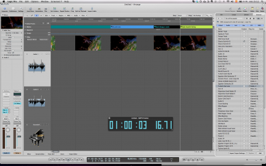
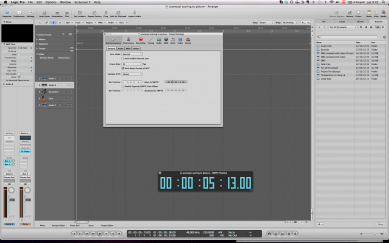
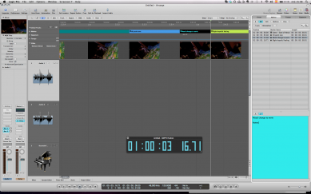

<?xml version="1.0" encoding="UTF-8"?><rss version="2.0"
	xmlns:content="http://purl.org/rss/1.0/modules/content/"
	xmlns:wfw="http://wellformedweb.org/CommentAPI/"
	xmlns:dc="http://purl.org/dc/elements/1.1/"
	xmlns:atom="http://www.w3.org/2005/Atom"
	xmlns:sy="http://purl.org/rss/1.0/modules/syndication/"
	xmlns:slash="http://purl.org/rss/1.0/modules/slash/"
	xmlns:itunes="http://www.itunes.com/dtds/podcast-1.0.dtd"
xmlns:rawvoice="http://www.rawvoice.com/rawvoiceRssModule/"
xmlns:googleplay="http://www.google.com/schemas/play-podcasts/1.0"

xmlns:georss="http://www.georss.org/georss" xmlns:geo="http://www.w3.org/2003/01/geo/wgs84_pos#"
>

<channel>
	<title>SCOREcast University &#8211; SCOREcastOnline.com</title>
	<atom:link href="." rel="self" type="application/rss+xml" />
	<link>http://www.scorecastonline.com</link>
	<description>Global Community for the Professional Media Composer</description>
	<lastBuildDate>
	Sun, 07 Apr 2019 10:06:34 +0000	</lastBuildDate>
	<language>en-US</language>
	<sy:updatePeriod>
	hourly	</sy:updatePeriod>
	<sy:updateFrequency>
	1	</sy:updateFrequency>
	<generator>https://wordpress.org/?v=5.1.1</generator>
<!-- podcast_generator="Blubrry PowerPress/7.4" mode="advanced" feedslug="feed" Blubrry PowerPress Podcasting plugin for WordPress (https://www.blubrry.com/powerpress/) -->
	<itunes:summary>Global Community for the Professional Media Composer</itunes:summary>
	<itunes:author>SCOREcast University &#8211; SCOREcastOnline.com</itunes:author>
	<itunes:image href="../../../wp-content/plugins/powerpress/itunes_default.jpg" />
	<itunes:subtitle>Global Community for the Professional Media Composer</itunes:subtitle>
	<image>
		<title>SCOREcast University &#8211; SCOREcastOnline.com</title>
		<url>../../../wp-content/uploads/powerpress/sig-SCO.jpg</url>
		<link>../</link>
	</image>
<site xmlns="com-wordpress:feed-additions:1">29563098</site>	<item>
		<title>Scoring to picture in Logic 9 (part 2)</title>
		<link>../../../2013/02/21/scoring-to-picture-in-logic-9-part-2/</link>
				<comments>../../../2013/02/21/scoring-to-picture-in-logic-9-part-2/#comments</comments>
				<pubDate>Thu, 21 Feb 2013 14:37:37 +0000</pubDate>
		<dc:creator><![CDATA[Yaiza Varona]]></dc:creator>
				<category><![CDATA[Latest Resources]]></category>
		<category><![CDATA[SCOREcast University]]></category>
		<category><![CDATA[Sequencing & Mockups]]></category>

		<guid isPermaLink="false">../../../?p=1981</guid>
				<description><![CDATA[In this second part of the "Scoring with Logic Pro" article series, Yaiza Varona talks about a few more features of Logic that can really make your life easier!]]></description>
								<content:encoded><![CDATA[<p><em>Hello everyone and welcome back! In this second article  I would like</em><em> to talk about some more ways in which Logic can make your life easier when scoring for video such as importing ideas from other project files and using stems.</em></p>
<p>&nbsp;</p>
<p><!--
@page { margin: 2cm }
P { margin-bottom: 0.21cm }
--><em>Let&#8217;s assume tha</em><em>t the </em><i>director has given me some extra notes about my cue</i><em>&#8230;happens to all of us, right?</em></p>
<p>&nbsp;</p>
<p>Well it might come handy as well copy paste them in <b>Notes</b> inside Logic (whose quick access you can find in the Toolbar, upper corner right). This feature isn´t exclusive of the Picture template, but it is especially helpful when you want to have quick access to your spotting notes, director´s remarks, latest stroke of inspiration&#8230;</p>
<p>&nbsp;</p>
<p><i>I wish I could use some instruments and themes from the previous scene I scored</i></p>
<p>&nbsp;</p>
<p>Wish granted. One of the most useful features in Logic is <b>Import</b> in the <b>Browser</b> of Media (ta-da!)</p>
<p>From it you can import any input/output source, plugin, project settings, content of track etc from any previous project into your current one. This allows you to:</p>
<p>&nbsp;</p>
<ul>
<li>Import that theme or motif that you used two cues ago. No need to copy-paste!</li>
<li>Import those strings that you liked so much in that old project from two years ago that would go so nicely in this precise cue</li>
<li>Build subtemplates of you choice (winds, strings, brass, funky synths, ethic percussion), including plugins (those lush strings with that precise reverb) that you´ll be able to coordinate flexibly as if you were working with modules</li>
</ul>
<p><a href="../../../2013/02/21/scoring-to-picture-in-logic-9-part-2/browser-2" rel="attachment wp-att-1983"></a></p>
<p>&nbsp;</p>
<p><i>Stems, stems, stems&#8230;</i></p>
<p>&nbsp;</p>
<p>The stems and submixes that are often required when scoring to picture can be obtained by different procedures. Here we will see the one that should be faster!</p>
<p>It basically consists in assigning whatever channels of similar material you have to a particular bus, that you will later use as an independent track on its own.</p>
<p>Let´s say something in the line: tracks 1-7 go to bus 1 called Strings, 8-9 to bus 2 called Bass, 10 to 17 to bus 3 called Drums&#8230;you name it. By doing so you are creating some aux channels in the mixer devoted to stem groups. Now, to record those stems, we shall use the outputs of each of those submixes as input sources of new tracks in the arrange.<br />
So, in the Arrange we create new audio tracks using the buses as input (as many as buses we created and we choose the first and go ascending). Now, if we click Record for the whole length of the track, these new tracks shall contain the stems.</p>
<p><em>That&#8217;s all ladies and gentlemen! Logic is a very powerful program and we have only touched upon very basic concepts but hopefully you have found something in here that can help you get started.</em></p>
<p><em>Remember, if you have any tips about scoring in Logic Pro, why not share them below at the comments section??? </em></p>
<p>&nbsp;</p>
]]></content:encoded>
							<wfw:commentRss>../../../2013/02/21/scoring-to-picture-in-logic-9-part-2/feed/</wfw:commentRss>
		<slash:comments>16</slash:comments>
						<post-id xmlns="com-wordpress:feed-additions:1">1981</post-id>	</item>
		<item>
		<title>Scoring In PreSonus Studio One &#8211; MIDI Workflow</title>
		<link>../../../2013/01/31/scoring-in-presonus-studio-one-midi-workflow/</link>
				<comments>../../../2013/01/31/scoring-in-presonus-studio-one-midi-workflow/#comments</comments>
				<pubDate>Fri, 01 Feb 2013 07:22:57 +0000</pubDate>
		<dc:creator><![CDATA[Nikola Jeremić]]></dc:creator>
				<category><![CDATA[Recording & Prep]]></category>
		<category><![CDATA[SCOREcast University]]></category>
		<category><![CDATA[Sequencing & Mockups]]></category>
		<category><![CDATA[Technology]]></category>
		<category><![CDATA[Workflow]]></category>

		<guid isPermaLink="false">../../../?p=1955</guid>
				<description><![CDATA[Presonus Studio One power-user Nikola Jeremic takes you through the process of MIDI workflow in Studio One! ]]></description>
								<content:encoded><![CDATA[<p align="center">Part 3:  MIDI Composing</p>
<p>Okay, so we’ve covered the basic features of <b><i>Studio One</i></b>, and we know how to make a scoring template for composing.</p>
<p>Now it is time to show you the actual MIDI options and workflow of Studio One for composers.<br />
Before I start, I want to say one thing: Studio One is not designed for film composers, so its MIDI features lack the power of Logic or Digital Performer, because it is a relatively young DAW (Version 2.5).  But, I am pretty confident that Studio One 3 will bring on the “heavy weapons”.</p>
<p>Having said that, let’s get this thing started.</p>
<p><b>MIDI tracks</b> in Studio One are called <b><i>Instrument Tracks</i></b>. You add an Instrument track by <b><i>right clicking</i></b> in the <b><i>light gray area</i></b> to the left of the <b><i>project window</i></b>, and click the <i>Instrument Track</i> option in the drop menu.</p>
<p><a href="../../../2013/01/31/scoring-in-presonus-studio-one-midi-workflow/add-instrument-track" rel="attachment wp-att-1968"></a>If you want to add multiple Instrument Tracks, you <i>right click</i> again in the <i>light gray area</i>, and select the first option called <b><i>Add Tracks</i></b>. You can also use the default shortcut for this (T). Once you choose that, a window will open showing you different options of tracks and setups you wish to add. You can add the names of those tracks, the number of tracks you wish to add, types of tracks (in this case its instrument Tracks), color of the tracks, input of the tracks (you can instantly choose which MIDI controller you wish do use), and output of the tracks. Output is an actual MIDI instrument you wish to use with the Instrument Tracks (i.e. Kontakt). Once you’ve made your choice, click <b><i>OK</i></b>, and you’re good to go.<br />
<a href="../../../2013/01/31/scoring-in-presonus-studio-one-midi-workflow/multiple-tracks" rel="attachment wp-att-1969"></a>The principle of MIDI recording and editing is pretty much similar as in every other DAW out there. You record a track, double click on it, and a <b><i>piano roll</i></b> will open (F2 is the shortcut). You can edit almost everything in piano roll. All of the familiar tools are there: <b><i>point tool, split tool, paint tool (which has multiple options for writing), mute tool and listen tool</i></b>. Paint Tool kind of resembles of Photoshop paint tool, giving you options of writing freehand, sine wave, line, parabola, square wave etc.<br />
<a href="../../../2013/01/31/scoring-in-presonus-studio-one-midi-workflow/piano-roll" rel="attachment wp-att-1970"></a></p>
<p>There is also a dedicated Quantize tool with a lot of options (these are called actions in Studio One).<br />
<a href="../../../2013/01/31/scoring-in-presonus-studio-one-midi-workflow/quantize-tool" rel="attachment wp-att-1971"></a></p>
<p>I won’t go deep into the options, but one interesting thing is adding humanization to MIDI notes. Even though the MIDI clip is quantized, adding humanization will change the velocities of the notes and nudge quantization a bit.</p>
<p>All of the options and actions can be added and edited with the pain tool.<br />
Modulation can be hand drawn if you don’t have a keyboard with mod wheel.<br />
<a href="../../../2013/01/31/scoring-in-presonus-studio-one-midi-workflow/modulation" rel="attachment wp-att-1972"></a></p>
<p>Same thing goes for velocity, pitch, and you can add other parameters that you would like to use on the MIDI track.</p>
<p>You add them by <b><i>left clicking on the three dot tab</i></b>, on the left of velocity tab.<br />
Once you click there, a new window will open, showing you all of the MIDI parameters you can add to the track. It’s as simple as choosing an option and clicking on <b><i>Add button</i></b>.<br />
<a href="../../../2013/01/31/scoring-in-presonus-studio-one-midi-workflow/parameters" rel="attachment wp-att-1973"></a>You can also pick a <b><i>scale</i></b> to use for writing. On the left side of the piano roll, there is an option for choosing a scale. Just click on the <b><i>Root</i></b> of the scale to choose, and on the <b><i>snap value</i></b> to pick the type of scale you would like.<br />
<a href="../../../2013/01/31/scoring-in-presonus-studio-one-midi-workflow/scale" rel="attachment wp-att-1974"></a></p>
<p>There is one more cool option that Studio One has. Right clicking on the MIDI track in the project window, shows you all of the MIDI options that you can use on the track. I like especially the velocity and humanize options. Velocity option can come in handy.  For example, your note velocities are set like you wanted them, and you have copied a couple of same parts of the MIDI clip. You would like the next clip to play a bit louder than the previous one, but your note velocities are going up until 127. You right click on the clip, and change the velocity percentage of the clip a bit up, so it plays louder than the previous part. Or for example, the instrument is programmed to play different samples on different velocities, so you can use this option to change the velocity of the desired note that triggers the sample. The way I wrote it, sounds a bit confusing, but you’ll get the picture. <br />
<a href="../../../2013/01/31/scoring-in-presonus-studio-one-midi-workflow/right-click-options" rel="attachment wp-att-1975"></a></p>
<p>And that is pretty much it…</p>
<p>I hope these few posts are, and will be, of help to you in your future exploration of PreSonus Studio One.</p>
]]></content:encoded>
							<wfw:commentRss>../../../2013/01/31/scoring-in-presonus-studio-one-midi-workflow/feed/</wfw:commentRss>
		<slash:comments>1</slash:comments>
						<post-id xmlns="com-wordpress:feed-additions:1">1955</post-id>	</item>
		<item>
		<title>Scoring to picture in Logic 9 (part 1)</title>
		<link>../../../2013/01/17/scoring-to-picture-in-logic-9-part-1/</link>
				<comments>../../../2013/01/17/scoring-to-picture-in-logic-9-part-1/#comments</comments>
				<pubDate>Thu, 17 Jan 2013 13:30:58 +0000</pubDate>
		<dc:creator><![CDATA[Yaiza Varona]]></dc:creator>
				<category><![CDATA[Latest Resources]]></category>
		<category><![CDATA[SCOREcast University]]></category>
		<category><![CDATA[Sequencing & Mockups]]></category>

		<guid isPermaLink="false">../../../?p=1961</guid>
				<description><![CDATA[Yaiza Varona guides you through the procedure of setting up Logic to score a movie, importing the movie and properly syncing it to your project. ]]></description>
								<content:encoded><![CDATA[<p><!--
@page { margin: 2cm }
P { margin-bottom: 0.21cm }
-->Scoring to picture with Logic</p>
<p>&nbsp;</p>
<p>When scoring to picture, Logic has a template dedicated especifically for this that can come in quite handy (therefore we´ll asume we´re using it already). Additionally, you can customize it yourself as seen in previous articles and speed up even more your scoring to picture!</p>
<p><a href="../../../2013/01/17/scoring-to-picture-in-logic-9-part-1/picture-template" rel="attachment wp-att-1976"></a></p>
<p><i>So I have a movie and I want to score it</i></p>
<p>&nbsp;</p>
<p>First thing obviously will be to import the movie into Logic, and then set up the synchronization with it. In the Global Tracks you can find a dedicated track for the movie where you can import it and see it on the Video Track or you can also import it from <b>File / Open Movie</b>.</p>
<p>For setting up the synchronisation, you can adjust the settings in <b>Project Settings / Synchronisation</b> (frame rate and bar position in reference to SMTPE) and <b>Project Settings / Video</b> (Movie Start field).</p>
<p><a href="../../../2013/01/17/scoring-to-picture-in-logic-9-part-1/synchronisation" rel="attachment wp-att-1977"></a></p>
<p>It´s always prudent to double check these parameters are well adjusted by checking the burnt in SMPTE code of your clip coincides all along the project with the SMPTE display in Logic (in the transport bar, you can even find an independen giant display)</p>
<p>&nbsp;</p>
<p><i>Now my movie plays smoothly in Logic- how to start scoring?</i></p>
<p>&nbsp;</p>
<p>Once you have those specifications clear the next step is to display in Logic that mental map that you have of how you want to score your scene. How?</p>
<p>One of the major characteristics of writing music to picture is that the structure of the cue shall be shaped by the events in the clip instead of being bar / musical divisions based. This is what will make navigating the project a bit different!</p>
<p>&nbsp;</p>
<p>Having in mind what hit points you don´t want to miss in your movie and will shape its structure, the easiest way to keep them and navigate through them is by using Markers. After a spotting session, every relevant event (entry of a cue, change of mood, hit points, etc) can be marked in the exact SMTPE position using markers.</p>
<p>&nbsp;</p>
<p>For locating those precise time references you can use the<b> Go to Position</b> key command (/) and write there the SMTPE position you want to locate and press Return; Logic´s playhead will have found that precise spot and there you can create a marker without rounding. This means the marker will be placed at exactly the SMTPE position indicated instead of approximating it to the next bar as it would be helpful when songwriting.</p>
<p><a href="../../../2013/01/17/scoring-to-picture-in-logic-9-part-1/go-to-position" rel="attachment wp-att-1978"></a></p>
<p>You can create markers without rounding in <b>Option/Marker/ Create without roundin</b>g or use a key command for it (will vary on your keyboard, by default all key commands involving Markers tend to include letter “K”).</p>
<p>&nbsp;</p>
<p>Once the markers are defined, you can find them in Lists (by default there is a direct access to it in the right up corner). There you can rename them and you will find also space to type any notes regarding that hitpoint that you might need.</p>
<p>However, the most important task now once the markers are conveniently defined is to SMTPE lock them so they will remain unmoved in their position if the project´s tempo is modified. For this you can simply right click on the marker and select “<b>Lock SMTPE position</b>” or use the Option local menu of the Marker List. You will see a little lock icon appear next to the marker, indicating it´s been locked.</p>
<p><a href="../../../2013/01/17/scoring-to-picture-in-logic-9-part-1/markers" rel="attachment wp-att-1979"></a></p>
<p>A very handy feature here is <b>Detect Cuts</b>, that you can find in the Video Global Track and captures major visual changes and helps you spot potential hit points that your score may want to underline. It will also by default find the beginning and end of the movie. It might help you locate some points and if you´re not happy with them, you can always delete them from the list.</p>
<p>&nbsp;</p>
<p>One more thing to make the marker list more friendly: you can choose to show the position of each marker in SMTPE units rather than in using its absolute position in the local menu <b>View/Event position and length in SMTPE units</b>.</p>
<p>&nbsp;</p>
<p>Once the markers are well defined and locked, a helpful tip can be to colour them in order to visually find them quicker; as with any other region in Logic, this can be easily done by selecting the marker and using the colour palette by pressing <b>OPT+C</b> and choosing the desired colour on it. The same colours shall appear in the Markers list, making it easy to differenciate them one another.</p>
<p>&nbsp;</p>
<p><i>Now, how to quickly navigate markers?</i></p>
<p>&nbsp;</p>
<p>There are two main ways; one, in the Arrange, using the key commands for it (you can define them as any key commands or choose the default ones in Option/ Markers): <b>Go to previous / next marker</b>, or <b>Go to Marker Number</b> “x”. This will accelerate your navigation of the project quite dramatically, especially because it allows you to navigate flexibly and conceptually rather than using a bar-based grid (which again is great for songwriting but not so much for rhapsodic scoring to picture).</p>
<p>&nbsp;</p>
<p>The second way is using the <b>Marker List</b>; you can CMD click on the desired marker (this brings by default the Finger Tool) and the playhead will follow it. Some composers also like to have the Markers List as an independent window (that can be opened by using OPT+M) maybe to be used in a second screen!</p>
<p><a href="../../../2013/01/17/scoring-to-picture-in-logic-9-part-1/marker-list-window" rel="attachment wp-att-1980"></a></p>
]]></content:encoded>
							<wfw:commentRss>../../../2013/01/17/scoring-to-picture-in-logic-9-part-1/feed/</wfw:commentRss>
		<slash:comments>7</slash:comments>
						<post-id xmlns="com-wordpress:feed-additions:1">1961</post-id>	</item>
		<item>
		<title>Dynamic Controllers &#8211; Origins, History and Compressor Controls</title>
		<link>../../../2012/11/29/dynamic-controllers-origins-brief-history-and-compressor-controls/</link>
				<comments>../../../2012/11/29/dynamic-controllers-origins-brief-history-and-compressor-controls/#respond</comments>
				<pubDate>Thu, 29 Nov 2012 19:52:21 +0000</pubDate>
		<dc:creator><![CDATA[Jorge Costa]]></dc:creator>
				<category><![CDATA[Latest Resources]]></category>
		<category><![CDATA[Mixing & Mastering]]></category>
		<category><![CDATA[SCOREcast University]]></category>

		<guid isPermaLink="false">../../../?p=1928</guid>
				<description><![CDATA[After a brief introduction to mixing, Jorge Costa dedicates this and the next articles to dynamic controllers with central focus on compressors, how they operate and how to use them.]]></description>
								<content:encoded><![CDATA[<h2 style="text-align: justify;">Origins</h2>
<p style="text-align: justify;">(<em>this could take several articles, but let’s get slim on the facts and skip but the relevant ones, to avoid you catching some z’s while trying to read this</em>).</p>
<p style="text-align: justify;">Compressors appear in radio from the necessity to solve the problem of sound sources of different levels, preventing the transmitters overload and blow. Before that, the only solution was the radio engineer riding the fader down on loud parts and push it up on soft ones. As you may guess, unless those guys were fast as “<em>Lucky Luke</em>” their success was nothing but short. They need a device that had a peak control to protect the transmitter, (<em>AM at the time</em>) while balancing different material to be broadcast at consistent levels. Those have been called at the time, leveling amplifiers or limiters, but act pretty much like our days compressors. True limiting took “<em>some</em>” years to became as we know it today, with the help of better technology.</p>
<p style="text-align: justify;">The first dynamic compressor made it’s appearance on the public address system at the 1936 Olympics, it was a <em>Telefunken</em> U3.</p>
<p style="text-align: justify;">Studio engineers also adopt compressors to help them in the gain riding of live performances, to avoid distortion when they cut to disk, prevent tapes from over saturation and in digital to get rid of clipping.</p>
<p style="text-align: justify;">Over the years these outboard units improved greatly and still are in use today (<em>for those who can afford the luxury of having vintage compressors racks</em>) from top studios, producers and mastering facilities. Later some mixing consoles manufacturers incorporate compressors in they channel strip desks. Today, in our DAWs, we abuse the use of plug-ins and in this particular case compressors as <em>Seinfeld</em> says <em>because we can</em> !!!</p>
<p style="text-align: justify;">Do we know how to set it correctly or do we slap it on track and go wow cool, it’s loud now.</p>
<p style="text-align: justify;">Let’s find out, first will have a look at the some of the ways used to get compression.</p>
<p style="text-align: justify;"><a href="../../../2012/11/29/dynamic-controllers-origins-brief-history-and-compressor-controls/dynamic-new-graphs-01" rel="attachment wp-att-1940"></a></p>
<h2>Dynamic controllers</h2>
<h3>Dynamic controllers modify the dynamic range of a signal</h3>
<p><a href="../../../2012/11/29/dynamic-controllers-origins-brief-history-and-compressor-controls/dynamic-new-graphs-02" rel="attachment wp-att-1941"></a></p>
<h2>Dynamic Controllers Graphics</h2>
<p><a href="../../../2012/11/29/dynamic-controllers-origins-brief-history-and-compressor-controls/dynamic-new-graphs-03" rel="attachment wp-att-1942"></a></p>
<h2>Compression</h2>
<p style="text-align: justify;">Compressors reduces the dynamic range of a signal, boosting the quieter signals and attenuating the louder ones, making the difference between loudest and softest sounds shorter by “<em>squashing</em>” it.</p>
<p style="text-align: justify;"><strong>Threshold</strong>: this setting dictates (<em>generally in dB</em>) the level at the compressor kicks in, how loud the signal as to be before gain reduction begins.</p>
<p style="text-align: justify;">Low values will compress most of the signal, with higher values only the peaks (<em>highest levels of the signal</em>) will be compressed letting signals below the threshold unaffected (<em>with hard knee</em>).</p>
<p style="text-align: justify;">(<em>There are some compressors that don&#8217;t have a dedicated threshold control /slider, these are fixed threshold units. In this case it&#8217;s the input knob that rules, the higher the input the more it overshoots the fixed threshold</em>).</p>
<p style="text-align: justify;"><em>0 dB (calibrated mark) is the highest signal level you can reach in digital before clipping, a threshold setting of &#8211; 8 dB tells the compressor to kick in 8 dB bellow 0 dB</em>.</p>
<p style="text-align: justify;"><strong>Ratio</strong>: controls the amount of compression applied between input and output signals above the threshold.</p>
<p style="text-align: justify;">A 1:1 ratio means no compression is applied, but a 2:1 ratio means that any input signal that overshoots the threshold say 6 dB will leave the compressor with a 3 dB reduction.</p>
<p style="text-align: justify;">( &#8211;<em> 6 dB threshold, ratio 2:1, signal leaves at &#8211; 9dB a 3 dB reduction above threshold</em>)</p>
<p style="text-align: justify;">Most compressors ranging from 2:1 to 20:1, at this ratio, is considered a <strong>Limiter</strong> (<em>actually since a 10:1 ratio is <strong>Limiting</strong></em>).</p>
<p style="text-align: justify;"><strong>Attack</strong>: controls the time the compressor takes to react to signals above the threshold (<em>in milliseconds</em>). With (<em>lower value numbers</em>) fast attack times, the signal will be attenuated almost immediately. With medium to fast attack times, it lets the initial peaks pass before the compressor kicks in (<em>this can add a punchier sound with percussive effect</em>). With a slower attack, it lets a sustained note passing thru before the compressor reacts.</p>
<p style="text-align: justify;"><strong>Release</strong>: controls the time the compressor takes to react to signals bellow the threshold and stop compressing (<em>also in milliseconds</em>). The lower the number, the faster the release time. With very fast release times the compressor stops working immediately as soon it falls bellow the threshold (<em>in most cases, this can sound unnatural</em>). With too slow release times, the compressor may attenuate a soft passage followed by a loud one, simply because the unit had no time to recover.</p>
<p style="text-align: justify;">(<em>some compressors have switchable <strong>auto attack</strong> or <strong>auto release</strong> buttons, when those are engaged the fixed values stop being constant and will change automatically according to the level of the input signal</em>).</p>
<p style="text-align: justify;"><strong>Hard or Soft knee</strong>: Some compressors have the option between hard or soft knee. With hard knee the compression kicks instantly when the threshold overshoots. With soft knee, compression is obtained gradually (<em>curve shape rather than hard angled</em>) on both sides of the threshold, thus more gently and more transparent, hard knee has more compression effect.</p>
<h2 style="text-align: justify;"> Hard knee  and  Soft knee</h2>
<p><a href="../../../2012/11/29/dynamic-controllers-origins-brief-history-and-compressor-controls/hard-knee-4" rel="attachment wp-att-1934"></a> <a href="../../../2012/11/29/dynamic-controllers-origins-brief-history-and-compressor-controls/soft-knee-2" rel="attachment wp-att-1935"></a></p>
<p><strong>Make-up gain</strong>: automatic compensates the gain loss in compression relative to the threshold, ratio and attack settings.</p>
<p style="text-align: justify;"><strong>Gain reduction meter</strong>: displays the amount of compression applied to the signal (<em>in dB</em>). Showing when gain reduction occurs, when it starts and when it stops, a good visual indicator to better adjust helper for attack and release settings. Some compressors have <em>LED</em> bargraph others have <em>needle</em> type meters. Bargraph is quicker to respond, thus more accurate.</p>
<p style="text-align: justify;"><strong>Output</strong>: self explanatory, allows you to attenuate or boost the compressor output signal.</p>
<p style="text-align: justify;"><strong>Side chain</strong>: allows the amount of compression be triggered by an external signal fed via an auxiliary output to the unit side chain input. For example to reduce sibilance (<em>in conjunction with EQ</em>) and duking, to name but two.</p>
<p style="text-align: justify;"><strong>Stereo linking switch</strong>: a stereo compressor is basically a unit with two mono compressors working independently (<em>dual mono mode</em>). This switch allows both compressors to work as two identical ones preventing image shifting.</p>
<p style="text-align: justify;">Today we have the fortune to incorporate most of hardware compression units emulated in our Daws like this Logic plugin.</p>
<p style="text-align: justify;"><a href="../../../2012/11/29/dynamic-controllers-origins-brief-history-and-compressor-controls/dynamics-new-graph-04" rel="attachment wp-att-1943"></a></p>
<p>With third party top plugins those emulations are becoming even better with every new version. Like Waves, Universal Audio, Sonnox, to name just a few excellent ones.</p>
<p>&nbsp;</p>
<p><em>Stay tuned for the following part on compressors operational and other dynamic controllers tips.</em></p>
<p>&nbsp;</p>
]]></content:encoded>
							<wfw:commentRss>../../../2012/11/29/dynamic-controllers-origins-brief-history-and-compressor-controls/feed/</wfw:commentRss>
		<slash:comments>0</slash:comments>
						<post-id xmlns="com-wordpress:feed-additions:1">1928</post-id>	</item>
		<item>
		<title>Scoring With PreSonus Studio One &#8211; Setting Up</title>
		<link>../../../2012/11/22/scoring-with-presonus-studio-one-setting-up/</link>
				<comments>../../../2012/11/22/scoring-with-presonus-studio-one-setting-up/#comments</comments>
				<pubDate>Thu, 22 Nov 2012 14:00:03 +0000</pubDate>
		<dc:creator><![CDATA[Nikola Jeremić]]></dc:creator>
				<category><![CDATA[Latest Resources]]></category>
		<category><![CDATA[SCOREcast University]]></category>
		<category><![CDATA[Sequencing & Mockups]]></category>
		<category><![CDATA[Workflow]]></category>

		<guid isPermaLink="false">../../../?p=1893</guid>
				<description><![CDATA[Studio One power-user Nikola Jeremic takes you through the process of setting up Studio One for some serious scoring work!]]></description>
								<content:encoded><![CDATA[<p style="text-align: justify">I’ve been talking enough about the features; now let me show you the true power of Studio One.<br />
Okay, since all of us at SCOREcast are composers, we all know how important it is to meet the deadline right? And all of us have made our own starting templates for composing, in order to save time as much as we can, right?<br />
Making a scoring template in Studio One is very easy. Traditional orchestral scoring template has strings, woodwinds, brass, percussion, and if you’re a bit of a modern type, you add choirs and synthesizers. Now, my template is rather simple, since I have a very old PC with small amount of  RAM and not so powerful processor(4GB of RAM and Intel dual core CPU), so I have to make some sacrifices obviously. I have 6 instances of  Native instruments Kontakt, and each of them has 16 outputs that are patched to Studio One’s mixer. So, 96 tracks in total, but I rarely use all of them. Sometimes, if my poor little PC allows it, I add Omnisphere or Trillian to the template. Also rewiring other DAWs like Ableton or Reason is very easy and very useful if you like their instruments. I personally like Reason and I use it as a big hybrid synth that’s being rewired to my Studio One project.</p>
<p style="text-align: justify">Here’s how my default template looks like when I start the project:<br />
<a href="../../../2012/11/22/scoring-with-presonus-studio-one-setting-up/default-edit-window1" rel="attachment wp-att-1894"></a></p>
<p style="text-align: justify">For easier spotting, I’ve marked sections of the orchestra in different collors. They are all sorted out nicely into folders, and great feature in Studio One is that you can select the tracks you want, right click and click the option for sorting tracks into folder, when the drop menu appears.When you’ve created your desired number of tracks and sorted them out into folders, next thing that you should do is patch the instruments’ inputs into proper MIDI channels and route Kontakt patches into proper Kontakt outputs.</p>
<p style="text-align: justify">Here’s an example of how to route string patches:<br />
I’ve named my string section tracks as „Strings 1 – 16“, and I’ve assigned them to their proper MIDI channels 1-16 to match the channels of Kontakt. I’ve also named the Kontakt instance for string section as “Strings”, so I know that it is only using string patches.</p>
<p style="text-align: justify"><a href="../../../2012/11/22/scoring-with-presonus-studio-one-setting-up/kontakt-strings-routing" rel="attachment wp-att-1895"></a></p>
<p style="text-align: justify"> I rename the tracks properly when I have decided which articulations and which instrument from the section I am going to use for the project. And that varies from project to project. That is why I am naming the tracks as 1,2,3,4 etc. in each section. After that, you need to activate those Kontakt outputs to be heard in Studio One. So here’s how it is done:</p>
<p style="text-align: justify">You open <em>the mixer window (F3 by default),</em> and click on the bottom of the left side where it says <em>„instr“.</em></p>
<p style="text-align: justify"><a href="../../../2012/11/22/scoring-with-presonus-studio-one-setting-up/instr-click" rel="attachment wp-att-1897"></a></p>
<p style="text-align: justify">Now the list of all of your loaded instruments is being shown. Click on the arrow pointing down to the left of your Kontakt and click <strong><em>“expand”</em></strong> on the drop-down menu. You have to check out all the channels of Kontakt that you want to use in order to be shown in the mixer window.</p>
<p style="text-align: justify"><a href="../../../2012/11/22/scoring-with-presonus-studio-one-setting-up/vst-instrument-channel-expand" rel="attachment wp-att-1896"></a></p>
<p style="text-align: justify">The principle is the same for all of the multichannel instruments.</p>
<p style="text-align: justify">Saving your template is rather easy. You need to click <strong><em>File/Save As Template</em>, </strong>and name the template as you want. Every time you start a new orchestral session, you can load your template from the menu that opens up when you’re creating a new song(FYI,projects in Studio One are called songs).</p>
<p style="text-align: justify">Now all you need to do is import the video that you’re scoring.<br />
Studio One doesn’t have the video track, but instead you load your video into Studio one video player and it is automatically synced. When you click play button in Studio One, the video will start rolling as well. If you want to add marker positions for your video, you have to scroll through the video and place markers on the marker track. I like to keep my transport bar count set to bars instead of frames, because when I am writing music for video, I want to sync my music to it and still follow the proper musical­ beat. To add a marker, you need to find the place where you want to put the marker, and click the <em>“+”</em> button on the left of the marker track, and you will see the marker tagged with a number on the marker track. You can rename the marker by double-clicking on it and typing in a name in the pop-up window. As far as the time signature goes, video is not always in the tempo with the music, and we want to make the scene changes on the music beat. Place a marker on the scene change and <em>right click</em> above it and choose <em>set time signature</em>. The pop-up window will show and you can put your desired time signature. This is useful when syncing music to change right with the scene. For example: if your time signature is set to 4/4 and the scene is not changing exactly on the metronome’s beat, you will need to add or remove a couple of beats to perfect the timing.</p>
<p style="text-align: justify"><a href="../../../2012/11/22/scoring-with-presonus-studio-one-setting-up/marker-track" rel="attachment wp-att-1898"></a></p>
<p>Now you have a project set up in place, and you are ready to do some film scoring!!</p>
<p>I hope this article helped you in getting to know Studio One a bit better. If you have any questions feel free to ask!</p>
<p style="text-align: justify">
]]></content:encoded>
							<wfw:commentRss>../../../2012/11/22/scoring-with-presonus-studio-one-setting-up/feed/</wfw:commentRss>
		<slash:comments>8</slash:comments>
						<post-id xmlns="com-wordpress:feed-additions:1">1893</post-id>	</item>
		<item>
		<title>Scoring With Presonus Studio One &#8211; Introduction</title>
		<link>../../../2012/11/15/scoring-with-presonus-studio-one-introduction/</link>
				<comments>../../../2012/11/15/scoring-with-presonus-studio-one-introduction/#comments</comments>
				<pubDate>Thu, 15 Nov 2012 14:00:56 +0000</pubDate>
		<dc:creator><![CDATA[Nikola Jeremić]]></dc:creator>
				<category><![CDATA[Latest Resources]]></category>
		<category><![CDATA[Mixing & Mastering]]></category>
		<category><![CDATA[SCOREcast University]]></category>
		<category><![CDATA[Sequencing & Mockups]]></category>

		<guid isPermaLink="false">../../../?p=1882</guid>
				<description><![CDATA[Presonus Studio One power-user Nikola Jeremic presents the features that make Studio One a highly versatile and essential tool in any modern composer's arsenal. ]]></description>
								<content:encoded><![CDATA[<p style="text-align: justify">Choosing a DAW is like choosing a new car for you, and each of us has our own personal taste to satisfy. I know how hard it is to start learning things from scratch, and that’s the reason why many composers out there are reluctant to take a new step forward. First time I met Studio One was at a friend’s studio, and, of course, I was rather unwilling, maybe even scared, to work on it.</p>
<p style="text-align: justify">I have to admit that I was soooooo wrong at first!  First look at Studio One’s interface got me hooked immediately. Sure, maybe it looks a bit sterile because it’s all gray-ish, but I like simplicity. I don’t like millions of colors jumping all over the screen, it just gets me distracted. The second thing that I like about it is that every project that I bounce sounds exactly the way I intended it to sound. In this first part, I will show you some of its features and make a comparison with other major DAWs on the market.</p>
<h2 style="text-align: justify" align="center"><strong><em>The Birth of Studio One</em></strong></h2>
<p style="text-align: justify">How did Studio One come to life? There’s a little company in Baton Rouge, Louisiana called PreSonus, and they’ve been around for years making very affordable and high quality audio hardware.</p>
<p style="text-align: justify">Only recently they have started making DAW software, and they’ve made a smart move to hire ex-employees of Steinberg to work on their first ever DAW called Studio One 1.0.<br />
That happened in 2009, and during the course of two years and a lot of updates, a new Studio One 2 was born.</p>
<p>&nbsp;</p>
<h2 style="text-align: justify" align="center"><strong><em>The Features</em></strong></h2>
<p style="text-align: justify">Studio One has a state-of-the-art audio engine which delivers incredibly accurate sound, and its Professional version has a 64-bit floating-point version of that engine which automatically switches between 64-bit and 32-bit to accommodate 32-bit plug-ins. It has an integrated <em>Celemony Melodyne</em> pitch correction. Using Melodyne with other DAWs can be a gruesome task due to long latency of transfers from the track to Melodyne, and of course, the fact that Melodyne knows nothing about the edits of the track. Melodyne and Studio One are integrated so tightly, and you can say that Melodyne is practically a part of Studio One. With one click, your audio track is opened in the editor window with traditional Melodyne interface. No other DAW has this feature.</p>
<p style="text-align: center"></p>
<div>
<p style="text-align: justify">For quantizing multitrack drums, Studio One analyzes the tracks and does a phase-coherent quantization with very nice results. <em>Groove Panel</em> is the tool that does this.</p>
<p style="text-align: center"></p>
<p style="text-align: justify">Simply drag and drop audio in the Groove Panel, and then quantize it. You can also extract the groove from one audio track and apply it to another audio track.</p>
<p>As far as I’ve seen it, Studio One has the best track and project organization out there. Keeping things organized is a breeze with <em>Folder Tracks</em> and <em>Track List</em>.<br />
Grouping tracks into folders is a one click process in Studio One. Simply select all of the tracks that you want, and then <em>right click</em> and select <em>Pack Folder </em>in the drop menu.<br />
Track List is similar to Pro Tools, you have a view of all of the tracks in your project, and simple selecting and de-selecting makes them visible in the project window.<br />
Also track list can be synced to Studio One mixer, so only selected tracks are visible in the mixer as well.</p>
<p style="text-align: center"><a href="../../../2012/11/15/scoring-with-presonus-studio-one-introduction/tracks-folders" rel="attachment wp-att-1885" target="_blank"></a></p>
<p style="text-align: justify">Maybe the best feature of Studio One, besides Melodyne integration, is <em>Project</em>. When we talk about Projects we usually think about our project session in DAWs.<br />
Standard project is called <em>Song </em>in Studio One, and Project represents a mastering suite in Studio One. No other DAW offers a truly integrated mastering suite comparable to the Project page in Studio One Professional. In Project window, Studio One provides you with all of the necessary tools for mastering such as <em>Phase Meter, Spectrum Analyzer, Peak/RMS Level Meters</em>, and also is offers <em>DDP Export, PQ Editing, higher quality sample-rate conversion</em> etc&#8230; You can master your entire album in this window as a single project. You only need to arrange tracks as you want them, master each one individually(in the same window) and when you&#8217;re done, just burn the project directly to CD without any trouble.</p>
<p style="text-align: center"><a href="../../../2012/11/15/scoring-with-presonus-studio-one-introduction/mastering-window" rel="attachment wp-att-1886"></a></p>
<p style="text-align: justify">Oh by the way, did I mention that Studio One is directly connected to your Sound Cloud account, so you can automatically upload your finished songs to Sound Cloud?</p>
<h2 style="text-align: justify"><strong><em>The Bundles</em></strong></h2>
<p style="text-align: justify">So what&#8217;s included in Studio One? There are Effects, Instruments and Bundled Content included in different versions of Studio One.</p>
<p style="text-align: justify"><strong>EFFECTS</strong></p>
<ul>
<li><em>Distorzion</em> – Ampire FX(Guitar Amp Modeling Suite) and Red Light Distorzion.</li>
<li><em>Dynamics</em> – Channel Strip, Compressor, Expander, Gate, Limiter, Multiband Dynamics and Tricomp.</li>
<li><em>Equalization</em> – Pro EQ.</li>
<li><em>Meters And Analysis</em> – Level Meter, Phase Meter, Scope, Spectrum Meeter, Tone Generator and Tuner.</li>
<li><em>Modulation </em>– Auto Filter, Chorus, Flanger, Phaser and X-Trem.</li>
<li><em>Reverb &amp; Delay</em> <em>–</em> Analog Delay, Beat Delay, Groove Delay, Mixverb, Openair and Room Reverb.</li>
<li><em>Specialized –</em> Binaural Pan, Dual Pan, IR Maker, Mixtool and Pipeline.</li>
</ul>
<p style="text-align: justify">My experience with these effects is very positive. All of us here at SCOREcast are composers and we rely on our sample libraries, so you will agree that most of those libraries are already mixed nicely, and they don&#8217;t need much tampering with them. My motto is „If it sounds good, don&#8217;t change it“, so I am using as less as I can to mix my projects. I am using Pro EQ for adding just a little bit of color to my tracks and notching a bad frequency or two. The big bonus is that all of these bundled effects are very easy on the CPU, even if you are using an old dual core (unfortunately I&#8217;m one of those).</p>
<p style="text-align: justify">I know that most of you Logic lovers will state that Logic has the best bundled instruments out there, and I have to agree with you, but Studio One has a thing or two to offer in this area.<br />
The instruments are:</p>
<p style="text-align: center"><strong><em>Impact</em></strong> – Sample trigger instrument for beat programming.<br />
<a href="../../../2012/11/15/scoring-with-presonus-studio-one-introduction/impact" rel="attachment wp-att-1887"></a></p>
<p style="text-align: center"><strong><em>Mojito</em></strong> – Monophonic Subtractive Synthesizer.<br />
<a href="../../../2012/11/15/scoring-with-presonus-studio-one-introduction/mojito" rel="attachment wp-att-1888"></a></p>
<p style="text-align: center"><strong><em>Presence</em></strong> – Advanced sample player with a vast library of sounds.<br />
<a href="../../../2012/11/15/scoring-with-presonus-studio-one-introduction/presence" rel="attachment wp-att-1889"></a></p>
<p style="text-align: center"><strong><em>Sample One</em></strong> – Basic sample player.<br />
<a href="../../../2012/11/15/scoring-with-presonus-studio-one-introduction/sample_one" rel="attachment wp-att-1890"></a></p>
<p style="text-align: justify">I am using Impact and Sample One in most of my new scores. I have been making some of my own custom pads, and Sample One is the perfect player for them.<br />
Also triggering big impacts and swoosh effects is a must with Impact.</p>
<p style="text-align: justify">In addition to this, Studio One has a large outline of third party sounds for its instruments.<br />
Also, PreSonus have partnered with Native Instruments to include Native Instruments Komplete Elements/Players for Studio One.</p>
<h2 style="text-align: justify" align="center"><strong><em>The Versions</em></strong></h2>
<p style="text-align: justify">Studio One comes in four versions to suit your needs: <em>Free, Artist, Producer and Professional.</em></p>
<p style="text-align: justify"><em>Studio One Free</em> is intended for beginners who are new to Studio One. It features all of the basic tools for music production, and it is 100% as its name states. You can download it directly from PreSonus website.</p>
<p style="text-align: justify"><em>Studio One Artist </em>has all of the core audio and MIDI recording and editing features, plus a big load of 32-bit effects and instruments. Unlike other DAWs, this one has unlimited track count or editing features.</p>
<p style="text-align: justify"><em>Studio One Producer</em> includes everything in Artist version and adds support for ReWire and AU/VST plug-ins and traditional third-party content.</p>
<p style="text-align: justify"><em>Studio One Professional</em> is the most complete version of Studio One. It has everything you get in previous versions, plus an integrated mastering solution, fully licensed Melodyne Essential pitch correction; Sound Cloud support, Red Book CD burning, video playback and sync, and five more Native Effects plug-ins: Groove Delay, Multiband Dynamics, OpenAIR, Pipeline, and IR Maker.</p>
<p style="text-align: justify">You can see the comparison of Studio One versions on its official website:<br />
<a href="http://studioone.presonus.com/what-are-the-versions/"><em>http://studioone.presonus.com/what-are-the-versions/</em></a><em></em></p>
<p style="text-align: justify">This is it as far as the introduction goes. Next time I am going to show you how to set up your own scoring template using Studio One!</p>
</div>
]]></content:encoded>
							<wfw:commentRss>../../../2012/11/15/scoring-with-presonus-studio-one-introduction/feed/</wfw:commentRss>
		<slash:comments>9</slash:comments>
						<post-id xmlns="com-wordpress:feed-additions:1">1882</post-id>	</item>
		<item>
		<title>Sequencing and Processing Woodwinds</title>
		<link>../../../2012/11/01/sequencing-and-processing-woodwinds/</link>
				<comments>../../../2012/11/01/sequencing-and-processing-woodwinds/#respond</comments>
				<pubDate>Thu, 01 Nov 2012 13:00:16 +0000</pubDate>
		<dc:creator><![CDATA[Asimakis Reppas]]></dc:creator>
				<category><![CDATA[Latest Resources]]></category>
		<category><![CDATA[SCOREcast University]]></category>
		<category><![CDATA[Sequencing & Mockups]]></category>

		<guid isPermaLink="false">../../../?p=1849</guid>
				<description><![CDATA[In this second article about sequencing and mixing orchestral sections, Asimakis Reppas looks at how you can make your woodwind mockups come to life!]]></description>
								<content:encoded><![CDATA[<p><em>Hello again! For all those that missed the first article about the Strings section of the orchestra, please take a while and read through it <a title="Sequencing and Processing Strings" href="../../../2012/06/07/sequencing-and-processing-strings" target="_blank">here</a>. There are some tips and tricks that I’ve covered and I won’t be repeating here. In this article, I’ll be covering the Woodwinds section of the orchestra, what makes it special and how we can process all and each individual instrument. Again I’d recommend you study a little bit of the instrumentation and orchestration theory behind the Woodwinds (this means reading Stellita’s articles starting <a title="Woodwinds: The Underused Gems of the Orchestra" href="../../../2012/10/15/woodwinds-the-underused-wonders" target="_blank">here</a>). Happy reading!</em></p>
<p>For the most part, the Woodwinds section of the orchestra is used as a utility / auxiliary section (since we are mainly talking about modern TV and Film music). What makes it special though, is that from the three major orchestra sections (Strings, Woodwinds and Brass), the instruments that form the Woodwinds section, have the least coherent timbre. For example, we can say that you can’t mistake an oboe for a clarinet as you may mistake a viola playing in the high register for a violin. Their unique character is what makes each one of the Woodwind instruments a perfect candidate for solo passages! Also keep in mind that a Woodwind’s “color” changes drastically relatively to the register it plays (excluding the Clarinet).</p>
<h2>MIDI Sequencing and Arranging</h2>
<p>Everything I’ve covered about Time and Dynamics during the “Sequencing and Processing Strings” article can be used for the Woodwinds too.</p>
<p>As the name suggests, Woodwinds need air! So give them air to breath during phrases. Try not to overdo it with endless legato passages, as there is a high risk of killing the performer… er… I mean the performance. Don’t underestimate the value of the “rest” in music, especially while writing for solo instruments. Placing rests between phrases will help you achieve a realistic performance; it will let the music “breath” and will emphasize the role of the instrument.</p>
<p>A well thought out arrangement can help you solve many problems that will arise during the mixing process. Woodwinds tend to have lots of low-mid frequencies. If you have a busy orchestration, make a virtual map of the role the Woodwinds play during each section of the track. If they have a supporting role (i.e. doubling the lines of the Strings) keep them in the background (dynamic wise), but when they have a main role (i.e. solo) try to keep other instruments out of the way, either by using good counterpoint, or by using instruments and registers that don’t interfere with the “frequency body” of the Woodwinds (more on that latter on the mixing section).</p>
<p>Woodwinds are a great tool to add depth and realism in your composition, though many composers disregard them as weak instruments and others just forget about them. Going back to instrumentation theory, we can see that Woodwinds are capable of some fantastic effects. Flutter, grace notes, octave runs, falling effect, overblows and trills are some of the most commonly used “weapons” of the Woodwinds family. These effects can spice up your composition and make it come to life. Because some of these effects are difficult to reproduce with MIDI sequencing techniques, many libraries come with articulations of pre-recorded effects. A sure bet if you want to increase the production value of your music.</p>
<p>Now let’s examine one of the most difficult effects to reproduce with standard MIDI techniques, in the hope of achieving a realistic sounding result. Say we want to put a flute octave run in our composition but our library doesn’t have an appropriate articulation. How can we make something close to the real thing without making the result sound cheesy and cheap? Well as we said during the article about the Strings section, to achieve realism through MIDI we need to reproduce the Time and Dynamics of a human performance. With that in mind, we can start placing the notes for our octave run. First we need to make sure that there is no quantization. Allow some of the notes to start a little early and some a little late, while making sure that they overlap each other. Make minor adjustments to the velocity of each not, while keeping the first and the last as the maximum. Bring up the expression (CC11) automation and make a curve that start at the first note, goes down a bit till the middle of the run and comes up at maximum just before the final note. Now duplicate the MIDI track and assign the first one to a legato articulation and the second one to a staccato articulation. Go to the staccato track and bring further down the velocity of the intermediate notes. Mix the staccato track lower than the legato one, as we don’t want to overemphasize the attack of the notes. The staccato track is there, only to support the sound. Listen and adjust the velocity and expression curve accordingly. (Note: With some libraries you won’t need the staccato track as the legato one could suffice if the scripting was done appropriately)</p>
<p>Remember how we said that the Strings section can sound a lot better when combining two different sample libraries together? For the Woodwinds it is very difficult to find two libraries that work well together, so most of the times you would do better with a single one. There is also another reason you should avoid doubling the libraries for the Woodwinds. The number of players that are supposed to be playing in the Woodwinds section, doesn’t consist of the huge amount of players as the Strings (they don’t need to), so when combining two libraries, you may end up with an unrealistic and overpowering sound. On the other hand, because most non-dedicated Woodwinds libraries will provide you with patches of the whole section and not of individual instruments, it is a good technique to mix that kind of libraries as a second layer (lower than your main library) thus providing support to your overall woodwind sound. When you do, be extra careful with the fundamental frequencies the instruments produce. If you have long sustained notes, the fundamentals frequencies might become more prominent than they should and you’ll end up with a sound close to a sine wave. To overcome this problem, lower the velocity of the supporting library or turn it down a few dB from the mixer’s fader. This should keep the fundamentals at bay. If it doesn’t work, you can use EQ to tame the naughty frequency! And with that we jump to…</p>
<h2>The Mixing Process</h2>
<p>Concepts of mixing include the frequency, panorama, and space placement of each instrument. Last time we discussed about how Strings are placed within the orchestra and how we can use EQ to our benefit. Below I’m going to describe how we can make the Woodwinds “sit” in a classical orchestra and various other tips and trick to spice up your compositions.</p>
<h3>Setting Up</h3>
<p>Since this time we have more Sections of the orchestra to deal with, I have attached a basic mixer set up to show you how we can organize our tracks.</p>
<p>In this example, we have First Violins, Second Violins, Violas, Cellos, Contrabasses, Flutes, Clarinets, Oboes, Bassoons and a solo English Horn.</p>
<p>The first thing we need to do, is rout every patch and articulation of an instrument to a single track. Current VSTi and samplers, have multiple outputs, so the only thing we need to do, is to select the same output for each patch of the same instrument. Thus the staccato and legato patches of the First Violins, will be routed to output A of the VSTi. The same goes for every other instrument (see picture).</p>
<p>Now that we have a single fader for every instrument, we need to group them in Sections. Create two auxiliary tracks (depending on your DAW, this may be referred to as “Group track” or “Bus track” etc.). Name the first one “Strings” and the second one “Woodwinds”. Now for each individual instrument, go to the output section and select the corresponding auxiliary track (“Strings” for the Violins, Violas etc. and “Woodwinds” for the Flutes, Clarinet etc.). Leave the English Horn’s output to the “Main Bus”. We want to be able to mix it separately from the other Woodwinds as it is a solo instrument and it plays a leading role to our composition.</p>
<p>The last thing we need to do, is add an FX track for our reverb. Create an auxiliary (Group, FX or Bus) track and insert your favorite reverb to the first input.</p>
<p>That’s it. We are now ready to start mixing!</p>
<p><a href="../../../2012/11/01/sequencing-and-processing-woodwinds/mixer-set-up-strings-woodwinds-2" rel="attachment wp-att-1853"></a></p>
<p>As most of today’s orchestral VSTi have advanced routing options due to the existence of samples from multiple microphone positions, I strongly urge you to read the manual and learn what your VSTi is capable of. For instance, if your VSTi has the ability to rout each microphone position to another output, you might want to take advantage of that, by separating the outputs of your close and room microphones. This way you will have greater flexibility during mixing.</p>
<h3>Panorama &amp; Positioning</h3>
<p>In the orchestra, the Woodwinds are placed in the middle, between and just behind the Second Violins and the Violas. As always, the bass instruments of the section are placed on the right side (as we look at the orchestra from the conductor’s position) and the ones with a higher register, are placed on the left side. Below I present some numerical values you can use as a guideline.</p>
<ul>
<li>0o indicates the center position.</li>
<li>A ‘-‘ before a number indicates the left side.</li>
<li>A ‘+’ before a number indicates the right side.</li>
</ul>
<p><strong>Flute: -15o to 0 o</strong></p>
<p><strong>Clarinets: -15o to 0 o (behind flutes)</strong></p>
<p><strong>Oboes: 0o to +15 o</strong></p>
<p><strong>Bassoons: 0o to +15 o (behind oboes)</strong></p>
<p>Of course, if you don’t want to replicate the orchestra’s layout, you can improvise with the panorama settings. I gave some guidelines during the previous article (“Sequencing&amp; Processing Strings”), which you can use for the Woodwinds too.</p>
<h3>Dynamic Processing</h3>
<p>Regarding dynamic processing, refer to the “<a title="Sequencing and Processing Strings" href="../../../2012/06/07/sequencing-and-processing-strings" target="_blank">Strings</a>” article as all the main principles are the same for the Woodwinds too.</p>
<h3>EQ</h3>
<p>Up until now, there are few libraries that provide individual patches for each woodwind instrument. Most libraries out there have articulations for the full Woodwinds section, something that won’t suite everyone’s needs and especially composers who are after a realistic sound and orchestration. These libraries are better used for supporting reasons. When you deal with full Woodwinds patches or with the Woodwinds group track, consider the following:</p>
<ul>
<li>Woodwinds are masters of the middle frequencies. As such, you need to be extra careful when EQing.</li>
<li>Mixing is about balancing all instruments and all elements of a song. Making the Woodwinds sound fantastic on their own, may result in a bad overall mix. When making EQ adjustments, do so while hearing the overall mix (or at least the so far mixed elements you have worked on).</li>
<li>Everything here is a guideline. Your ear must be the final judge of everything. Mix is an art too so although there may be some rules… there actually are no rules.</li>
<li>Between 200 and 300Hz you can find the body and warmth of the Woodwinds. Beware however because too much gain will make the sound muddy and it will mask every other instrument (i.e Strings) on that region. A subtle rise is enough to make the sound more intimate and closer to the listener. (Keep in mind we are talking about full woodwinds patches)</li>
<li>In the 300 to 700Hz region reside most fundamental frequencies of the Woodwinds. It is the most difficult area to tame, because any boosting or cutting will alter the sound drastically. In there you’ll find all the “boxiness” you’ll ever (not) need and Woodwinds have a tendency towards a boxy sound (especially when there is a bad recording involved). Try to avoid boosting! One other important thing to keep in mind about these frequencies is that (depending on your library and orchestration) you must be extra careful because when cutting, you might weaken too much of the fundamental frequencies. To make my point clear, try a deep cut anywhere between 300 and 650Hz. You’ll immediately think that the sound became clearer, BUT let the Strings play along and you’ll realize that the Woodwinds have gone for vacation somewhere in the back of the stage. While letting the Strings play, AB the Woodwinds with and without the EQ to grasp the difference it makes to the overall sound.</li>
<li>You might want to use a boost at around 1 to 2 kHz to compensate for any cutting done at frequencies we discussed previously. This is a good region to cut though, when you want a darker and distant sound. Also here you might find irritating frequencies (especially from the English Horn) that you’d like to tame with a notch filter.</li>
<li>At around 3 to 6 kHz you’ll find most of the important harmonics. Boost with a wide bandwidth if you want a brighter sound or cut to get the Woodwinds back in the mix.</li>
<li>Between 5 to 10 kHz is the “air” of most Woodwinds. A minor boost with a high shelf will “open” the sound. It might also bring up the noise of the recording or the gust sound from the players mouth so adjust to taste.</li>
</ul>
<h3>Reverb</h3>
<p>We covered the basics of reverb on the previous article so I want repeat anything here. I believe in some point in the future there will be a dedicated reverb article for orchestras, so stay tuned.</p>
<h3>The Audio File</h3>
<p>In the following audio example, I’ve orchestrated the Woodwinds above the Strings track you heard during the previous article. I used two libraries to demonstrate the weakness of the full patch against individual instruments, but also to point out the help it can give as a supporting track.</p>
<p>The first part is the individual instruments exactly as they were orchestrated.</p>
<p>The second repetition is just the full patch library where you can hear (depending on the register the original instruments where written) that the orchestration has changed (oboes have been replaced by flutes etc.)</p>
<p>The third part is both libraries together, where you can hear how the full patch supports the original orchestration if it is mixed very subtly and lower than the individual instruments. Of course this “cheating” tactic is not recommended if you want a faithful representation of the sound.</p>
<p>In the fourth part, the Strings come in. No EQ has been added. It is the final version (final part) of the previous article’s audio file: Two libraries, one with EQ and an algorithmic reverb and the other with stage and room microphones.</p>
<p>During the final repetition I have applied a very wide 4.2dB cut @ 720Hz to the Strings. I did this for demonstration reasons only, so you can understand the mentality of a mixing engineer. Most of the times, to make an instrument stand out in the mix, we need to focus on other instruments. As a fundamental rule due to psychoacoustics, reducing a frequency with an EQ produces a more natural result than boosting the same amount. So what I did in the final part was to reduce some middle frequencies from the Strings where fundamentals of the Woodwinds exist, to make the later stand out.</p>
<p>The levels of the Woodwind’s and the String’s (after the initial fade in) groups stay the same throughout the track. Observe what changes in the Woodwinds when the strings come in and what space each instrument occupies. The 4.2dB cut is too much for an orchestral recording, so I want you to hear what difference the EQ makes in the Strings too. Do you believe that the EQ has helped the Woodwinds stand out? Was it necessary? Maybe with the EQ you feel that the String’s sound was weakened? Does anything sound wrong with the EQ applied? Did the EQ help the overall sound after all or not? Please feel free to comment below!</p>
<object width="100%" height="81"><param name="movie" value="http://player.soundcloud.com/player.swf?url=http%3A%2F%2Fapi.soundcloud.com%2Ftracks%2F62064082&show_comments=true&auto_play=false&color=c51025" /><param name="allowscriptaccess" value="always" /><embed width="100%" height="81" src="http://player.soundcloud.com/player.swf?url=http%3A%2F%2Fapi.soundcloud.com%2Ftracks%2F62064082&show_comments=true&auto_play=false&color=c51025" allowscriptaccess="always" type="application/x-shockwave-flash"></embed></object>
<h2>Conclusion</h2>
<p>I hope I was of some help with your exploration of the Woodwinds section of the orchestra and you enjoyed reading the above lines as much as I did writing them.</p>
<p>Be well, creative and experimental!</p>
]]></content:encoded>
							<wfw:commentRss>../../../2012/11/01/sequencing-and-processing-woodwinds/feed/</wfw:commentRss>
		<slash:comments>0</slash:comments>
						<post-id xmlns="com-wordpress:feed-additions:1">1849</post-id>	</item>
		<item>
		<title>Orchestrating your Harmony in the Woodwind Section</title>
		<link>../../../2012/10/25/orchestrating-your-harmony-in-the-woodwind-section/</link>
				<comments>../../../2012/10/25/orchestrating-your-harmony-in-the-woodwind-section/#comments</comments>
				<pubDate>Thu, 25 Oct 2012 13:00:21 +0000</pubDate>
		<dc:creator><![CDATA[Stellita Loukas]]></dc:creator>
				<category><![CDATA[Latest Resources]]></category>
		<category><![CDATA[Orchestration]]></category>
		<category><![CDATA[SCOREcast University]]></category>

		<guid isPermaLink="false">../../../?p=1815</guid>
				<description><![CDATA[Following the strings article series, Stellita Loukas now tackles woodwinds in a three-article series covering ranges, registers, characteristics, special techniques, how to orchestrate the melody and harmony within the woodwind section. This is the third and last article of the series, discussing ways in which the harmony can be orchestrated within the woodwind section.
]]></description>
								<content:encoded><![CDATA[<p style="text-align: justify;"><em>Welcome back to the third and final article on woodwinds! This time I would like to explore the different ways in which woodwinds can carry the harmony within an orchestration.</em></p>
<h2 style="text-align: justify;">I. CONSIDERATIONS</h2>
<p style="text-align: justify;">As it has been mentioned before, woodwinds do not possess the blending ability of strings. In other words, when combining instruments of the string section the result is a smooth homogenous sound. With woodwinds, however, due to great differences in tone colour from one instrument to another (and between different registers of the same instrument), it is much harder to achieve a homogenous sound.</p>
<p style="text-align: justify;">The most important characteristic that a harmony part should exhibit is as Rimsky-Korsakov calls it &#8220;resonance equally distributed throughout&#8221;. In other words, different harmony parts should blend well together without moving the ear&#8217;s focus away from the melody parts. When it comes to woodwind harmony, there are a few tricks we can use to make the overall woodwind sound appear more homogeneous to the ear; i.e make the ear perceive all the woodwind harmony parts as one homogenous timbre instead of many different instruments playing together :</p>
<ul style="text-align: justify;">
<li>Be consistent in the roles you give to each woodwind instrument. If you choose, for example, to give flute the soprano voice (the top note of the harmony) for the first chord, continue in that manner for the rest of the chords during the given passage where you have decided to have woodwinds play the harmony. This will ensure that each instrument has a smooth horizontal line and each chord flows as seamlessly as possible into the next.</li>
<li>The safest and most effective way to build woodwind chords is to use the normal order of register; i.e. Flutes on the soprano voice, Oboes on the Alto, Clarinets on the Tenor and Bassoons on the Bass. This will help ensure that all instruments are sitting roughly on the same relative register. If, for example, we placed the oboe above the flute, the oboe would be in its high and strongest register, possibly overpowering the other harmony parts. The only exception to this is vertical dovetailing which we will discuss at a later point in the article.</li>
<li>Instruments of the same kind or similar timbre should be voiced in consonant intervals (octaves, 3rds or 6ths) instead of dissonant ones. This is especially true for oboes which tend to overpower the rest of the woodwinds if not used properly.</li>
</ul>
<h3 style="text-align: justify;">A Note on Bassoons</h3>
<p style="text-align: justify;">Bassoons are kind of &#8216;joker&#8217; instruments and can play several different roles in an orchestration :</p>
<ol style="text-align: justify;">
<li>Woodwind function : where the bassoon either plays the bass line of the woodwind harmony or plays inner parts of the harmony;</li>
<li>Horn function : where it is often used as an extra french horn or as a &#8216;blender&#8217; between the brass and woodwinds.</li>
</ol>
<p style="text-align: justify;">It is best if you determine the role you want it to play as soon as possible.</p>
<h2 style="text-align: justify;">II. HARMONY WITH WOODWINDS IN PAIRS</h2>
<p style="text-align: justify;">There are three basic ways to construct harmony when we have two of each woodwinds available :</p>
<ol style="text-align: justify;">
<li><strong>Super-position or Overlaying :</strong> essentially following the normal order of register 2Fl &#8211; 2Ob &#8211; 2Cl &#8211; 2Fg</li>
<li><strong>Crossing or (vertical)Dovetailing :</strong> roughly put this means having the two parts of the same instrument &#8216;separated&#8217; by one part of another instrument. For example, instead of having 2Fl playing the top two notes of the chord and 2Ob playing the bottom, we have Flute 1 &#8211; Oboe 1 &#8211; Flute 2 &#8211; Oboe 2.</li>
<li><strong>Enclosure :</strong> when two instrument parts of the same instrument are enclosed or &#8216;surrounded&#8217; by  two parts of another instrument. For example, Flute 1 &#8211; Oboe 1 &#8211; Oboe 2 &#8211; Flute 2. Enclosure is also very effective (in fact, more effective) if the two &#8216;enclosing&#8217; or outer parts are played by different instruments; e.g. Flute 1 &#8211; Oboe 1 &#8211; Oboe 2 &#8211; Clarinet 1.</li>
</ol>
<p style="text-align: justify;"><a href="../../../?attachment_id=1822" rel="attachment wp-att-1822"></a></p>
<p style="text-align: justify;">Methods 2 and 3 help create a more homogeneous sound by blending different timbres as much as possible.</p>
<h4 style="text-align: justify;">And now comes the million-dollar question&#8230;.how do you choose which method to use?</h4>
<p style="text-align: justify;">Well, Mr.Rimsky-Korsakov comes to our rescue once again. Here are a couple of things to remember when in doubt as to which method to use :</p>
<ul style="text-align: justify;">
<li>First of all, consider the register of each chord of your passage.</li>
<li>Then, consider the register of each individual instrument you are going to use and be consistent in the choice of registers; combine the weak register of one instrument with the weak register of the other instruments. Combining one instrument in its weak register and one in its strong will result in a non-homogenous sound where one instrument is heard above the others.</li>
<li>As with string harmony, knowledge of part-writing will help you enormously in creating effective woodwind harmonies. First make sure that you connect the chords as smoothly as possible. This means that some parts will be relatively stationary (held notes) and others will be more active. Assign one instrument timbre to your stationary parts and another to your moving parts and be consistent with it. The ear is very perceptive to movement and if you keep changing instrument roles your harmony parts might even overpower the melody of your composition.</li>
<li>Avoid widely-spaced chords because when played by woodwinds they do not sound homogeneous. If you have to use open voicings, place them as high as possible because this makes the different timbres less perceptible and the sound appears to be more homogeneous.</li>
<li>Avoid close four-part voicings comprising of four different instruments; i.e Flute &#8211; Oboe &#8211; Clarinet &#8211; Bassoon. This is most likely to result in the use of a different register for each instrument and make the sound less homogeneous.</li>
</ul>
<h3 style="text-align: justify;">What to do when you have three-part harmony?</h3>
<p style="text-align: justify;">There are two things you can do to ensure a nice-sounding three-part harmony :</p>
<ol style="text-align: justify;">
<li>Use 2 instruments of the same kind and 1 other instrument in close harmony.</li>
<li>Use overlaying, i.e. flutes above oboes, oboes above clarinets and clarinets above bassoons</li>
</ol>
<h2 style="text-align: justify;">III. HARMONY WITH WOODWINDS IN THREES</h2>
<p style="text-align: justify;">When we have three of each instrument available, the choices are a bit more straightforward.</p>
<h3 style="text-align: justify;">Three-Part Harmony</h3>
<p style="text-align: justify;">The best way to orchestrate close three-part harmony is to use three instruments of the same kind; e.g. 3 flutes or 3 oboes etc.</p>
<p style="text-align: justify;">In the case of open three-part harmony, using three instrument of the same kind will not be as effective. The only case where open three-part harmony will work with three instruments of the same family is by using the auxiliary bass instrument for the bass line. For example, 2 Oboes for the top two notes and an English Horn for the bass or 2 Clarinets for the top two notes and a Bass Clarinet for the bass note.</p>
<h3 style="text-align: justify;">Four-Part Harmony</h3>
<p style="text-align: justify;">In the case of close four-part harmony, the best approach to use is overlaying of parts with three instruments of the same kind and a fourth instrument of another.</p>
<p style="text-align: justify;">Dovetailing and enclosure can also be used but it is a much more complicated approach because you have to take into account the relative registers of all instruments as well as the smooth progression from one chord to another.</p>
<p style="text-align: justify;">Remember that woodwinds don&#8217;t work well harmonically in open voicings!</p>
<h2 style="text-align: justify;">IV. HARMONY IN MULTIPLE PARTS (5-, 6-, 7-, and 8-part harmony)</h2>
<p style="text-align: justify;">If the extra parts are chord tensions (9ths, 11ths and 13ths) then close voicings are always preferred using either of the three methods outlined in part II of this <a href="../../../2012/10/18/orchestrating-a-melody-for-the-woodwind-section" target="_blank">article</a> (overlaying, dovetailing or enclosure).</p>
<p style="text-align: justify;">If the extra parts are mere octave duplications of the existing 4-part harmony, then the best approach is to use the principles outlined at my previous article regarding the duplication of woodwinds in octaves, 3rds and 6ths.</p>
<h3 style="text-align: justify;">Woodwinds in Paris</h3>
<p style="text-align: justify;">You can use any of the three methods you wish : overlaying, dovetailing or enclosure.</p>
<p style="text-align: justify;"><em><strong>As a general rule, when you are after a homogenous harmonic BACKGROUND (that stays behind the melody and does not distract the ear from it) the safest approach is to use close-voiced harmony. When using open voicings you can voice your chords according to the harmonic series for a more homogeneous and natural result.</strong></em></p>
<h3 style="text-align: justify;">Woodwinds in Threes</h3>
<p style="text-align: justify;">The best approach is overlaying when you have close three-part harmony doubled in octaves. Crossing of parts will not be as effective because it will disturb the &#8216;natural order of register&#8217;.</p>
<h2 style="text-align: justify;">V.HARMONY IN WOODWINDS AND OTHER ORCHESTRAL SECTIONS</h2>
<p style="text-align: justify;">In practice, woodwinds are seldom asked to provide the harmony alone. They are usually combined with other orchestral sections in several ways, including :</p>
<ol style="text-align: justify;">
<li>The three upper parts of a 4-part harmony are given to woodwinds alone and the bass line is doubled by double basses arco or pizzicato.</li>
<li>The three upper parts are assigned to strings and the woodwinds carry the middle harmony parts, usually in sustained notes.</li>
</ol>
<p style="text-align: justify;">In either case, each instrument section should be complete in itself.</p>
<h2 style="text-align: justify;">VI. DIRECT DOUBLING OF WOODWIND LINES (MELODIC OR HARMONIC) IN OTHER SECTIONS</h2>
<p style="text-align: justify;">Below you will find a chart of the most commonly used combinations :</p>
<p style="text-align: justify;"><a href="../../../?attachment_id=1823" rel="attachment wp-att-1823"></a></p>
<h2 style="text-align: justify;"></h2>
<h2 style="text-align: justify;">CONCLUSION</h2>
<p style="text-align: justify;"><em>I hope that you have enjoyed these three articles on woodwinds. They by no means cover everything there is to know about woodwinds but they can certainly form a basis for further woodwind explorations! As a parting gift I have created a summary table outlining the most common uses of woodwinds both as a section and as individual instruments.</em></p>
<p style="text-align: justify;"><em>I wish you all the very best in writing for this wonderful instrument family! Should you have any questions please do not hesitate to leave a comment below. Also, do not forget that next week, my colleague Asimakis Reppas is going to explore ways in which you can make your woodwind mockups come alive!</em></p>
<p style="text-align: justify;"><em>Au revoir then!</em></p>
<p style="text-align: justify;"><a href="../../../?attachment_id=1820" rel="attachment wp-att-1820"></a></p>
<p style="text-align: justify;">
]]></content:encoded>
							<wfw:commentRss>../../../2012/10/25/orchestrating-your-harmony-in-the-woodwind-section/feed/</wfw:commentRss>
		<slash:comments>2</slash:comments>
						<post-id xmlns="com-wordpress:feed-additions:1">1815</post-id>	</item>
		<item>
		<title>Orchestrating a Melody for the Woodwind Section</title>
		<link>../../../2012/10/18/orchestrating-a-melody-for-the-woodwind-section/</link>
				<comments>../../../2012/10/18/orchestrating-a-melody-for-the-woodwind-section/#comments</comments>
				<pubDate>Thu, 18 Oct 2012 13:00:00 +0000</pubDate>
		<dc:creator><![CDATA[Stellita Loukas]]></dc:creator>
				<category><![CDATA[Latest Resources]]></category>
		<category><![CDATA[Orchestration]]></category>
		<category><![CDATA[SCOREcast University]]></category>

		<guid isPermaLink="false">../../../?p=1729</guid>
				<description><![CDATA[Following the strings article series, Stellita Loukas now tackles woodwinds in a three-article series covering ranges, registers, characteristics, special techniques, how to orchestrate the melody and harmony within the woodwind section.]]></description>
								<content:encoded><![CDATA[<p style="text-align: justify;"><em>Welcome back! Having gotten the technical part out of the way, let&#8217;s now explore the different ways in which we can have the woodwind section play our melody.</em></p>
<h2 style="text-align: justify;">I. ANATOMY OF THE WOODWIND SECTION</h2>
<p style="text-align: justify;">Woodwinds are found in an orchestra in three basic configurations :</p>
<ol style="text-align: justify;">
<li><strong>Solo woodwinds</strong> : one of each ; 1 Flute &#8211; 1 Clarinet &#8211; 1 Oboe &#8211; 1 Bassoon</li>
<li><strong>Woodwinds in Pairs</strong> : two of each ; 2 Flutes &#8211; 2 Clarinets &#8211; 2 Oboes &#8211; 2 Bassoons</li>
<li><strong>Woodwinds in Threes</strong> : three of each ; 3 Flutes &#8211; 3 Clarinets &#8211; 3 Oboes &#8211; 3 Bassoons</li>
</ol>
<p style="text-align: justify;">However, many woodwind players are proficient in more than one instrument of the same family (e.g. flutes, clarinets, bassoons etc) and can be asked to double on another instrument if the orchestration calls for it. For example, a flutist can be asked to double on the piccolo at some point during the orchestration (provided that a flute is not required at the same time!). When there are more than one of each instrument available, things are a lot easier of course because we can ask the principal player of each instrument to double on another. Sounds confusing, right? Let&#8217;s make it a bit more clear then :</p>
<p style="text-align: justify;"><a href="../../../2012/10/18/orchestrating-a-melody-for-the-woodwind-section/anatomy-of-woodwind-section-014-3" rel="attachment wp-att-1810"></a></p>
<h2 style="text-align: justify;">II. MELODY BY SOLO WOODWINDS</h2>
<p style="text-align: justify;">When writing solo lines for woodwinds that you want to be clearly heard, there are two basic points to keep in mind :</p>
<ul style="text-align: justify;">
<li>Write in the instrument&#8217;s best range (see table below)</li>
<li>Make sure that the accompaniment (orchestral or not) does not fall on the same register and allows the woodwind to come through.</li>
</ul>
<p style="text-align: justify;">The following table, along with the knowledge of each instrument&#8217;s registers and characteristics (presented in my first article about woodwinds), will help you start writing solo woodwind melodies.</p>
<p style="text-align: justify;"><a href="../../../2012/10/15/woodwinds-the-underused-wonders/woodwinds-tables-010" rel="attachment wp-att-1804"></a></p>
<p style="text-align: justify;">We will now look at some characteristic uses of each individual woodwind in carrying the melody. Where possible I have provided a link to a corresponding video in YouTube.</p>
<h3 style="text-align: justify;">1. Solo Flute</h3>
<p style="text-align: justify;">The flute has the &#8216;lightest&#8217; quality of all woodwinds and is the trickiest when carrying the melody because the accompaniment must be carefully crafted not to overpower it when it is playing at its weakest register (the low one).</p>
<p style="text-align: justify;">A great example of a solo flute melody is Dvorak&#8217;s Symphony No9 (&#8220;From the New World&#8221;), first movement, bars 149-156. You find it <a title="Dvorak's Symphony 9 &quot;From the New World&quot;" href="http://www.youtube.com/watch?v=ZCryFkZho4I" target="_blank">here</a>, at 06:50. The flute carries the wonderful theme alone,in its low to middle register, with a minimal accompaniment from strings only so as to be clearly heard.</p>
<h3 style="text-align: justify;"> 2. Solo Piccolo Flute</h3>
<p style="text-align: justify;">The piccolo is the smallest instrument of the entire orchestra yet, when playing at its stronger (high) register it can be heard above the entire orchestra! While it does not lend itself for solo melodies easily, it is great for doubling the flute octave above or playing fast staccato passages. It is often used for light passages of comedic nature or for doubling brass and strings in marching band music.</p>
<p style="text-align: justify;">A good example of a solo piccolo flute is Prokofiev&#8217;s Lieutenant Kije, first movement, where the piccolo plays solo with a military drum accompaniment. You can find it <a title="Prokofiev's Lieutenant Kije" href="http://www.youtube.com/watch?v=am6b28sr_JY" target="_blank">here</a>, at 0:35.</p>
<h3 style="text-align: justify;">3. Solo Alto Flute</h3>
<p style="text-align: justify;">Similar in construction to the flute, the alto flute has a longer tube which gives it a mellower and darker tone. Its main purpose is to extend the lower range of the flute. If you have a melody that &#8216;lives&#8217; in the flute&#8217;s lower range, it is best to use the alto flute instead. The alto flute is used extensively in Gustav Holst&#8217;s Saturn. You can find a live performance <a title="Gustav Holst's &quot;Saturn&quot;" href="http://www.youtube.com/watch?v=ESARBMvPJ4M" target="_blank">here</a>; it starts with the alto flute. A solo alto flute melody is found at bars 53-62.</p>
<h3 style="text-align: justify;">4. Solo Oboe</h3>
<p style="text-align: justify;">The oboe is the soprano of the double-reed instruments. Its tone is nasal as is consistent with double reeds. It has enormous carrying power and can easily be heard over an orchestra when playing at its strong registers (middle and more so, high). A great example of a solo oboe melody is the opening to the 2nd movement of <a title="Tchaikovsky's Symphony No4" href="http://www.youtube.com/watch?v=cN7oFdFqtB4" target="_blank">Tchaikovsky&#8217;s 4th Symphony</a> : http://www.youtube.com/watch?v=cN7oFdFqtB4.</p>
<h3 style="text-align: justify;">5. Solo English Horn</h3>
<p style="text-align: justify;">The role of the English Horn in a double-reed section is similar to that of the viola in a string section. It can be used to play countermelodies very effectively but it is also a wonderful solo instrument capable of great expressive quality. A good example of a solo english horn melody is the Overture from Berlioz&#8217;s Roman Carnival. You can find the solo english horn section <a title="Berlioz's Roman Carnival" href="http://www.youtube.com/watch?v=uYqItMmwwKE" target="_blank">here</a>, at 0:26. Listen to the mellow and deep sound of the instrument which is clearly darker but equally expressive to the oboe.</p>
<h3 style="text-align: justify;">6. Solo Clarinet</h3>
<p style="text-align: justify;">A greatly agile instrument capable of anything and everything (within limits of course!). As a single-reed, it has a much mellower and rounder tone than any of the double reeds. You can listen to it playing a solo melody at the opening of the 1st movement of <a title="Tchaikovsky's 5th Symphony" href="http://www.youtube.com/watch?v=WFBStJ9BhnU" target="_blank">Tchaikovsky&#8217;s 5th Symphony</a>.</p>
<p style="text-align: justify;">Aside from classical repertoire, the clarinet is extremely popular in &#8216;jazz-ier&#8217; settings as well. The most famous example and one of my favourite, is the opening to <a title="Rhapsody in Blue" href="http://www.youtube.com/watch?v=qLTManObB40" target="_blank">Gershwin&#8217;s Rhapsody in Blue</a>, showing the clarinet&#8217;s enormous capabilities in performing a glissando.</p>
<h3 style="text-align: justify;">7. Solo Bass Clarinet</h3>
<p style="text-align: justify;">The bass clarinet is an often neglected yet very useful instrument. While it is practically used to extend the lower register of the clarinet, it is one of the most agile bass instruments of the orchestra; it can provide a full and lush bass line in its lower register but can also play a melodic role in its higher register provided that it is not overpowered by other instruments (because it loses its carrying power and tonal color as it moves higher, towards its weakest areas). You can get a pretty good idea of the bass clarinet&#8217;s melodic capabilities <a title="Bass Clarinet" href="http://www.youtube.com/watch?v=RUcDmtm0lm4" target="_blank">here</a>.</p>
<h3 style="text-align: justify;">8. Solo Bassoon</h3>
<p style="text-align: justify;">Bassoon is often wrongly associated only with comedic musical passages and cartoon music! However, it is one of the most expressive instruments of the woodwind section and aside from providing a bass line it can also carry the melody perfectly well. Listen to the bassoon opening the 1st movement of <a title="Tchaikovsky's Pathetique" href="http://www.youtube.com/watch?v=V04QdGuFHYQ" target="_blank">Tchaikovsky&#8217;s Pathetique Symphony</a>.</p>
<h3 style="text-align: justify;">9. Solo Contra Bassoon</h3>
<p style="text-align: justify;">The contra bassoon is the deepest and &#8216;bassiest&#8217; instrument of the woodwind family. Due to its size (and the amount of air needed by the performer), it is also one of the less flexible and agile. While it has been used as a solo instrument by composers such as Beethoven, Brahms and Strauss, it is most often used to strengthen a bass line and provide a solid foundation in a melodic or harmonic role.</p>
<h3 style="text-align: justify;">10. Horizontal Dovetailing</h3>
<p style="text-align: justify;">There is no rule that forces us to use the same instrument to carry the entire melody. We can start by having the melody in flute, then passed to the oboe, then to the clarinet and then back to the oboe.</p>
<p style="text-align: justify;">In the case of a demanding melody that requires a lot of air and contains difficult passages, we can alternate between the principal and second player of each instrument. For example, we can start with flute 1 playing the first 4 bars of the melody and have flute 2 carry on the next 4 bars, thus giving time to the principal flutist to catch his/her breath!</p>
<h2 style="text-align: justify;">III. MELODY BY WOODWINDS IN UNISON</h2>
<p style="text-align: justify;">Very expressive and demanding melodic lines are best entrusted to solo woodwinds. The combination of two or more woodwinds in unison restricts the players&#8217; expressive capabilities and often forces on of the instruments to play at their weak ranges.</p>
<h3 style="text-align: justify;">1. Combining 2 of the same instrument</h3>
<p style="text-align: justify;">Woodwinds are vastly different from strings. Combining 2 violins in unison will strengthen the melodic line. However, combining two flutes or oboes in unison will present a number of problems; it will not necessarily increase the volume (and carrying power) of the melody and it introduces the possibility of intonation problems. As a general rule, it is best to combine 3 of the same instrument rather than 2. Another way to mitigate &#8216;out-of-tune&#8217; problems is to combine a pair of the same woodwinds with a string section (e.g. 2 flutes with violins).</p>
<h3 style="text-align: justify;">2. Combining different instruments in unison</h3>
<p style="text-align: justify;">As with strings, it is best to first explore combinations of &#8216;neighbouring&#8217; instruments in terms of range :</p>
<ol style="text-align: justify;">
<li><strong>Flute and Oboe :</strong> the oboe adds fullness to the tone of the flute and the flute &#8216;sweetens&#8217; the nasal quality of the oboe. In soft dynamics, the flute will be more prominent at lower registers and the oboe at higher ones.</li>
<li><strong>Flute and Clarinet :</strong> the clarinet adds fullness and volume to the tone of the flute and the flute &#8216;tames&#8217; some of the brightness of the clarinet. The sound of the flute will be more prominent in the lower registers and the clarinet in the higher one.</li>
<li><strong>Oboe and Clarinet :</strong> the combination of these two instruments results in a fuller tone than that of each individual instrument. The oboe adds carrying power to the clarinet and the clarinet sweetens the nasal quality of the oboe.</li>
<li><strong>Flute, Oboe and Clarinet :</strong> a full-sounding combination; the oboe and clarinet add fullness and volume to the flute while the flute and clarinet sweeten the oboe.</li>
<li><strong>Bassoon and Clarinet :</strong> another powerful and &#8216;full-sounding&#8217; combination.</li>
<li><strong>Basson and Oboe, Bassoon and Flute :</strong> rarely used combinations due to the differences in range of the combined instruments. A unison by bassoon and oboe or flute means that either of the two instruments has to be at its weak register and will not result in a particularly changed tone colour than if using them separately.</li>
<li><strong>Bassoon, Clarinet, Oboe and Flute :</strong> an equally rare combination due, again, to range differences that produces a peculiar sound where each instrument&#8217;s timbre is clearly distinguished. It sounds more like the combination of bassoon, clarinet, oboe and flute rather than an amalgam of the four instruments.</li>
</ol>
<h3 style="text-align: justify;">3. Combining woodwinds in octaves</h3>
<p style="text-align: justify;">Again, the most natural-sounding combinations are those of adjacent instruments (Flute-Oboe, Oboe-Clarinet etc.). However, if none of those combinations are suitable for the effect you are after, there are other choices you can explore. Here&#8217;s a list of the most commonly used combinations :</p>
<ol style="text-align: justify;">
<li>Piccolo and Flute</li>
<li>Flute and Oboe</li>
<li>Oboe and Clarinet</li>
<li>Clarinet and Bassoon</li>
<li>Flute and Clarinet</li>
<li>Oboe and Bassoon</li>
<li>Clarinet and Bassoon</li>
<li>Flute and Bassoon</li>
</ol>
<p style="text-align: justify;">Due to the changing timbre of each woodwind across the different registers, combining two of the same woodwinds in octaves essentially means combing two completely different instruments. Again, this combination is best doubled in a string section.</p>
<p style="text-align: justify;">Another point to keep in mind is that melodies that lend themselves to octave doubling are those situated in either the extreme high or extreme low register. If a melody situated in the middle of the orchestral register is doubled in octaves it is likely to &#8216;clash&#8217; with accompaniment lines and harmonies.</p>
<h3 style="text-align: justify;">4. Combining woodwinds in 2, 3 and 4 octaves</h3>
<p style="text-align: justify;">Once again, the safest approach is to combine adjacent instruments first before exploring more extreme possibilities. Common combinations are :</p>
<ol style="text-align: justify;">
<li>Flute &#8211; Oboe &#8211; Clarinet in 2 octaves</li>
<li>Oboe &#8211; Clarinet &#8211; Bassoon in 2 octaves</li>
<li>Flute &#8211; Clarinet &#8211; Bassoon in 2 octaves</li>
<li>Flute &#8211; Oboe &#8211; Bassoon in 2 octaves</li>
<li>Flute &#8211; Oboe &#8211; Clarinet &#8211; Bassoon in 3 octaves</li>
</ol>
<p style="text-align: justify;">Combinations of all four instruments in octaves produces a rather stunning and powerful result and should be saved for special effects instead of being used for a long period of time.</p>
<h3 style="text-align: justify;">5. Combining Woodwinds in 3rds and 6ths</h3>
<p style="text-align: justify;">A melody progressing in 3rds or 6ths is a very commonly used technique and it is effective even when combining two of the same instrument. The most common combinations are :</p>
<ol style="text-align: justify;">
<li>2 Flutes</li>
<li>2 Oboes</li>
<li>2 Clarinets</li>
<li>2 Bassoons</li>
<li>Flute and Oboe</li>
<li>Oboe and Clarinet</li>
<li>Clarinet and Bassoon</li>
<li>Flute and Clarinet</li>
<li>Oboe and Bassoon</li>
</ol>
<p style="text-align: justify;"><em><strong>As a general rule, it is best to use two of the same instrument when the melody is progressing in 3rds and two different instruments when it is progressing in 6ths.</strong></em></p>
<h3 style="text-align: justify;">6. Combining Woodwinds in 3rds and 6ths, moving in Octaves</h3>
<p style="text-align: justify;">When we wish to combine octave-doubled parts in 3rds or 6ths, Mr.Korsakov suggests the following approach :</p>
<ol style="text-align: justify;">
<li><strong>2 Flutes in 3rds/6ths</strong> doubled 8vb by <strong>2 Oboes in 3rds/6ths</strong></li>
<li><strong>2 Flutes in 3rds/6ths</strong> doubled 8vb by<strong> Oboe + Clarinet in 3rds/6ths</strong></li>
<li><strong>2 Flutes in 3rds/6ths</strong> doubled 8vb by <strong>2 Clarinets in 3rds/6ths</strong></li>
<li><strong>Oboe + Flute in 3rds/6ths</strong> doubled 8vb by <strong>Flute + Clarinet in 3rds/6ths</strong></li>
</ol>
<p style="text-align: justify;">If we have 3 players of each instrument available, we can employ the following combinations :</p>
<ol style="text-align: justify;">
<li><strong>2 Flutes in 3rds/6ths</strong> doubled 8vb by <strong>2 Oboes in 3rds/6ths</strong> doubled 8vb by <strong>2 Clarinets in 3rds/6ths</strong></li>
<li><strong>2 Oboes in 3rds/6ths</strong> doubled 8vb by <strong>2 Flutes in 3rds/6ths</strong> AND <strong>2 Clarinets in 3rds/6ths</strong></li>
</ol>
<h3 style="text-align: justify;">7. Combining Woodwinds in stacked 3rds and 6ths</h3>
<p style="text-align: justify;">Aside from using either 3rds or 6ths, we can combine those two and have a melody progressing in 3 parts :</p>
<ol style="text-align: justify;">
<li><strong>Clarinet</strong> + <strong>Oboe</strong> a 3rd above + <strong>Flute</strong> a 6th above the clarinet</li>
<li><strong>Bassoon</strong> + <strong>Clarinet</strong> a 3rd above + <strong>Oboe</strong> a 6th above the bassoon</li>
</ol>
<p style="text-align: justify;"> If we want to double each part into 2 different instruments then we can use :</p>
<p style="text-align: justify;"> [<strong>Oboe + Clarinet</strong> in unison] + [<strong>Flute + Clarinet</strong> in unison] a 3rd/6th above + [<strong>Oboe + Flute</strong> in unison] a further 3rd/6th above</p>
<p style="text-align: justify;"><em>Oh dear that was a LOT of information I threw at you! Go take a break, grab a bite or a cup of coffee&#8230;you&#8217;ve earned it! Let it all sink in for a few days and then start exploring the different combinations on your own so that you can create a mental catalogue that you can later refer to when looking to create a particular orchestral colour. If you have any questions please feel free to add a comment below!</em></p>
<p style="text-align: justify;"><em>Until next week then, that we will explore ways to use woodwinds to play the harmony. Have a great week!</em></p>
]]></content:encoded>
							<wfw:commentRss>../../../2012/10/18/orchestrating-a-melody-for-the-woodwind-section/feed/</wfw:commentRss>
		<slash:comments>1</slash:comments>
						<post-id xmlns="com-wordpress:feed-additions:1">1729</post-id>	</item>
		<item>
		<title>Woodwinds: The Underused Gems of the Orchestra</title>
		<link>../../../2012/10/15/woodwinds-the-underused-wonders/</link>
				<comments>../../../2012/10/15/woodwinds-the-underused-wonders/#comments</comments>
				<pubDate>Mon, 15 Oct 2012 13:00:00 +0000</pubDate>
		<dc:creator><![CDATA[Stellita Loukas]]></dc:creator>
				<category><![CDATA[Latest Resources]]></category>
		<category><![CDATA[Orchestration]]></category>
		<category><![CDATA[SCOREcast University]]></category>

		<guid isPermaLink="false">../../../?p=1728</guid>
				<description><![CDATA[Following the strings article series, Stellita Loukas now tackles woodwinds in a three-article series covering ranges, registers, characteristics, special techniques, how to orchestrate the melody and harmony within the woodwind section. This is the first article presenting all the basic information you need to start writing music for woodwinds. ]]></description>
								<content:encoded><![CDATA[<p style="text-align: justify;"><!--?xml version="1.0" encoding="UTF-8"?--><em>Welcome back to our orchestration series! I hope that you found the strings articles helpful and informative. This time I would like to present to you the underused gems of the orchestra; woodwinds! Following the same structure as for previous articles, I will first look at their ranges, registers, characteristics and capabilities and then I will discuss different ways in which you can use woodwinds to orchestrate your melody and harmony. So, following our tradition, grab a cup of your favorite beverage and let&#8217;s get down to business!</em></p>
<h2 style="text-align: justify;">I. INTRODUCTION</h2>
<p style="text-align: justify;">Woodwinds are probably the most underused instruments within new composer&#8217;s circles yet they can add a huge variety of interesting colors, timbres, flourishes and extra layers to an orchestration. While they can serve as excellent &#8216;fillers&#8217; (providing wonderful runs, trills, rips and all sorts of interesting effects playing behind or between melodies), they are also capable of a vast range of expression when given solo melodic lines and can work wonders in adding &#8216;attack&#8217; and poignancy to your harmonic material.</p>
<h3 style="text-align: justify;">What are woodwind instruments?</h3>
<p style="text-align: justify;">Sounds like a rather silly question but bear with me for a second. When I was a little girl, if asked what kind of instruments are saxophones I would exclaim &#8220;BRASS&#8221; without any hesitation. Why? Because I thought that wind instruments were classified into wooden and brass according to the material from which they are constructed. However, I later found out that the distinguishing factor according to which winds are classified is the material from which their mouthpieces are constructed. Brass instruments have brass mouthpieces and woodwinds have wooden mouthpieces.</p>
<p style="text-align: justify;">Woodwinds are further classified according to how many reeds their mouthpiece consists of.</p>
<ul style="text-align: justify;">
<li><strong>Single &#8211; Reed :</strong> clarinets and saxophones</li>
<li><strong>Double &#8211; Reed :</strong> oboe, cor anglais and bassoons</li>
<li><strong>No &#8211; Reed :</strong> flutes. While flutes do not have a wooden mouthpiece, they are considered woodwind instruments because they used to be constructed from wood. Some piccolos are still made of wood.</li>
</ul>
<h3 style="text-align: justify;">The most common woodwinds used today</h3>
<p style="text-align: justify;">If we were to explore the entire range of woodwind instruments we would need a few articles just for that! The clarinet family alone has 7 instruments!!! Therefore, we are only going to look at the woodwinds used most commonly in modern music;</p>
<ul style="text-align: justify;">
<li><strong>FLUTES :</strong> Flute in C, Piccolo flute in C and Alto flute in G</li>
<li><strong>CLARINETS :</strong> Clarinet in Bb and Bass Clarinet in Bb</li>
<li><strong>OBOES :</strong> Oboe in C and English Horn (Cor Anglais) in F</li>
<li><strong>BASSOONS :</strong> Bassoon in C and Contra Bassoon in C</li>
</ul>
<p style="text-align: justify;">While the saxophones also belong in the woodwind family, they deserve an article of their own and will be covered in the near future!</p>
<h2 style="text-align: justify;">II. SOUND CREATION AND BREATHING</h2>
<p style="text-align: justify;">Woodwind instruments produce sound as air is blown into their tubes through their mouthpieces. Different pitches are possible through the alteration of the tube length with the opening and closing of the different holes.</p>
<p style="text-align: justify;">The first and foremost point you should remember when writing for woodwinds is that woodwind players are humans and not robots. While a note sustaining for 5 bars is feasible in strings or even virtual woodwinds, a real woodwind player will have a LOT to say about that! So when writing for woodwinds keep in mind that players need time to breath! If you cannot sing a phrase in one breath, chances are a player won&#8217;t be able to play it in one breath either&#8230;unless they are using an iron lung!</p>
<p style="text-align: justify;">Another point I would like to bring to your attention is the relation between instrument size and the air required for it to produce sound; the larger the instrument the more air the player needs in order to produce sound. While a passage may be easy on the clarinet, a bass clarinetist might need much more time to breath in order to execute the same passage. When writing for woodwinds, try to put yourself into the player&#8217;s role and provide ample time for breathing and preparation.</p>
<p style="text-align: justify;">Finally, the louder the dynamic, the more air is required and the quicker the air is consumed. Therefore, be extra careful when asking your players to play forte passages.</p>
<h2 style="text-align: justify;">III. TIMBRE, DYNAMICS AND FLEXIBILITY</h2>
<p style="text-align: justify;">Woodwinds are not like strings; their timbre and color changes as they move from the lower to the higher end of their range. In fact, many scholars and orchestration books suggest that one should look at each woodwind as three different instruments : low, middle and high. This is because a flute, for example, sounds completely different when playing at its low register than playing at its middle or high register. We will look at these differences in more detail in the next section. For now, what you should keep in mind is that :</p>
<ul style="text-align: justify;">
<li>the <strong>middle</strong> register of each instrument is the easiest for a player to control (both in terms of pitch and dynamics);</li>
<li>the <strong>high</strong> register lends itself for loud dynamics and more &#8216;intense&#8217; passages, and;</li>
<li>the <strong>low</strong> register is more suitable for soft dynamics and more subtle passages.</li>
</ul>
<p style="text-align: justify;">In other words, woodwind players can do pretty much everything on the middle register but have difficulties executing loud passages in low registers and soft passages in high registers.</p>
<h2 style="text-align: justify;">IV. INSTRUMENTATION NOTES</h2>
<p style="text-align: justify;">Below you will find information regarding range, registers and characteristics for each individual woodwind, presented in a table format for easier comprehension.</p>
<p style="text-align: justify;"></p>
<p style="text-align: justify;"><a href="../../../2012/10/18/woodwinds-the-underused-wonders/1-flute" rel="attachment wp-att-1794"></a></p>
<div style="text-align: justify;"><a href="../../../2012/10/18/woodwinds-the-underused-wonders/3-alto-flute" rel="attachment wp-att-1796"></a></div>
<h2 style="text-align: justify;"><a href="../../../2012/10/18/woodwinds-the-underused-wonders/4-oboe" rel="attachment wp-att-1798"></a></h2>
<p style="text-align: justify;"><a href="../../../2012/10/18/woodwinds-the-underused-wonders/5-cor-anglais" rel="attachment wp-att-1799"></a></p>
<div style="text-align: justify;"><a href="../../../2012/10/18/woodwinds-the-underused-wonders/6-clarinet" rel="attachment wp-att-1800"></a></div>
<div style="text-align: justify;"><a href="../../../2012/10/18/woodwinds-the-underused-wonders/7-bass-clarinet" rel="attachment wp-att-1801"></a></div>
<div style="text-align: justify;"><a href="../../../2012/10/18/woodwinds-the-underused-wonders/8-bassoon" rel="attachment wp-att-1802"></a></div>
<div style="text-align: justify;"><a href="../../../2012/10/18/woodwinds-the-underused-wonders/9-contra-bassoon" rel="attachment wp-att-1803"></a></div>
<h2 style="text-align: justify;"> V. TECHNIQUES AND SPECIAL EFFECTS</h2>
<div style="text-align: justify;"><!--?xml version="1.0" encoding="UTF-8"?--> Woodwinds are probably the most agile and flexible instruments of the orchestra. They are capable of extremely fast runs, trills and rips, expressive legato passages and very pronounced and aggressive staccato chords. Below, you will find a table with some of the most common techniques that are characteristic to woodwind instruments. Bear in mind that it is always best to restrict any special techniques to the middle register of the instruments because special effects are much harder to execute and control in the extreme registers.</div>
<div style="text-align: justify;"><a href="../../../2012/10/18/woodwinds-the-underused-wonders/woodwinds-tables-012" rel="attachment wp-att-1805"></a></div>
<div style="text-align: justify;"><em>That&#8217;s all folks!!! &#8230;.. for now! We&#8217;ll be back very soon with a discussion on how to orchestrate your melody in the woodwind section. Until then, stay well and if you have any questions please do not hesitate to leave a comment below!</em></div>
]]></content:encoded>
							<wfw:commentRss>../../../2012/10/15/woodwinds-the-underused-wonders/feed/</wfw:commentRss>
		<slash:comments>5</slash:comments>
						<post-id xmlns="com-wordpress:feed-additions:1">1728</post-id>	</item>
		<item>
		<title>The Origins of Music Notation</title>
		<link>../../../2012/08/09/the-origins-of-music-notation/</link>
				<comments>../../../2012/08/09/the-origins-of-music-notation/#comments</comments>
				<pubDate>Thu, 09 Aug 2012 13:00:12 +0000</pubDate>
		<dc:creator><![CDATA[Yaiza Varona]]></dc:creator>
				<category><![CDATA[Latest Resources]]></category>
		<category><![CDATA[SCOREcast University]]></category>
		<category><![CDATA[Writing]]></category>

		<guid isPermaLink="false">../../../?p=1669</guid>
				<description><![CDATA[SCOREcast's resident musicologist Yaiza Varona takes a trip back in time to examine the history and origins of music notation and how it came to be as we know it today.]]></description>
								<content:encoded><![CDATA[<p align="LEFT">What do we really know about the music that we write? Do we write any kind of music or is there a filter? Can any kind of music be written?</p>
<p align="LEFT">Let´s start with a simple question: why did someone ever thought of writing down music in the first place? Well, very easy: because they couldn´t record it.</p>
<p align="LEFT">What now seems so natural to us, to be able to record and play music at will, is just an innovation that took place not so long ago. Before that, if music wasn´t remembered, it could be lost! Hence the need to be able to write it down.</p>
<h2 align="LEFT">Meet the Great Great Great Grandmother of MIDI</h2>
<p align="LEFT">So how does one write down a melody in the first place?</p>
<p align="LEFT">Well, how would you do it? Let´s say that there is this beautiful song that you have in your mind and you´re away from any recorder (no, you can´t use your phone either) and all you have to try and remember it is a pencil and a piece of paper.</p>
<p align="LEFT">I guess you would write the lyrics first, and then, on top of each word you would need some symbols as to remind you where to go up, where to go down, where to stop, where to breathe. Now, how would you draw these symbols?</p>
<p align="LEFT">A first instinctive attempt could be a line going up and down responding to the vertical movement of the melody and stopping when the music stops. Making sense so far?</p>
<p align="LEFT">Congratulations! You just invented the <em>neumatic notation</em> (the first widely spread music notation in Europe). Pneuma comes from Greek “breath” and every symbol is a neuma, which is defined like “the amount of notes you can sing in a single breath”.</p>
<p align="LEFT">The longer the line drawn, the longer the sound is held. The higher the line goes, the higher the note, and the other way around.</p>
<p align="LEFT">You get the basic idea- what if you want to write down some nuances to your melody? how about adding accents, little commas here and there to underline a sudden stop or that unexpected change?</p>
<p align="LEFT">Did your drawing look anything like this?</p>
<p align="LEFT"> </p>
<p align="LEFT">I see. Rather don´t answer, but to people from X century it would also seem quite complicated to read your 364 MIDI track arrangement!</p>
<p align="LEFT">Ok, so now that we have our beautiful song properly written down and we know it will be there for us to sing it tomorrow morning we can go relax with the other X century people to the local canteen. Life is good.</p>
<p align="LEFT">A couple of local canteens and songs later, you begin to get the hold of your music writing. The more you use it, the more specific in the writing you want to be because the more you can read, the less you need to sing by heart, and you can free more brain CPU for singing more elaborate stuff and introducing more innovations. So, what would be the next improvement?</p>
<p align="LEFT">If you look closer, you´ll realise we´re indicating when the melody goes up and down&#8230;but not how much! Is it three semitones and a half? Two semitones? There is no way to determine it because the symbols are not integrated into a grid that accurately mesures the distance between them (what it´s called non-diastematic notation, literally “notation with no distance”). So, let´s draw some horizontal lines and bring some order to the chaos!</p>
<p align="LEFT">How about this? </p>
<p align="LEFT">Does this begin to look slightly familiar to modern music notation?</p>
<p align="LEFT">Add some more centuries of refining, some more local canteens (monastic refectories to be more precise) and a couple of local writing traditions blending here and there (my improvement in rhythm notation for your improvement in key writing) and by ends of Baroque we would find something that any music student could read nowadays.</p>
<p><em>And you thought royalty free loops were a modern invention&#8230;</em></p>
<p>Well, no. The same concept was used in <strong>centonizaton</strong> back in the day! Centonization was the way of composing where you would use pre-made music fragments (sounds familiar now?) to integrate into a bigger work as if it was patchwork. Once they had a nice group of sounds that were sounding nice and were notated already, why not reusing and combining them? They would recycle previous music. Just so you know, originality wasn´t considered an asset in music until Romanticism!</p>
<h2 align="LEFT">I&#8217;m not in the mode for singing&#8230;.</h2>
<p align="LEFT">So, if writing down the songs is so time and energy consuming, we might want to sift a bit which ones are worth remembering and which ones aren´t. So, what shall be the criterion of selection here?</p>
<p align="LEFT">The criterion was ethic and not esthetic.</p>
<p align="LEFT">All the way up to Pythagoras it was believed that music could deeply affect the “ethos” (character) of men and therefore it could be used for good or bad purposes. If exposed to the right music, a man could become strong of character and a good citizen; on the other hand, if exposed to the wrong kind of music, he could become weak and melancholic. The purpose behind this selection was basically creating good Greek citizens, this meaning among other things alert soldiers, rigurous thinkers and submissive peasants.</p>
<p align="LEFT">Initially, the main Greek scales were the tetrachords, a descending sucession of four notes. Why four notes, and why descending? Well, because music was imitating the human voice! There is a very evident musicality in all spoken languages (usually it´s more evident if we hear a foreign language since we don´t notice anymore the musical nuances we do in our own native language). In human voice, the most natural interval is the descending fourth (average interval for asserting something, rather than ascending, which would sound like a question – more on why we use ascending scales nowadays later).</p>
<p align="LEFT">These tetrachords were used in three main music genres (back in the day “genre” meant “mode” rather than a particular music style): <em>diatonic</em>, <em>chromatic</em> and <em>enharmonic</em>. The diatonic genre was based in tones, and therefore easily explainable with mathematics. Mathematics were rationally explainable, hence they were good. So they kept this genre. The chromatic genre added some semitones&#8230;which were good for adding some embelishments here and there. Not too many, or it would sound too oriental – and the Greeks were seeking a strong differenciation from their eastern neighbours, that was very evident in the sound of their national music, in the way that was starting to sound more “western”. The enharmonic genre was used mainly by aulos (a kind of flute) performers and in their eyes was dodgy because a) it was using quarters of tone b) couldn´t be easily explained with elegant mathematics (doesn´t show simple ratios) and was thought to have harmful effects on men: would drive them to drink and relax and not be productive for the City (the kind of music you would use in a party but not the one you´d use in the office, so to speak). So, bye bye enharmonic genre, we will not take the time to try to write you down! Hence folklore music didn´t have a written tradition.</p>
<p align="LEFT">This is what has made Western music sound so different from the rest of world music: from Pythagoras, passing through Plato, the Christianism, all music has been written using only two modes: major and minor -and when around Romanticism they began using more chromatic scales it was called something modern!</p>
<p align="LEFT">Therefore, we can only write major and minor, this is, semitones and tones. It´s a vicious circle: we only write what we play, and we end up playing only what we can write! This has affected the whole evolution of harmony, as we mentioned in earlier article about the <a title="The Origins of the Orchestra" href="../../../2012/04/05/the-origins-of-the-orchestra" target="_blank">origins of the orchestra</a>, because only by refining what notes could be played it is possible to coordinate large instrumental ensembles.</p>
<h2 align="LEFT">So where does our current scale come from?</h2>
<p align="LEFT">Aha! Guido D´Arezzo is to blame!</p>
<p align="LEFT"> Guido (circa 995 -1050) was the abbot in Ferrara Abbey and was in charge of both selecting the gregorian chant repertoire for the services and teaching it to new students. Here he did two major achievements that would affect Western music ever after: he dismissed most of the chant repertoire that had chromatic/ enharmonic components, keeping only the more diatonic one, and invented a very effective way of reading music that would perfectly fit this tone-based repertoire.</p>
<p align="LEFT">Instead of making students randomly learn the chants by heart as it had been happening until then, he chose a particular hymn to Saint John in which every next sentence of the text sung was beginning with a correlative ascending note, and chose the syllable starting that sentence to represent the tone being sung. So, the students would associate that precise syllable to a new tone, ever ascending. That was the origin of our modern music scale:</p>
<p style="text-align: center;" align="LEFT"><span style="color: #000000;"><span style="font-family: Helvetica,sans-serif;"><span style="font-size: medium;"><em><strong>Ut</strong></em><em> queant laxis<br />
</em><em><strong>Re</strong></em><em>sonare fibris<br />
</em><em><strong>Mi</strong></em><em>ra gestorum<br />
</em><em><strong>Fa</strong></em><em>muli tuorum<br />
</em><em><strong>Sol</strong></em><em>ve polluti<br />
</em><em><strong>La</strong></em><em>bii reatum<br />
</em><em><strong>S</strong></em><em>ancte </em><em><strong>I</strong></em><em>oannes </em></span></span></span></p>
<p></p>
<p>&nbsp;</p>
<p align="LEFT">As you can see, for last semitone SI, Guido put together the initials of Sancte Ioannes, and later on in History the first syllable “UT” became Do because ending in a vowel was easier for singing. Why Do and not Du? Because of being the short of Dominum (Lord) – remember most writing tradition achievements were managed by the Church.</p>
<h2 align="LEFT">So were they singing all the time? Are you sure there wasn´t any instrumental music?</h2>
<p align="LEFT">Of course there were instruments playing, and even chromatic and enharmonic folklore played&#8230;but not by professionals, and it wasn´t considered good and pure enough to be written down. There was this kind of music, but would just not get written down. Strange as it may sound now, we have to bear in mind when trying to understand how things happened that however normal it may seem to us to read and write nowadays, this is quite a recent achievement in History, and back in the day, only an elite would be literate. And this elite would very carefully choose what and how to write. Paper was precious, parchments were precious, ink was precious and education for knowing how to use them was even more precious. Hence, not every single tune woud be written down in the same way that not every single subject was written about: there were no notebooks or shopping lists either!</p>
<p align="LEFT">Music (whether we musicians like it or not) was only worth being written when supporting a text, since written word was pretty much sacred. It was the message and not the hedonic enjoyment of music what was important, so it wasn´t until Renaissance (first <strong>tablatures</strong>) that someone considered important to write down music for instruments (of course, instruments were played, but no one considered they were important enough to write down their parts). So, only vocal music would be written!</p>
<h2 align="LEFT">So, to sum it up&#8230;some more facts to bear in mind</h2>
<p align="LEFT">Although we´ve barely scratched the surface here, music notation has been as complex and diverse as the mere evolution of writing.</p>
<p align="LEFT">The Epitaph of Seikilos is widely accepted as the oldest music notation fragment kept, and word has it it was discovered in the house of an old lady that used it as a base for a flowerpot! (really??- yes). You can hear it online if you want, it´s not officially agreed when it was written but for sure was before II century BC!</p>
<p align="LEFT">Another insteresting fact: Western music notation is not the only one that exists!</p>
<h2 align="LEFT">Feel like knowing more?</h2>
<h3 align="LEFT">Bibliography:</h3>
<p align="LEFT">MARTÍN MORENO, Antonio. “Fundamentos de la teoría musical”, from <em>Los Grandes Temas de la Música</em>. Pamplona: Salvat, 1984, pages. 4-32.</p>
<p align="LEFT">BURKHOLDER, J. Peter; GROUT, Donald y PALISCA, Claude V. A History of Western Music. London and New York, W. W. Norton Company.</p>
<h3>Image Credits:</h3>
<p><a href="http://www.notaquadrata.ca/lexicon.html" target="_blank">http://www.notaquadrata.ca/lexicon.html</a></p>
<p align="LEFT"><a href="http://www.edwardschaefer.net/" target="_blank">http://www.edwardschaefer.net/</a></p>
<p align="LEFT"><a href="http://library.umkc.edu" target="_blank">http://library.umkc.edu</a></p>
<p>&nbsp;</p>
]]></content:encoded>
							<wfw:commentRss>../../../2012/08/09/the-origins-of-music-notation/feed/</wfw:commentRss>
		<slash:comments>4</slash:comments>
						<post-id xmlns="com-wordpress:feed-additions:1">1669</post-id>	</item>
		<item>
		<title>Mixing 101</title>
		<link>../../../2012/07/05/mixing-101/</link>
				<comments>../../../2012/07/05/mixing-101/#comments</comments>
				<pubDate>Thu, 05 Jul 2012 13:00:17 +0000</pubDate>
		<dc:creator><![CDATA[Jorge Costa]]></dc:creator>
				<category><![CDATA[Latest Resources]]></category>
		<category><![CDATA[Mixing & Mastering]]></category>
		<category><![CDATA[SCOREcast University]]></category>

		<guid isPermaLink="false">../../../?p=1646</guid>
				<description><![CDATA[In his introductory article at SCOREcast University, Jorge Costa gives a brief overview of what mixing is all about and gives a few starter tips to make our lives easier.]]></description>
								<content:encoded><![CDATA[<p style="text-align: justify;">This is a brief introduction on a series, “Mixing / Mastering”. I&#8217;ll be sharing my visions so you can feel more confident improving your mixes and go deeper on your knowledge of the subject along the way.</p>
<p style="">Mixing may seem an overwhelming task (and it is an art form by itself) but it doesnʼt mean that you cannot learn a few principles along this series to get you confident in trying it yourself and practice on your own compositions. The same applies to a musician or a composer, itʼs great to have a degree, but in case you donʼt, youʼll still be able to compose or play and get better at it. Learn to use the tools needed for the job and tune you ears into it. I hope youʼll take great benefit from the articles and they may give you extra finesse to your mixes.</p>
<p style="text-align: justify;">In the mix youʼll have to recreate a sonorous stage, leveling the volume of the instruments, position in stereo field and give them depth.</p>
<p style="text-align: justify;">Mixing became a necessity when multitrack recorders made itʼs appearance on the second half of the twentieth century, allowing several tracks to be recorded at once or overdubbed. Then a mixing board was needed not only to track them ( ins and outs ) to the multitrack recorder but also to level whatʼs on tape to produce a master.</p>
<p style="text-align: justify;">You have to be familiar with the routing of the signals both on a physical mixer or the one you have “in the box” (the DAW mixer) hence the need to understand the channel strip. It may seem daunting when you first look at the mixer and see all those channels, have you ever thought “Iʼll never get that in my head”&#8230; well, that might be a little simpler than you think, forget “all those channels” for now, as the system itʼs modular, you have to learn only one channel as itʼs the same for every other track channels.</p>
<p style="text-align: justify;">In ours DAWs the mixer may be presented in a different order depending on the one you have, ins, outs, aux sends, eq, knobs, solo &amp; mute buttons and faders.</p>
<p style="text-align: justify;"><a href="../../../?attachment_id=1649" rel="attachment wp-att-1649"></a></p>
<p style="text-align: justify;">Working inside the DAW you can benefit of record and recall all your moves from automation parameters, such volume, pan, effects, plug-ins and midi control data.</p>
<p style="text-align: justify;">Hereʼs a couple of tips on the listening environment and gain staging:</p>
<p style="text-align: justify;">Monitors are very important, get the best your budget allows, remember that a $2 computer speaker wonʼt translate your mix, go for near field monitors, that allows you to work and mix at a close distance, youʼll find plenty on the market. Position them at your ears level, rotate the monitors towards you making a (60º degree angle) an equilateral triangle.</p>
<p style="text-align: justify;">Since the majority of our home studios doesn&#8217;t have proper isolation, mixing at low levels not only avoids too much room reflexions added to the direct sound but also prevent hearing fatigue that will reduce the time you can spend mixing with fresh ears.</p>
<p style="text-align: justify;">However not so critical as in analog, itʼs wise to keep your master fader at unity gain (0 dB) and avoid to clip it at all times, making all the adjustments in the plugins youʼre using at the master if any, at instrument channel faders or instrument outs. That way you keep track of a clean signal without surprises.</p>
<p style="text-align: justify;">Always leave a comfortable headroom for mastering! A good dynamic range is a key word in a good mix, loud doesnʼt mean better sounding! When adding a new plug-in, adjust the output level to peaking at the same value it had on the mix before you add it.</p>
<p style="text-align: justify;">If you having a go for yourself, Multi band compression can be wisely used on the Master, when applied with moderation can be a great plus, avoid auto gain at all costs, as it can send the master fader signal to the roof (clipping) at least + 6dB on that move alone. Not to mention auto gain will send your precious &nbsp;mix down the drain. &nbsp;If limiter is you last plug-in in the chain, make sure to not clip its input ever. Also remember to use the most transparent limiter you can find, usually the ones in our DAWs add some coloration, top plug-ins rule in mastering!</p>
<p style="text-align: justify;">Hope youʼve find some useful tips here, stay tuned for the next articles. Comments and other suggestions are welcome. Please donʼt forget to read <a href="../../resources/scorecast-university/scu-mixing" target="_blank">Les Brockmann&#8217;s</a>&nbsp;great mixing articles.</p>
<p style="text-align: justify;">(Special thanks to Stellita Loukas for her support and coordination.)</p>
]]></content:encoded>
							<wfw:commentRss>../../../2012/07/05/mixing-101/feed/</wfw:commentRss>
		<slash:comments>2</slash:comments>
						<post-id xmlns="com-wordpress:feed-additions:1">1646</post-id>	</item>
		<item>
		<title>Digital Performer 101: Why Choose It for Film Scoring?</title>
		<link>../../../2012/06/28/digital-performer-101-why-choose-it-for-film-scoring/</link>
				<comments>../../../2012/06/28/digital-performer-101-why-choose-it-for-film-scoring/#comments</comments>
				<pubDate>Thu, 28 Jun 2012 13:00:31 +0000</pubDate>
		<dc:creator><![CDATA[John Graham]]></dc:creator>
				<category><![CDATA[Latest Resources]]></category>
		<category><![CDATA[SCOREcast University]]></category>
		<category><![CDATA[Sequencing & Mockups]]></category>

		<guid isPermaLink="false">../../../?p=1613</guid>
				<description><![CDATA[John Graham explores the features that make Digital Performer one of the most popular sequencers among film and media composers.]]></description>
								<content:encoded><![CDATA[<p style="text-align: justify">Writing about sequencing software inevitably generates two emotion-laden responses. First, nearly every time it degenerates into a “mine’s the best” tit for tat about whose sequencer is superior. Second, the promise of features in an upcoming release muddles the discussion – how soon will the release roll out (including the question of how soon any bugs get ironed out) and how good will the new features be?</p>
<p style="text-align: justify">To the “my sequencer’s best” crowd I would gently remind all of us that we’ve heard very good music produced on just about every sequencing software set – and rubbish as well. Similarly, it’s worth noting that what some piece of software didn’t do three or four years ago may well have been addressed, so old saws about what “doesn’t work” in a competitor sequencer may now be inaccurate and out of date.</p>
<p style="text-align: justify">For Digital Performer, on the cusp of a major release (the upcoming DP 8), it is unavoidable to talk something about the promise of new features, though I’ll keep that to a minimum.</p>
<h3 style="text-align: justify">Key Features That Distinguish DP</h3>
<p style="text-align: justify">From my perspective as a film composer, there are a number of areas that I think are outstanding about DP. These are areas that are either unique or “best in class” / second to none:</p>
<ol>
<li>
<div style="text-align: justify">Clippings – you can easily grab any combination of “stuff” – midi tracks, audio tracks, conductor info – and place it on a clipboard, ready to drag into another cue.</div>
</li>
<li>
<div style="text-align: justify">Tempo, meter, and conductor track manipulation is fabulous and generally regarded as the best available. This includes an excellent tempo calculator and the ability to readily move barlines to fit a performance you’ve played in with free tempo, rubato, etc.</div>
</li>
<li>
<div style="text-align: justify">Direct export to QT format of a cue with audio (including dialogue and SFX if you like).</div>
</li>
<li>
<div style="text-align: justify">Chunks – think of it as being able to put multiple cues in one file, saving the time of reloading samples, using the same track list for similar cues and otherwise duplicating effort already expended. So if you want 4M5 to sound a lot like 2M2, you can save the 2M2 chunk and write 4M5 right away with virtually no interruption in workflow.</div>
</li>
<li>
<div style="text-align: justify">Pitch correction is easy to use and works very well. Will do pitch to midi (pitch correction is a “very good” feature – no longer unique but so easy to work with that I put it on my Outstanding list).</div>
</li>
<li>
<div style="text-align: justify">Consolidated Window – you can place as much as you want on a single window called the Consolidated Window. This may sound trivial but is a big deal when working fast. You can include or exclude – drag on/off or set in the preferences what parts of your sequence you want to see in this master window.</div>
</li>
<li>
<div style="text-align: justify">Streamers and punches – you can program streamers and punches into your sequence to assist with conducting (and soloists).</div>
</li>
<li>
<div style="text-align: justify">“Film Score” notation, that includes timings for film music, including markers on the score for dialogue or key moments (“ka-boom” for example).</div>
</li>
</ol>
<h3 style="text-align: justify">Cool Stuff about DP</h3>
<p style="text-align: justify">In the next rank are features that are not unique to DP but cool nevertheless:</p>
<ol>
<li>
<div style="text-align: justify">Very good note transcription – allows transposition for non-concert-pitched instruments like French Horn, Clarinet, or Trumpet. It corrects well for parts that are not played strictly, almost magically figuring out whether what you played in to the sequencer was intended as an eighth note (quaver) or a sixteenth note (semiquaver) followed by a sixteenth (semiquaver) rest.  Tuplets are handled very well too.</div>
</li>
<li>
<div style="text-align: justify">Complex click tracks – I have yet to dream up a click track that you can’t program into DP.</div>
</li>
<li>
<div style="text-align: justify">Extensive list of plugins / FX / guitar chains and other sound manipulation gadgets. These include a very good leveller, EQ, delays, and guitar stomp box emulations.</div>
</li>
<li>
<div style="text-align: justify">Lots of audio capabilities (pitch correction, editing, slicing, stretching, etc.).</div>
</li>
<li>
<div style="text-align: justify">Customizable interface – it is almost indescribable how many different ways you can set up your windows and tools in DP. Different colours (“skins”), different tool sets and working groups. It’s superb.</div>
</li>
<li>
<div style="text-align: justify">Mix “takes” that allow you to keep various versions of mixes.</div>
</li>
</ol>
<h3 style="text-align: justify">Things Looking Forward to in DP 8</h3>
<ol>
<li>64 bit (hooray!)</li>
<li>Windows 7 Compatible</li>
<li>15 new plug-ins</li>
<li>Support for VST plug-ins</li>
<li>Full 1920 x 1080 HD video hardware support</li>
</ol>
<h3>Things I secretly wish for in DP!</h3>
<ol>
<li> Articulations menu in notation</li>
<li>Percussion note-heads and the ability to use “let ring” ties</li>
</ol>
<div style="text-align: justify"></div>
<div style="text-align: justify"></div>
<p style="text-align: justify">
]]></content:encoded>
							<wfw:commentRss>../../../2012/06/28/digital-performer-101-why-choose-it-for-film-scoring/feed/</wfw:commentRss>
		<slash:comments>7</slash:comments>
						<post-id xmlns="com-wordpress:feed-additions:1">1613</post-id>	</item>
		<item>
		<title>Sequencing and Processing Strings</title>
		<link>../../../2012/06/07/sequencing-and-processing-strings/</link>
				<comments>../../../2012/06/07/sequencing-and-processing-strings/#comments</comments>
				<pubDate>Thu, 07 Jun 2012 13:00:57 +0000</pubDate>
		<dc:creator><![CDATA[Asimakis Reppas]]></dc:creator>
				<category><![CDATA[Latest Resources]]></category>
		<category><![CDATA[SCOREcast University]]></category>
		<category><![CDATA[Sequencing & Mockups]]></category>

		<guid isPermaLink="false">../../../?p=1574</guid>
				<description><![CDATA[Composer and audio engineer Asimakis Reppas explores a wide variety of techniques that can be employed in order to sequence and produce string music, as close to the real thing as possible. Grab a nice cup of coffee and head over to SCU to read more!]]></description>
								<content:encoded><![CDATA[<p style="text-align: justify;"><em>Hello and welcome to our first digital tour of the orchestra. In this series of articles, we will follow a path that starts at the score sheet and ends in sound. In our first part, we explore the most important section of the orchestra&#8230; the Strings! Although this article doesn’t require extensive musical knowledge, I strongly recommend you read Stellita Louka’s article on string instrumentation and orchestration. You can find it <a title="Strings : The Backbone of the Orchestra" href="../../../2012/04/26/strings-the-backbone-of-the-orchestra">here</a>. The better we understand how the string instruments work, the better decisions we can make on matters of realism and playability. Sample libraries and MIDI give us the capability to sequence things that are not viable in a live orchestra. This kind of “cheating” is common amongst TV composers were the end product is coming straight from a DAW. Of course I don’t criticize this (I actually use it), but I believe we need to know the boarders and when (and why) to cross them. So go read Stelita’s article… now!</em></p>
<p style="text-align: justify;">Alright then, now that we’ve understand the ins and outs of the string instruments and we’ve composed the perfect passage, it’s time to… hear it. Putting down the notes in MIDI is easy, making them sound real though needs a bit of tweaking.</p>
<p style="text-align: justify;">The first thing you need to do is learn your libraries and what they provide. Many modern libraries have pre-recorded passages and techniques which are difficult to reproduce from scratch. For example, clusters and tens risers won&#8217;t sound natural if reproduced with the combination of sustained and tremolo patches. So if your library has dedicated patches for this kind of passages, there is no excuse for you not to know about it. Know your libraries inside out, it is the same thing as knowing how an instrument works. You must be able to make the best of what you have in order to achieve the best you can.</p>
<p style="text-align: justify;">Note: The harp although a string instrument, is intentionally left out of this article.</p>
<h1 style="text-align: justify;">1. MIDI Sequencing and Programming</h1>
<p style="text-align: justify;">To achieve realism, our performance needs to have human feeling. The two main things that are responsible for this are time and dynamics.</p>
<h3 style="text-align: justify;">Time</h3>
<p style="text-align: justify;">Although often we import a MIDI file to our sequencer (for example one that we’ve just scored in Sibelius), the best way to implement MIDI is to record the notes using a mother-keyboard with weighted keys. Even if you are not the best piano player, the results can be far superior than importing a quantized MIDI file. The weighted keys help retain the dynamics of your playing. If there is a passage you cannot play, lock the MIDI track to tempo, lower the BPM on your host DAW and try again, then bring the BPM back to the original tempo. The slight time variations you get from the recording, will give a more natural feel than the one you get with quantized notes.</p>
<p style="text-align: justify;">If we have highly rhythmical parts and especially if there are other instruments involved (percussions, staccato brass etc.), the best approach is to quantize the notes after the recording. This way we maintain the human feel of the dynamics while the instruments “groove” with each other.</p>
<p style="text-align: justify;">The most common time related problem with string instruments, is when we want a legato passage, that starts with a slow attack note, is sustained for a while and then the next note needs to blend seamlessly (legato) with the previous one. If we use one simple slow attack patch, there will be a gap between consecutive notes (and thus there will be no legato feel). If we use a legato patch, we won’t have the slow attack intro note. Depending on the patches we have available from our library, there are various workarounds this problem.</p>
<ul style="text-align: justify;">
<li>Using a slow attack patch: A common MIDI technique for string instruments is to bringing the attack (start) of notes within the ending of the previous note. Thus blending the decay of one with the attack of the other. A little trial and error is required to find the perfect mixing of the two notes.
<p><div id="attachment_1578" style="width: 399px" class="wp-caption alignnone"><a href="../../../2012/06/07/sequencing-and-processing-strings/quantized-vs-non-quantized-edited" rel="attachment wp-att-1578"></a><p id="caption-attachment-1578" class="wp-caption-text">Quantized VS Non-Quantized</p></div></li>
<li>Using a legato patch: You can always fake the slow attack of the Strings by altering the volume (CC7) or the expression (CC11) controllers. Bringing the attack of the notes forward just inside the ending of the previous notes is still recommender though, as most libraries use this to switch to legato mode.</li>
<li>Using a patch with keyswitches: Finding a patch that combines a slow attack articulation with a legato articulation, can overcome this problem. Use the first &#8220;keyswitch note&#8221; just before the first note (slow attack) and then for the remaining notes use the legato one. Remember that when using keyswitches, it is best to apply the &#8220;keyswitch note&#8221; just before and not exactly together with the actual note you want to hear.</li>
<li>Using two patches: An alternative to the keyswitch solution is the use of two different patches. Assign the first note to a MIDI track with the slow attack patch and the remaining notes to another MIDI track that plays through the legato patch.</li>
</ul>
<div style="text-align: justify;">
<p>Another time related trick you can do after you’ve finished composing, is altering the tempo track. Effective use of Accelerando and Rallentando will add up to the realism of the performance.</p>
<h3>Dynamics</h3>
<p>We can alter the dynamics within a MIDI track with the main volume (CC7), the expression (CC11) and the velocity attributes. I suggest you don&#8217;t use the main volume controller for any other reason, than to set safe headroom from 0dBFS. So if all your string instruments are routed to a single track, make sure to set each patch&#8217;s main volume so that during the louder passage of your composition, the meters do not exceed -8 to -6dBFS. Of course you’ll have to balance the volumes between different patches. We&#8217;ll discuss more about this in the mixing section.</p>
<p>Almost all of the orchestral instruments produce a slightly different timbre depending on how hard or soft you play them. This is addressed within a sample library by recording each instrument, played with different dynamics, thus building dynamic layers. So the more dynamic layers a library provides the better. Dynamic layers are hidden from us through the velocity attribute. Different velocity zones trigger different recordings of the instrument (most libraries provide the exact numbers for each velocity zone in their manual). For example the pp in one library could be the velocity layer of 11-30 (remember that all MIDI attributes can take values between 0 and 127). For example, if we play a cello not with a velocity of 20, it will sound different than using a velocity 110 with the volume turned down. The hardness of the cello while playing ff (velocity 110) will still be heard even if we turn down the volume.</p>
<p>In rhythmical parts, you should have a higher velocity for the on-beat notes than the off-beat ones. This simulates the way a real player would play the passage. Also when you have a crescendo with fast notes (i.e. a rising spiccato passage), adding 5 to the velocity value of each consecutive note will produce a very realistic result.</p>
<p>The most common dynamic related problem with string instruments, is when we need to make a very big crescendo on one sustained note, say from pp to ff. Since each note can take only one velocity value, we can’t use the velocity attribute for the crescendo. The expression (CC11) controller gives us the solution. At the start of each track, set CC11 at around 80-100. This way you have headroom for crescendos (above 100) and diminuendos (below 80). In extreme situations (like our example pp-ff), chances are that if you start with a 30 velocity and 80 expression note (pp), moving the expression controller to 127 won’t be “loud” enough for a ff effect (remember how the timbre is affected by velocity). In situations like this we have to make a compromise and use a higher velocity value to our note, even if it is supposed to play pp. To make the effect viable we should place a velocity 110 note, starting at 30 (or lower) expression, so by the time we reach 127 expression we have or big crescendo. Alternatively, if our library provides we can use an appropriate DXF patch that uses the Mod-Wheel (CC01) to alternate between different dynamic layers (the manual of your library should say exactly how its DXF patches work).</p>
<p>During long sustained passages, use expression (CC11) to alter the overall dynamics of your track and add movement. Do this after you have recorder all the instruments involved. Listen to your track and imaging you are the conductor. Keep your hand to the expression knob and adjust during playback according to taste. Subtle variations in the expression controller can really make a difference.</p>
<h3>Articulations and Layering</h3>
<p>Using an appropriate patch doesn’t always mean you should use the one that has the intended articulation in its name. Sometimes for a fast legato passage a legato patch isn’t working quite right. Use your ears when choosing what patch should play what passage.</p>
<p>Another thing you need to consider when choosing appropriate patches and articulations is how the music piece would sound if played by real players (that is only if you’re interested in a realistic outcome). For example, using an 18 violin patch to play a divisi passage won’t be realistic since you have doubled the intended players. A workaround this problem is using a patch with fewer players (i.e. 4 or 8). If you have only a 4 player patch and it sounds weak, try adding a similar patch from another library.</p>
<p>Blending two (or even more) libraries together is a very powerful tactic to add realism. Yet, while doing it, you need to keep some things in mind.</p>
<ul>
<li>The more different the two libraries in terms of texture the better. If they are similar, you risk having phase problems, thus weakening the sound of each instrument instead of making it stronger.</li>
<li>Try small time variations between the two libraries to make the sound bigger.</li>
<li>In fast rhythmical spiccato passages, you need to ignore the above suggestion or you may end up with rhythmically awkward results.</li>
<li>Always adjust according to your ear. If two things don’t work together don’t try to force it. It is better to use a single library than two that can’t cooperate!</li>
<li>Two libraries, means (almost) double the time you need to program and arrange the MIDI tracks. Different libraries work in different ways. For example velocity zones are different.</li>
</ul>
<h1>2. The Mixing Process</h1>
<p>When we’re going to the mixing stage, we need to have a complete picture of the song. Mixing the Strings can be very different when applied to an orchestral song compared to a pop song. I’ll give some basic guidelines that work in any situation and in the same time I’ll point out things that work best in special occasions.</p>
<p>Some libraries have pre-mixed samples so that they can work together. For example East West Symphonic Orchestra works (mix-wise) out of the box. There is always room for improvement but this kind of library can save time when you are on a tight deadline. Other libraries have more realistic and natural sound, but need some tweaking during the mixing stage to make them work with other elements.</p>
<h3>Panorama &amp; Positioning</h3>
<p>To imitate the layout of the orchestra, the Strings need to be positioned close to the way you’d hear them, as if standing on the conductor’s position. Note that in a grand hall this is not the way you perceive the sound of the orchestra due to the reverberation of the hall. Bass instruments (bass frequencies to be precise) are not very directional so when standing in the middle of the hall you’d hear them coming from all over. In contrast, high frequency instruments are more directional. This is something we more or less address using artificial reverberation later in the mixing stage. In the case you have a library that provides “room microphones”, it is recommended to use them (if you like the sound of the room they were recorded in) as you’ll have a more natural sounding result.</p>
<p>Below are some general guidelines on how to position the string instruments:</p>
<p>0<sup>o </sup>indicates the center position.</p>
<p>A ‘-‘ before a number indicates the left side.</p>
<p>A ‘+’ before a number indicates the right side.</p>
<ul>
<li>First Violins: -45<sup>o</sup> to -30<sup>o</sup></li>
<li>Second Violins: -20<sup>o</sup> to -10<sup>o</sup></li>
<li>Violas: -5<sup>o</sup> to +10<sup>o</sup></li>
<li>Violoncellos: +20<sup>o</sup> to +30<sup>o</sup></li>
<li>Contrabasses: +25<sup>o </sup>to +45<sup>o</sup></li>
</ul>
<div>
<p>If you have chosen to use two libraries, try varying the position of each section within the given numbers. For example: the Violas of the first library could be placed at 0<sup>0</sup> and the ones from the second library could be at +7<sup>o</sup>. This way you’ll be covering a lot more space and with more mass!</p>
<div>
<p> If we exclude orchestral styles where our goal is to imitate the positioning of the orchestra, placing the Strings can vary depending on the effect we want to achieve. Below are some proposals that work in most situations:</p>
<ul>
<li>Place instruments which play the base line in the middle. Usually the Contrabasses or in the case of a quartet the Cello.</li>
<li>High pitched instruments can be placed towards the sides. For example, two Violin groups can be placed left and right respectively in order to achieve a wider sound image.</li>
<li>The Violas are better left close to the middle. If there are no second Violins (or second Violin), you can treat the Violas as if they were the second Violins. For example in the unlikely case of a Violin, Viola, Cello arrangement, you could have the Violins Left, the Violas at your right and the Cello in the middle.</li>
</ul>
<h3>Dynamic Processing</h3>
<p>I strongly object in using compression in any of the three main orchestra sections (Strings, Woodwinds and Brass), but sometimes you may not be able to avoid it (though I’m sure you can solve the problem with other more time consuming processes &#8211; i.e. reprogramming the dynamics (velocity/expression) of the MIDI tracks). So in the name of the “Closing Deadline” I’ll give some general guidelines on using compression.</p>
<ul>
<li>Never compress with a ration bigger than 2:1. You will lose all the dynamic impact and your track will sound flat and uninteresting. The Strings rely a lot on dynamics to produce tension and drama.</li>
<li>When adjusting the threshold and:</li>
<ul>
<li>You want to tighten the instruments together in a long sustained passage : bring down the threshold so that you get a constant gain reduction of 1 to 3dB.</li>
</ul>
<ul>
<li>You want to control the peaks in fast staccato passages : adjust so that in the loudest section you do not get more than 3dB of gain reduction.</li>
</ul>
<li>Adjust the attack of the compressor so that it lets the initial transients pass without compression (around 50ms to 100ms).</li>
<li>In situations where the strings play sustained notes, use long release settings (500-1000ms). For rhythmic passages use shorter settings (50-250ms).</li>
<li>Apply gain accordingly to compensate for the reduction.</li>
<li>Using compressing may add more problems than it can solve.</li>
</ul>
<h3>EQ</h3>
<p>As I’ve already stated, some libraries come pre-mixed so you can use them right out of the box and achieve a very believable and well balanced result. On the other hand you may find yourself in need of blending the Strings with various other instruments which will fight for the same place in the frequency spectrum. Let’s see how we can address some basic issues that may emerge during the mixing process:</p>
<p>Note: The numbers are rough approximations and could vary depending on the processing unit (plug-in) you use. Linear phase plug-ins are always welcome, but if you find an EQ that “colors” the result in a pleasant way, you shouldn’t be afraid to use it.</p>
<ul>
<li>When inside the orchestra, we want the Strings to sound as one cohesive unit. To achieve that, it is better to process the group channel with all the string instruments, than to work on individual string sections. This way we can better balance the various sections of the orchestra (Strings, Woodwinds, Brass, etc.).</li>
<li>For an airy sound, boost with a high-shelf 3-5dB with a central frequency at around 5-7kHz. If the sound is already bright and you want to darken the filling of the Strings, cut with the same high-shelf filter at around the same frequencies.</li>
<li>For an even darker sound with drastic sonic changes, you can apply a high-cut filter at a center frequency of 10-12kHz. This however must be balanced by cutting some ‘boomyness’ at the 400-500Hz region. Note that this technique is used mostly as an effect.</li>
<li>For a crispy sound, boost with a bell curve and wide bandwidth at 1-3kHz. If you overdo it though the sound may become harsh and irritating. Cutting at these same frequencies will make the sound more distant pushing the Strings back in the mix.</li>
<li>For a ‘fuller’ sound boost at around 80-180Hz. Alternatively you can cut frequencies around the 250-350 area and compensate for the loss with a boost at 150Hz. The later works very well when you have a muddy mix. Also when cutting frequencies you make room for other instruments to be heard more clearly at that frequency zone.</li>
<li>If you want to achieve separation between individual string instruments, you can low cut the violins at 100-200Hz and high cut the contrabass at 11-14kHz. Note though that separating string instruments is difficult and not very wise. If you want separated sounds use solo instruments. Separating the First from the Second Violins is like trying to separate the ingredients of a salad (why make a salad then in the first place). In situations like this, using appropriate orchestration is the best solution (have you still not read Stellita’s article?).</li>
<li>If you have drums or other low percussion in your track, high pass the Strings with a filter at 80-90Hz. To compensate for the loss boost around 100-110Hz. This way you make room for the kick and the other bass drums.</li>
</ul>
<h3>Reverb and Effects</h3>
<p>Placing the Strings in a small room or in a large hall can have great impact on the perceived sound. When we seek out realism and natural sound, we should use convolution reverb or a very good algorithmic one. When using bad algorithmic reverb plug-ins with string instruments (which tend to have sufficient high frequencies), you can hear the digitization in the tail of the reverb… not good.</p>
<p>Reverb should be placed in an auxiliary (FX track) so you can adjust how much of the dry signal is routed from the String’s channel. The reverb’s mix parameter should be at 100% wet. You can send each instrument individually to the reverb or the whole section from the group channel depending on the result you’re after. For a tighter result when you don’t want instruments to feel separated, you should do the later.</p>
<ul>
<li>To push an instrument back in the mix, sent more on the reverb and reduce the dry signal from the track’s fader. When adjusting the dry signal, experiment with pre and post fader routing to the FX (reverb), to hear the results.</li>
<li>You can EQ the reverb channel to change its usability and crystalize the mix. When EQing the reverb channel, refer to the guidelines from the EQ section above. Cutting bass frequencies from the reverb is always good because it avoids mudding up the mix, something that reverb is very good at!</li>
<li>For a grand hall effect, use settings with high reverb time (2-3sec), a short pre-delay (10-30ms)… and a large room.</li>
</ul>
<p>Other effects and tricks you can apply to a string section:</p>
<ul>
<li>Use a synth string patch, mixed very subtly to add harmonics and make the sound bigger.</li>
<li>Distortion can be used to make a creepy and aggressive sound. Very good for scary passages.</li>
<li>Harmonic exciters can be applied to fatten the sound. It is better to use it in the low string instruments. You don’t want to overemphasize instruments with high fundamental frequencies and with even higher harmonics. The sound would become harsh and irritating.</li>
<li>Delay can be used in certain situations :</li>
<ol>
<li>Where you want to make a highly moving rhythmical passage.</li>
<li>To widen the sound. This is used mostly in synth sounds.<iframe width="100%" height="166" scrolling="no" frameborder="no" src="//w.soundcloud.com/player/?url=http%3A%2F%2Fapi.soundcloud.com%2Ftracks%2F48912006"></iframe></li>
</ol>
</ul>
</div>
</div>
</div>
<h1 style="text-align: justify;">Conclusion</h1>
<p>That’s all! I hope you enjoyed this article and found a thing or two, to help you in your work. I’ll see you again when we’ll take a look at the other sections of the orchestra. Until then, be creative and don’t stop experimenting!</p>
<p style="text-align: justify;">
]]></content:encoded>
							<wfw:commentRss>../../../2012/06/07/sequencing-and-processing-strings/feed/</wfw:commentRss>
		<slash:comments>7</slash:comments>
						<post-id xmlns="com-wordpress:feed-additions:1">1574</post-id>	</item>
		<item>
		<title>Speeding Up Your Workflow with Logic</title>
		<link>../../../2012/05/24/speeding-up-your-workflow-with-logic/</link>
				<comments>../../../2012/05/24/speeding-up-your-workflow-with-logic/#comments</comments>
				<pubDate>Thu, 24 May 2012 13:00:51 +0000</pubDate>
		<dc:creator><![CDATA[Yaiza Varona]]></dc:creator>
				<category><![CDATA[Latest Resources]]></category>
		<category><![CDATA[SCOREcast University]]></category>
		<category><![CDATA[Sequencing & Mockups]]></category>
		<category><![CDATA[organization]]></category>

		<guid isPermaLink="false">../../../?p=1562</guid>
				<description><![CDATA[In this second installment, Logic expert Yaiza Varona explores various techniques that can be used to speed up our workflow. Time is money after all....]]></description>
								<content:encoded><![CDATA[<p style="text-align: justify;"><strong>Speeding up your workflow</strong></p>
<p style="text-align: justify;">Today writing great music unfortunately isn´t enough- you need to write it fast!</p>
<p style="text-align: justify;">Therefore, to increase as much as possible our writing speed is absolutely pivotal. As we were discussing in the previous article, navigating the project is what consumes most time from our tasks, and that is when customizing Logic can really save precious instants that by the end of the day will have spared us much time and creative energy.</p>
<p style="text-align: justify;">We should speak about THE TEMPLATES (oh, no!!)</p>
<p style="text-align: justify;">Yes. They might be Templates but we are Logic Crusaders. All is good, all is fine.</p>
<p style="text-align: justify;">Ok, a quick reminder here: we are not talking about templates including loaded instruments (which of course can be created too), but Logic project templates in terms of having a customized work station (shortcuts defined, interface set up for easy navigation, etc). The use of instrument templates accoriding to genre, etc. remains a choice for every composer.</p>
<p style="text-align: justify;">Logic has some custom templates for some typical projects that can be useful (for working to Picture for example), and it´s worth giving them a look, even if just as a starting point to create our own perfect template (or ideally, different templates according to what kind of project are we going to tackle). You can find them when opening a new project, by choosing the option “open from template”.</p>
<p style="text-align: justify;"><em>So, how to set up a template of our choice? What basic aspects to consider?</em></p>
<p style="text-align: justify;">The main guideline should be ease of use and quick access to the tools / features you know you´re going to use the most. This includes for example customizing the zooming and choice of tools for every window, defining what features to show (if we´re going to use them often) and which ones to hide from quick access, etc.</p>
<p style="text-align: justify;"> <em>Focus, focus, focus!</em></p>
<p style="text-align: justify;">First of all, you should try to use all screen space available to avoid zooming in and out. To have to reach out for your target continuosly consumes most of your time. Think of it as having your wardrobe tidy: you can find easily what you´re looking for if you can see it properly.</p>
<p style="text-align: justify;">Unless one has an enormous screen, usually real estate makes a big difference. You can choose the exact degree of zoom you need for your window of choice, you can remove the Inspector if you don´t need it, or hide the tool bar. Anything you need to make your navigation more comfortable.</p>
<p style="text-align: justify;"><em>Am I properly armed? Do I have my tools at the ready?</em></p>
<p style="text-align: justify;">We all know where to find the tools we need, but having to access them by navigating with the mouse from one corner of the Arrange to the other simply is not efficient. We need to have our more commonly used tools / keyboard shortcuts easily accessible, and decide which ones we are going to use in which sections of our project.</p>
<p style="text-align: justify;">For example, if you´re going to work mainly with audio in the Arrange area, you might need to have quick access to the Flex Tool, so it could be handy to have it in your Tool Bar. As well, if you need to trim audio regions often, you can choose as alternate tool (right click on your mouse) the Marquee tool so you can both select and trim without practically moving your right hand from the mouse. If, on the other hand, you decide to do that audio editing in the Wave editor, you might consider creating a screenset (wait, don´t panic, they can be cute!) inside your template dedicated to your Wave editor, instead of opening and closing it everytime you need to access it.</p>
<p style="text-align: justify;">Another example: you´re going to work mainly editing MIDI – in this case, you might want to have a dedicated screenset for the Piano Roll, and use as alternate tool the one you will be using most (velocity or pencil tool for example).</p>
<p style="text-align: justify;">So, in our template we can edit different screensets. Hmmmm.</p>
<p style="text-align: justify;">Screensets. (eerie music here)</p>
<p style="text-align: justify;"><em>What are the screensets? Is it true that they bite?</em></p>
<p style="text-align: justify;">Yes. But we are fierce composers and we fear nothing.</p>
<p style="text-align: justify;">Screensets show a customized window and settings for every number of the computer´s keyboard. This means that you can set up your arrange window just the way you want it (including zoom options, region shown, tools choice, etc), assign it to number 1, and go back to that working environement whenever you wish by pressing 1 at any time. Alternatively, you can choose showing both arrange and piano roll for example in another screenset, or just piano roll, or just the mixer, or mixer and score&#8230;.you name it.</p>
<p style="text-align: justify;">You do the choice, Logic keeps it under a number in your keypad and you can summon it at any time. Just like Gandalf.</p>
<p style="text-align: justify;">Now, something very interesting: screensets can be locked or unlocked. You will know a screenset is locked if it shows a bullet by the number and unlocked when it doesn´t. This basically means that if the screenset is locked, any edit you do to it (zooming in and out, changing tools, adding new areas) will not remain once you leave the screenset. For example, if I edit locked screenset 1 and then use screenset 2, whenever I press 1 again I will find the locked initial version of screenset 1, and all edits done will have been ignored by Logic. Whether it is useful for you to have your screenset locked or unlocked will be up to you to decide: for example, when editing can be advantageous to leave it unlocked (since you might change your mind about the zoom degree) and if you dedicate your screenset to a global view of your project, you might prefer to keep it locked so you can go back to it at any time and see your whole arrange with just a quick look.</p>
<p style="text-align: justify;">Locking / Unlocking a screenset is very simple: in the screenset tab menu, you toggle between unlock / lock and apply whatever changes you wish.</p>
<p style="text-align: justify;"><em>How to set up Screensets?</em></p>
<p style="text-align: justify;">Very easy; just press a number of your keypad and check what happens in tab Screensets in Logic main menu (between Window and Help). You will see that your chosen number appears in this tab and the interface as you had it displayed is your starting point. Now, according to what you want your screenset, customize your interface and you will have by default that result as an unlocked screenset. If you wish to keep it precisely like that, remember to lock it so you can go back to it in that precise state anytime.</p>
<p style="text-align: justify;"><em>Hmmm&#8230;much to consider&#8230;.any practical examples?</em></p>
<p style="text-align: justify;">Sure, here it goes a very simple suggestion for getting started. A template that mainly consists of three simple screensets according to the three areas for a given project I tend to use the most: Arrange, Piano Roll and Mixer.</p>
<p style="text-align: justify;">Screenset 1: A big arrange window, most space visible possible, for a full vision of the whole track (no inspector, no tool bar, all the screen devoted to your beautiful project!). This allows you to keep in mind the whole picture.</p>
<p style="text-align: justify;"><a href="../../../?attachment_id=1563" rel="attachment wp-att-1563"></a></p>
<p style="text-align: justify;">Screenset 2: Arrange / Piano Roll for editing MIDI. A small instance of the Arrange in the upper part and a bigger Piano Roll window for easy MIDI editing. Something useful to be edited here can be having the alternate tool in the Piano Roll assigned to velocity or Pencil tool so one can edit quickly any note.</p>
<p style="text-align: justify;"><a href="../../../?attachment_id=1564" rel="attachment wp-att-1564"></a></p>
<p style="text-align: justify;">Screenset 3: Arrange / Mixer following the same spirit – Arrange acting as a small guide and the whole Mixer shown. Note that zoom has a limit in the Mixer, but even this little bit helps a lot.</p>
<p style="text-align: justify;"><a href="../../../?attachment_id=1565" rel="attachment wp-att-1565"></a></p>
<p style="text-align: justify;">Of course you can do many others depending on your area of interest; for example using Score, already preparing scores for printing, etc. Showing the Environement, for complex routing, etc. Can you imagine the possibilities?</p>
<p style="text-align: justify;"><em>Ok, I got the customizing of my dreams. Now how do I keep it as a template?</em></p>
<p style="text-align: justify;">Now that we´ve spent some while (come on, it wasn´t so bad!) customizing our template, we simple go to File / Save as Template and give it a name. We should name it something epic, we are so proud of our little baby!</p>
<p style="text-align: justify;"><em>So, where are my templates kept, and can I use them elsewhere?</em></p>
<p style="text-align: justify;">Yes, you can! You can save them and take them with you, even if you´re going to work in someone else´s Logic (so you don´t have to start all your customizing from scratch!).</p>
<p style="text-align: justify;">Templates are kept in User / Library / Application Support / Logic / Project Templates – voilá!</p>
<p style="text-align: justify;">If you just feel like importing a particular Screenset that you liked from another project, you can also just import it using Settings / Import Project Settings.</p>
<p style="text-align: justify;">Hope this helps you to work a little faster and with less effort so you can fully concentrate on your music.Questions, suggestions, any more thinking about this is more than welcome. Please don´t hesitate to get in touch if you have some tips after your years of experience using Logic, it can be very helpful for others!</p>
<p style="text-align: justify;">Logic users of the world, share your tips!</p>
]]></content:encoded>
							<wfw:commentRss>../../../2012/05/24/speeding-up-your-workflow-with-logic/feed/</wfw:commentRss>
		<slash:comments>7</slash:comments>
						<post-id xmlns="com-wordpress:feed-additions:1">1562</post-id>	</item>
		<item>
		<title>Strings Part II : How to orchestrate the Harmony in the String Section</title>
		<link>../../../2012/05/10/strings-part-ii-how-to-orchestrate-the-harmony-in-the-string-section/</link>
				<comments>../../../2012/05/10/strings-part-ii-how-to-orchestrate-the-harmony-in-the-string-section/#comments</comments>
				<pubDate>Thu, 10 May 2012 13:00:49 +0000</pubDate>
		<dc:creator><![CDATA[Stellita Loukas]]></dc:creator>
				<category><![CDATA[Latest Resources]]></category>
		<category><![CDATA[Orchestration]]></category>
		<category><![CDATA[SCOREcast University]]></category>
		<category><![CDATA[orchestration]]></category>

		<guid isPermaLink="false">../../../?p=1546</guid>
				<description><![CDATA[In this second article about orchestrating for strings, Stellita Loukas looks at ways in which harmony can be orchestrated within the string section with or without doublings in other orchestral sections. ]]></description>
								<content:encoded><![CDATA[<blockquote><p>Hello everyone! I hope you are all well and deep into creative frenzy! Following my article on how to orchestrate the melody within the string section, in this article I would like to explain various ways in which we can give the harmony to the string section. While Mr.Korsakov and &#8220;Principles of Orchestration Online&#8221; have done a brilliant job of explaining these principles, I would like to present the material in a more concise and organized way. So, as is our customary ritual, grab a fresh cup of your preferred beverage and let&#8217;s get started!</p></blockquote>
<p style="text-align: justify;">Due to the nature of the string section and the fact that all four instrument families blend perfectly with each other, string harmony is one of the easiest to write. However, it is also one of the most important! As we mentioned in the last article, strings are the backbone of the orchestra. If you create a solid basis for the entire orchestra to &#8216;sit&#8217; on, then chances are your orchestration will sound much much better. The most important goal when writing string harmonies is to achieve an equal balance of the harmonic parts.</p>
<h1>A. Preparing to Orchestrate &#8211; Brush up your Part-Writing!</h1>
<p style="text-align: justify;">If you were looking for a chance to brush up your part-writing skills, now is the perfect time! However big and lush your string patches may sound, bad part-writing cannot be corrected neither in the orchestration nor in the mixing stage. So, the first step in successfully and effectively orchestrating your harmony in the string section is to have a nicely-crafted harmony to begin with. Make sure that each chord flows into the next as smoothly as possible and each instrument has a playable and interesting line.</p>
<p style="text-align: justify;">Keep in mind that the smaller the string ensemble you have available, the more exposed your part-writing will be. However surprising, it is true that it is much harder to make a string quartet sound good than a full string orchestra! So next time you are having a hard time concentrating in all those harmony rules we all had to ‘digest’ at some point, remember that!</p>
<p style="text-align: justify;">The next step is to take your 3-, 4- or X-part harmony and assign each line to a string family. Let me clarify here that when I refer to 3-part harmony I don’t necessarily mean triadic harmony (i.e. chords comprising of Root-3rd-5th) but any chord comprising of 3 parts. Also, ‘4-part harmony’ refers to any chord structure that comprises of four notes (R-3-5-7 or R-3-5-9 etc). Any 3-part structure can be turned into a 4-part structure with doubling.</p>
<p style="text-align: justify;">The standard and most straightforward approach to orchestrating any chord in the string section is to assign chord tones according to the range and role of the instrument. For example, the obvious choice for the top note(s) of the chord are the violins and for the bottom are the basses.  Another thing to always have in mind is that while close voicings sound well in higher registers, it is best for the lower notes to be spaced in larger intervals because close intervals between basses and cellos will sound very muddy.</p>
<p style="text-align: justify;">Our very own Robin Hoffmann has written an excellent article on how to voice a chord according to the harmonic series. I suggest that you give it a <a href="http://www.robin-hoffmann.com/tutorials/articles/tutorial-the-harmonic-series/">read</a> as it will help you understand a lot about voicing chords for the string section. No matter what kind of harmony you are using, spacing the notes correctly is a make-or-break factor in successful string writing. Voicings are everything!</p>
<h1 style="text-align: justify;">B. Orchestrating the Harmony within the String Section</h1>
<h2 style="text-align: justify;">1. Harmony in 3 to 5 Parts</h2>
<p style="text-align: justify;">Harmony in 3-5 parts is rather straightforward, in the sense that the string section allows us to write up to 5 parts without problems.</p>
<p style="text-align: justify;">When we are faced with a harmony in 3-parts, we can either omit some string instruments (e.g. have only Violins-Violas-Celli) or we can always double some chord tones to create extra parts.</p>
<p style="text-align: justify;">In 4-part harmony, when our chords are essentially triads, the common practice is to give the bassline to the cellos and double basses either in unison or in octaves. If the bassline is too busy, a common technique is to give the basses a simplified version of it. For example, if the cellos play a rather busy legato basslines, we can have the basses playing a simplified pizzicato bassline, giving our harmony parts a bit more ‘bounce’.</p>
<h2 style="text-align: justify;">2. Harmony in more than 5 Parts</h2>
<p style="text-align: justify;">This is where things get interesting! When our harmony comprises of more than 5 parts, we have two choices; we can either divide each of the string families to derive extra parts or write so-called &#8216;multiple stops&#8217;.</p>
<h3 style="text-align: justify;">2.1 Divisi Strings</h3>
<p style="text-align: justify;">Learning to write for divided (i.e. <em>divisi</em>) strings is a lifelong pursuit and requires a lot of practice and experience. There are, however, some general guidelines that can help us get started and this is what we are going to touch upon in this section. While here we are going to talk about <em>divisi a 2 </em>(i.e. dividing each section in 2 parts), these guidelines can be adapted and applied to any other configuration.</p>
<p style="text-align: justify;">Each string section can be divided into 2, 3 or even 4 parts, depending on the size of the section. If our string ensemble is very limited in size, <em>divisi </em>writing will either be infeasible or impractical.</p>
<p style="text-align: justify;">As a general rule, the minimum number of players per harmony part should be between 3 and 4. Any less than that will result in an imbalanced tone colour. For example, violas should only be divided if there are 8 or more available and violins should be divided only if there are 6 or more.</p>
<h4 style="text-align: justify;">So, when SHOULD we use <em>divisi</em> strings?</h4>
<p style="text-align: justify;">Divided strings are usually used when we are after a thin sound. For the Big Hollywood sound, it is much better to use double stops.</p>
<h4 style="text-align: justify;">Some Ideas for distributing <em>divisi </em>strings :</h4>
<p><a href="../../../?attachment_id=1551" rel="attachment wp-att-1551"></a></p>
<h3> 2.2 Double and Multiple Stops</h3>
<p style="text-align: justify;">Each string instrument can be turned into a polyphonic instrument if the player stops two or more notes at the same time. For any multiple stop to be feasible, each note must be located on a different string.</p>
<p style="text-align: justify;">As a general rule, all double stops including an open string are easy to play.</p>
<p style="text-align: justify;">In order to be able to write successful multiple stops for strings, a thorough examination of playing positions of each instrument is required. The table below shows some of the easy and possible double stops in each instrument. The MIDI notes refer to the bottom note of the interval.</p>
<p style="text-align: justify;"><a href="../../../?attachment_id=1552" rel="attachment wp-att-1552"></a></p>
<p style="text-align: justify;">When writing multiple stops, bear the following in mind :</p>
<ul>
<li>Triple and quadruple stops can only be executed rapidly and slightly arpeggiated, due to the &#8216;curved&#8217; nature of the instruments&#8217; bridge.</li>
<li>When writing multiple stops, the two factors you should account for first and foremost are : resonance of chords and ease of execution.</li>
<li>Multiple stops are usually assigned to violins and violas and less often to cellos.</li>
<li>When asking a player to perform a multiple stop give them ample time to prepare their positions. For example, a fast run cannot end on a multiple stop because the players will not have time to prepare the multiple stop.</li>
</ul>
<h2>3. Special-Purpose Chords</h2>
<h4 style="text-align: justify;">3.1 Short Accented Chords</h4>
<p style="text-align: justify;">Short and sharp chords can be played using multiple stops for extra strength and accent. A very good example of this is the so-called &#8220;Tchaikovsky Chord&#8221;, explained at a later section of this article.</p>
<h4 style="text-align: justify;">3.2 Tutti Pizzicato Chords</h4>
<p style="text-align: justify;">Tutti chords are usually employed only if we are after a special effect and only for a short period of time. Continuous use of these chords lessens their impact and tires the listener!</p>
<p style="text-align: justify;">Pizzicato strings are usually used in the following manners :</p>
<ul>
<li>One or all string families playing pizzicato, accompanying a solo instrument;</li>
<li>As accents to emphasize important rhythmic moments of the melody of the composition;</li>
<li>Combined with sustained harmony; the basses are often divided in two sections, half playing the bassline pizzicato and the other half arco.</li>
<li>Pizzicato strings playing chords with multiple stops (for extra strength and accent);</li>
<li>To play driving rhythms; for an extra &#8216;driving&#8217; element, these pizzicato chords are usually combined with low brass;</li>
<li style="text-align: justify;">As I have found out recently, pizzicato strings blend beautifully with tuned percussion instruments such as marimbas when playing upbeat melodies.</li>
</ul>
<p>Tutti pizzicato consists of the entire string section playing pizzicato, usually doubled by woodwinds and brass. Tutti pizzicato chords are occasionally reinforced by harp and piano.</p>
<h4>3.3 Sustained and Tremolo Chords</h4>
<p style="text-align: justify;">Sustained harmony needs a lot more attention on our part because it is much more prominent. A perfect balance of tone is the first and most important goal.</p>
<p style="text-align: justify;">Assuming that all string families are equal in power (i.e. comprise of a balanced number of players), the most frequent arrangement of chord tones is according to register, with the bassline doubled in unison or octaves :</p>
<ul>
<li>Melody (also called Soprano in part-writing) : 1st Violins</li>
<li>Harmony note 1 (also called Alto) : 2nd Violins</li>
<li>Harmony note 2 (also called Tenor) : Violas</li>
<li>Bassline : Cellos and Basses in unison or octaves</li>
</ul>
<p>When we want to add notes and reinforce the middle register it is preferable to double notes on the violins or violas. As a rule of thumb, the further apart those doublings are from the bass, the better. Of course, in order to create those doublings we will need to either write multiple stops or divide some string families. The best &#8216;candidates&#8217; for <em>divisi </em>writing in this case are the violas. Violas, being &#8216;hidden&#8217; in the middle of the string section in terms of register, are more easily &#8216;digested&#8217; by the ear when being divided.</p>
<p>Another thing you should be careful of is dividing the higher strings (violins and violas) when the lower ones play non-divisi. Such an arrangement results in a heavy sound and you should balance it in other sections of the orchestra.</p>
<p>Finally, in sustained or <em>forte</em> double stops performed tremolo, we are allowed to &#8216;bend&#8217; the part-writing rules in order to ensure ease of execution.</p>
<h1>C. Doubling the String Harmony in other Sections</h1>
<h2>1. Strings and Woodwinds</h2>
<p>The best candidates for doubling in strings and woodwinds are long sustained or tremolo chords (plenty of examples in the Star Wars suite!!). When we want to double string chords in woodwinds, we have the following choices :</p>
<ul>
<li>Complete doubling of chords according to register (Flutes with Violins, Oboes with Violas, Clarinets with Celli etc).</li>
<li>Flutes and Oboes with Violins <em>divisi</em></li>
<li style="text-align: justify;">Clarinets and Bassoons with Violas and Cellos <em>divisi</em></li>
</ul>
<p>While they sound &#8216;grande&#8217; and please our ears, full and exact doublings should be used only when we are after a particular effect and not for long periods of time.</p>
<p>A very common technique is to have a sustained harmony in the string section and double with woodwinds playing more rhythmic variations of the string lines for extra motion.</p>
<p>The best practice when combining strings and other sections to play the harmony is to make each section complete in itself before considering any doublings. Also, trying to give each section a different voice-leading (i.e. connection of chords) will ensure that we avoid parallels as much as possible. If parallels cannot be avoided, they should better reside in the inner parts of each section.</p>
<h2>2. Strings and Brass</h2>
<p style="text-align: justify;">The combination of strings and brass to play the harmony is a much harder one to get right. The best approach for a nicely blended and balanced tone is to use crossing of parts, enclosure or juxtaposition.  Again, the best approach is to make each section complete in itself with independent voice-leading.</p>
<p style="text-align: justify;">Doubling strings with brass tends to produce a full and heavy sound. If we are after a more transparent effect, we can always reduce the number of brass instruments or omit some if desired. For example, we can only use French horns or Trumpets and Trombones instead of all three. Also, for added transparency, brass harmony should be written mainly in open intervals (fifths and octaves).</p>
<p style="text-align: justify;">If exact doublings are desired, we have a number of choices :</p>
<ul>
<li>Harmony by tremolo strings, sustained chords by brass, doublings according to register relevance (Vln-Tpt, Vla-F.H, Vlc-Trb, CB-Tb);</li>
<li>Strings playing short and disconnected <em>sforzando </em>chords, accented by brass;</li>
<li style="text-align: justify;">French horns doubling divided violas or cellos.</li>
</ul>
<h2>3. Strings, Woodwinds and Brass</h2>
<p style="text-align: justify;">The combination of all three instrument sections produces a heavy, full and round tone and should only be used for special effects rather than as common practice. Try to make each instrument section sound good on its own and when possible use independent voice-leading to avoid excessive use of parallels. When doubling string harmony in both woodwinds and brass, the most important factor we must account for is balance and distribution of tone colour.</p>
<h3 style="text-align: justify;">The Tchaikovsky Chord</h3>
<p style="text-align: justify;">Berklee&#8217;s Mr.Ben Newhouse has written a fantastic article about the Tchaikovsky chord on his <a href="http://bennewhouse.berkleemusicblogs.com/2009/10/14/chord-voicings-tchaikovsky/">blog</a>. While I am going to present the essence here, I strongly advise you to visit his blog and read in more detail!</p>
<p style="text-align: justify;">The Tchaikovsky chord is a short, accented chord presented in Tchaikovksy&#8217;s 6th Symphony. It is a tutti chord where all strings play quadruple stops, doubled in the woodwinds and brass. In reality, the Tchaikovsky chord is only a G major triad, cleverly voiced according to the overtone (harmonic) series and doubled in all 3 groups of instruments, producing a &#8216;massive&#8217; accent effect.</p>
<p style="text-align: justify;">Looking from the bottom to top, the root has been doubled 5 times, the third of the triad has been doubled 3 times and the fifth only two times. The distribution of the full chord is (from top to bottom) :</p>
<p>G6 : Violins I + Flutes 1-2 + Piccolo</p>
<p>B5 : Violins II + Oboe 1</p>
<p>G5 : Violins I + Clarinet 1 + Trumpet 1</p>
<p>D5 : Violins II + Clarinet 2 + Oboe 2</p>
<p>B4 : Violas + French Horns 1+3</p>
<p>G4 : Violins II + Trumpet 2</p>
<p>D4 : Violins I + Violas + French Horns 2+4</p>
<p>B3 : Trombone 1</p>
<p>G3 : Violins I + Violins II + Violas + Trombone 2</p>
<p>G2 : Cellos + Bassoon + Trombone 3</p>
<p>G1 : Basses + Tuba</p>
<div>
<p>If you are a &#8216;formula-maniac&#8217; like myself, here&#8217;s the formula for the chord :</p>
<p>Root 8vb &#8211; Root &#8211; GMaj triad 8va &#8211; GMaj triad 2 8va &#8211; Root &#8211; 3rd &#8211; Root</p>
<p>&nbsp;</p>
<p>If you observe the voicing of the chord you will see that (as indicated by the overtone series), intervals at the bottom of the voicing are large (mainly octaves) and as we go higher and higher intervals get smaller, thus ensuring a full wet clear sound. Also, one chord tone (D6) has been omitted just below the top note in order to separate the entire voicing from the top note and make the latter sound more like a melody rather than just another chord tone.</p>
<h4> That&#8217;s all Folks!!</h4>
<p style="text-align: justify;">I hope that this article gave you a few ideas on how you can orchestrate your harmony within the string section. While the information and techniques presented here are by no means exhaustive, they can give you a starting point to begin exploring the vast world of orchestrating for strings!</p>
<p style="text-align: justify;">Stay tuned because ScoreCAST University will be shortly presenting you with advice and tips on how to sequence and mix your string section!</p>
</div>
<div></div>
<div></div>
<div></div>
<div></div>
<p>&nbsp;</p>
]]></content:encoded>
							<wfw:commentRss>../../../2012/05/10/strings-part-ii-how-to-orchestrate-the-harmony-in-the-string-section/feed/</wfw:commentRss>
		<slash:comments>4</slash:comments>
						<post-id xmlns="com-wordpress:feed-additions:1">1546</post-id>	</item>
		<item>
		<title>Strings : The Backbone of the Orchestra</title>
		<link>../../../2012/04/26/strings-the-backbone-of-the-orchestra/</link>
				<comments>../../../2012/04/26/strings-the-backbone-of-the-orchestra/#comments</comments>
				<pubDate>Thu, 26 Apr 2012 13:00:26 +0000</pubDate>
		<dc:creator><![CDATA[Stellita Loukas]]></dc:creator>
				<category><![CDATA[Latest Resources]]></category>
		<category><![CDATA[Orchestration]]></category>
		<category><![CDATA[SCOREcast University]]></category>

		<guid isPermaLink="false">../../../?p=1527</guid>
				<description><![CDATA[Following the promises made in SCU's Orchestration 101 article, this first installment on string writing looks at important instrumentation information every composer should be aware of, as well as the various ways in which the instruments of the string family can be combined to play the melody. ]]></description>
								<content:encoded><![CDATA[<blockquote><p>Hello good people and welcome back to our orchestration series! Grab a fresh cup of coffee and get ready!</p></blockquote>
<p>Strings are, and have always been the backbone of the orchestra. Good string writing can add a lot to a cue, whether you are scoring a fast-paced action movie or an over-the-top romantic scene. I will try to present the material as concisely and laconically as possible, giving you the essence without all the extra &#8216;syrup&#8217;!</p>
<h2>A. Instrumentation Notes</h2>
<p>Let&#8217;s get the basics out of the way so that we can talk about the interesting bits later!</p>
<h3>1. Ranges and String Tunings</h3>
<h3><a href="../../../?attachment_id=1529" rel="attachment wp-att-1529"></a></h3>
<h3>2. String Characteristics</h3>
<p>Here are some of the most important characteristics of the violin, viola and cello strings :</p>
<p><strong>Violin  : </strong></p>
<ul>
<li><strong>G3 :</strong>the thickest and most sonorous string of the violin</li>
<li><strong>D4 : </strong>has a mellow character, especially in the Eb4 &#8211; A#4 range</li>
<li><strong>A4 : </strong>the range A#4 &#8211; C5 presents the characteristic sound of the violin A-string. The range from C#5 upwards is particularly suitable for lyrical passages.</li>
<li><strong>E5 : </strong>has a &#8216;brilliant&#8217; character; can be very effective in quiet and mysterious passages played <em>piano</em></li>
</ul>
<p><strong>Viola :</strong></p>
<ul>
<li><strong>C3 : </strong>the most characteristic viola sound lies in the C3 &#8211; A3 range.</li>
<li><strong>G3 &#8211; D4 : </strong>both suitable for non-obtrusive accompaniment lines due to their dark quality.</li>
<li><strong>A4 : </strong>suitable for melodic playing or for doubling melodies in woodwinds, trumpets (soft) and trombones.</li>
</ul>
<p><strong>Cello :</strong></p>
<ul>
<li><strong>C2 : </strong>the lowest string of the cello is a rather sonorous bass and can be used to play basslines if a double bass in not available.</li>
<li><strong>G2 : </strong>the weakest cello string</li>
<li><strong>D3 : </strong>most of the lyrical, warm and greatly captivating melodies we hear being played on the cello are usually played <em>sul D.</em></li>
<li><strong>A3 : </strong>a rather brilliant and piercing sound</li>
</ul>
<h3>3. Basic String Techniques</h3>
<p style="text-align: justify;">Strings are capable of producing a vast variety of articulations, ranging from soft legato to loud percussive sounds. The following table presents the most commonly used techniques any composer should be aware of :</p>
<p><strong><a href="../../../?attachment_id=1530" rel="attachment wp-att-1530"></a><a href="../../../?attachment_id=1531" rel="attachment wp-att-1531"></a><a href="../../../?attachment_id=1533" rel="attachment wp-att-1533"></a><a href="../../../?attachment_id=1534" rel="attachment wp-att-1534"></a> </strong></p>
<h2>B. Orchestrating a Melody within the String Section</h2>
<blockquote><p>Now that we got the boring stuff out of the way, it&#8217;s time to start tackling the real essence of orchestration. Get up, do some stretches, grab some fresh air and a fresh cup of your favourite beverage and let&#8217;s get started!</p></blockquote>
<p style="text-align: justify;">The string family is the most homogeneous family of the orchestra. Its four members blend beautifully with each other and when combined, produce a wonderful wall of sound. The old adage of &#8220;the sum is greater than its parts&#8221; is really applicable here. While each section sounds wonderful on its own, when you are after a the &#8220;Big Hollywood Sound&#8221;, you cannot go wrong by giving the melody to the strings playing in octaves.</p>
<p style="text-align: justify;">In the following sections we will explore some of the most commonly used techniques for orchestrating a melody within the string section. These techniques are by no means exhaustive but provide a good starting point when you are pressed for time and need to get started right away. On other hand, for when you have plenty of time to experiment, remember that orchestration is not only following rules like 1+1=2; it&#8217;s all about creative imagination.</p>
<p style="text-align: justify;">A final thing before we look at these techniques&#8230;bear in mind that there are three basic roles an instrument (or group of instruments) can have in an orchestration :</p>
<ul>
<ul>
<li>playing a melody (either the main melody or counter-lines);</li>
<li>playing the harmony (either as block chords or in counterpoint format);</li>
<li>playing various effects here and there (trills, runs, crescendi, chord attacks etc).</li>
</ul>
</ul>
<p>Let’s explore the various ways in which strings can carry a melody.</p>
<h3>1. Strings Carrying the Melody in Single Sections</h3>
<div>
<ol>
<ol>
<li style="text-align: justify;"><strong>Violins : </strong>violins are the obvious choice for a melody in the soprano-alto register (G3 &#8211; C6). We have several choices when we want the violins to carry the melody alone : Violins I only; Violins II only (when Vln I are otherwise occupied); Violins I and II in the form of a dialogue and Violins I and II in unison or octaves (usually for extra strength).</li>
<li style="text-align: justify;"><strong>Violas :</strong> being slightly nasal in quality, are better suited for short melodies or phrases that exploit the characteristic viola sound. If the viola section is to play a melody in the alto-tenor register (F3 &#8211; A4) alone, it is best to double with woodwinds to help the melody come through.</li>
<li style="text-align: justify;"><strong>Cellos : </strong><span class="Apple-style-span">Aside from melodies in the tenor register or basslines, cellos can be entrusted with passionate, cantabile melodies written for their top string (A3 &#8211; G5).</span></li>
<li style="text-align: justify;"><strong>Basses : </strong>While the obvious choice here is the bassline, basses can also play cantabile melodies. However, in this case it is best to double them with cellos, bassoons or contra bassoons to help the melody come through.  The usual ‘role’ of arco basses is to double the cellos (either octave below or in unison) or play short notes or accents, strengthening the bassline played by the cellos.</li>
</ol>
</ol>
<div>
<h3>2. Strings Carrying the Melody in Unison</h3>
<p>As a general rule, the ‘safest’ doublings in unison are those of adjacent string sections (i.e. Vln-Vla, Vla-Vlc, Vlc-C.B, etc). Doublings of non-adjacent sections should be used on material that we want to be prominent because they usually have a distinctive character.</p>
<div style="text-align: justify;">
<ol>
<ol>
<li><strong>Violins I + Violins II : </strong>Such a combination gives power and richness to the melody and leaves the colour of the instruments unaltered. A melody played by Vln I and II in unison is often doubled in some woodwinds to enrich and amplify the still prevailing violin tone.</li>
<li><strong>Violins + Violas : </strong>provides a full and rich sound but the violin sound prevails over the violas&#8217;.</li>
<li><strong>Violas + Cellos : </strong>again, provides a full and rich sound where the cello quality is prevalent. Cellos are sometimes doubled by the English Horn in unison for extra power.</li>
<li><strong>Violins (I+II) + Cellos : </strong>quite close in quality to the Vla-Vlc combination, but with a fuller sound. Again, the cellos can be doubled with an english horn.</li>
<li><strong>Violins (I+II) + Violas + Cellos : </strong>such a combination is only possible in unison in the alto-tenor register (F3-A4). It produces a unique tone colour that is particularly suitable for full <em>piano</em> passages and <em>forte</em> tense passages.</li>
<li><strong>Cellos and Double Basses : </strong>a combination used occasionally for phrases in the very low registers.</li>
</ol>
</ol>
<div>
<h3>3. Strings Carrying the Melody in Octaves</h3>
<ol>
<ol>
<li><strong>Violins I + Violins II playing 8vb : </strong>a common grouping, especially for melodies in the very high register that need &#8216;support&#8217; to pull through an orchestration and not sound detached from the accompanying orchestra.</li>
<li><strong>Violins I + Violins II <em>divisi : </em></strong>due to the splitting of players in half, this combination is not to be preferred when a full sound is what we are after. It can, however, be used when we want a transparently thin melody to be played in the background or when strings are doubled by woodwinds.</li>
<li><strong>Violins I+II + Violas playing 8vb : </strong>violas are usually added an octave below when the melody goes beyond the lowest (G) string of the violins. In such a combination it is rather common for Vln I to play the top line and Vln II + Vla to double octave below, thus giving the lower part a fuller sound.</li>
<li><strong>Violas + Cellos playing 8vb : </strong>when the violins are otherwise employed, we can use the violas and celli to play a melody in the alto register.</li>
<li><strong>Violins + Cellos playing 8vb : </strong>such a combination on melodies in the soprano-alto register &#8216;forces&#8217; the cellos to play on the A or D strings which is particularly suitable for lyrical and expressive passages. It is a more &#8216;powerful&#8217; combination than Vla+Vlc 8vb. We can also double the Cellos with Vln II in unison.</li>
<li><strong>Cellos + Basses playing 8vb : </strong>a very common combination, especially in basslines. When the bassline is too complex for basses, it is common for basses to be given a simplified version.</li>
</ol>
</ol>
<h3>4. Strings Carrying the Melody in Octaves, Doubled in Unison</h3>
<p>Such groupings are usually suitable for a melody that is in the middle of the orchestral range and is not doubled in other sections of the orchestra and we want it to be able to pull through the mix.The most common such grouping is <strong>Violins I + II in unison, doubled 8vb by Violas + Cellos in Unison </strong>that produces a full sound suitable for melodies with a &#8216;severe&#8217; character that really want to make a statement. Another very common method of assigning the melody to the strings in octaves and unisons is to use <em>divisi </em>strings, but this is a topic we will cover in the next installment!</p>
<h3>5. Strings Carrying the Melody in Two (Double) Octaves</h3>
</div>
<ol>
<ol>
<li><strong>Violins I + Violins II 8vb + Violas or Cellos 8vb : </strong>this combination is useful in tense <em>forte</em> melodies.</li>
<li><strong>Violins I + Violins II 8vb + Cellos and Basses 8vb : </strong>particularly useful in &#8216;tough&#8217; and sever musical passages when we want the lower register of each instrument brought forward.</li>
</ol>
</ol>
<div>
<h3>6. Strings Carrying the Melody in Three and Four Octaves</h3>
</div>
<ol>
<ol>
<li><strong>Violins + Violas 8vb + Cellos 8vb + Double Basses 8vb or in Unison with cellos : </strong>this combination presents several problems and should be used only when supported by wind instruments.</li>
<li><strong>Violins I + Violins II 8vb + Cellos 8vb + Double Basses : </strong>the BIG HOLLYWOOD SOUND!!! Great for soaring melodies that are supported by brass and woodwind harmonies.</li>
<li><strong>Violins + Violas 8vb + Cellos 8vb </strong><strong>: </strong>another common arrangement for when we want the string orchestra to carry the melody alone.</li>
</ol>
</ol>
<div>As a general rule, having the strings play the melody in 3 or 4 octaves should be employed only when we want the melody played <strong>only</strong> by the string section and when we want a very heavy string melody.</div>
<div>Also, bear in mind that a common &#8216;rookie&#8217; mistake is to orchestrate the bassline in 3 octaves! This grouping should be used only when the bass is intended to be &#8216;grande&#8217; and heavy.</div>
<div>
<div>
<h3>7. Strings Carrying the Melody in Thirds and Sixths</h3>
</div>
<ol>
<ol>
<li><strong>Strings in 3rds : </strong>each part of the interval should be orchestrated with strings of the same quality (e.g. Vln I + Vln II <em>divisi</em>).Also, each part of the interval can be further doubled in octaves.</li>
<li><strong>Strings in 6ths : </strong>in contrast to combinations in 3rds, when writing for strings in 6ths, we can use instruments of different timbres.</li>
</ol>
</ol>
<h2>C. Orchestrating a Melody within the String Section doubled in the Woodwinds</h2>
<p>As a general rule, all combinations of strings and woodwinds are good because the strings soften the sound of the woodwinds and the woodwinds amplify the sound of the strings so it is a win-win situation!</p>
<div>
<h3>1. Combinations in Unison</h3>
<p>As Mr.Rimsky-Korsakov wrote, the best and most natural combinations are those between instruments with corresponding registers :</p>
</div>
<ol>
<ol>
<li><strong>Violins + </strong>Flute, Picco, Bass Flute, Oboe, Clarinet. A very effective technique to soften a harsh violin melody is to double with a piccolo playing at a softer dynamic, in unison.</li>
<li><strong>Violas + </strong>Oboe, English Horn, Clarinet, Bassoon</li>
<li><strong>Cellos + </strong>Clarinet, Bass Clarinet, Bassoon</li>
<li><strong>Basses + </strong>Bass Clarinet, Bassoon, Contra Bassoon</li>
</ol>
</ol>
<h3>2. Combinations in Octaves, Thirds and Sixths</h3>
<p>Doublings of strings in octaves with woodwinds in octaves are common and can be used according to the combinations mentioned above. However, since they create a rather big wall of sound, they should only be used when a particular effect is desirable (such as <em>tutti</em>) rather than for an entire musical passage!</p>
<p>Another concept worth mentioning here is <em><strong>heterophonic doubling.</strong></em> This is Mr.Korsakov&#8217;s solution to the loss of transparency arising from doubling a melody in too many different instruments. Heterophonic doubling essentially means employing a slightly varied version of the melodic line in each doubling instrument. Variations can be of rhythmic or melodic nature, as long as the &#8216;essence&#8217; of the melody remains unaltered.</p>
<h2>D. Orchestrating a Melody within the String Section doubled in the Brass</h2>
<p>Due to the &#8216;special&#8217; nature of brass instruments, string-brass combinations are not as smooth as string-woodwind ones. In such combinations, each family can be clearly heard (e.g. in a violins-trumpets combinations, the listener can easily discern the violins and trumpets).</p>
<p>As with string-woodwind combinations, when we want to double strings with brass instruments it is best to choose instruments of &#8216;relevant&#8217; registers :</p>
<ul>
<li>Violins + Trumpets</li>
<li>Violas + French Horns</li>
<li>Cellos + Trombones</li>
<li>Basses + Tubas</li>
</ul>
<p>However, since rules are being formed to be broken, one of the most beautiful orchestral sounds is Cellos + French Horns! These two families blend beautifully together; the cello adding a &#8216;mournfulness&#8217; to the sound of the horn and the horn adding nobility to the sound of the cello.</p>
<p>String-Brass combinations are also useful when we want to make counterlines more present in an orchestration. For example, when a Viola or Cello countermelody is too weak, we can bring it out by doubling it with French Horns.</p>
<h2>E. Orchestrating a Melody in Strings + Woodwinds + Brass</h2>
<p>String-Woodwind-Brass combinations are usually employed in unison rather than in octaves and the woodwinds play the role of the &#8216;mediator&#8217; between strings and brass, helping them blend better with each other. A melody doubled in all three sections is effective in loud passages and should again be used as a special fx rather than as a regularly-employed technique.</p>
<p>Are you tired yet?  You can let out a very long sigh of relief&#8230;WE ARE DONE!!! At least for now!</p>
<p>At the next installment of the orchestration series we will look at ways in which we can orchestrate the harmony within the string section, including a discussion on <em>divisi </em>vs double-stop writing. Until then, stay well and seize the day!</p>
</div>
</div>
</div>
</div>
]]></content:encoded>
							<wfw:commentRss>../../../2012/04/26/strings-the-backbone-of-the-orchestra/feed/</wfw:commentRss>
		<slash:comments>13</slash:comments>
						<post-id xmlns="com-wordpress:feed-additions:1">1527</post-id>	</item>
		<item>
		<title>The Origins of the Orchestra</title>
		<link>../../../2012/04/05/the-origins-of-the-orchestra/</link>
				<comments>../../../2012/04/05/the-origins-of-the-orchestra/#comments</comments>
				<pubDate>Thu, 05 Apr 2012 13:15:23 +0000</pubDate>
		<dc:creator><![CDATA[Yaiza Varona]]></dc:creator>
				<category><![CDATA[Latest Resources]]></category>
		<category><![CDATA[Orchestration]]></category>
		<category><![CDATA[SCOREcast University]]></category>
		<category><![CDATA[orchestration]]></category>

		<guid isPermaLink="false">../../../?p=1497</guid>
				<description><![CDATA[Musicologist Yaiza Varona travels back in time and examines the various factors that led to the birth and shaping of the orchestra as we know it today. ]]></description>
								<content:encoded><![CDATA[<p><em>Disclaimer: Gods of Musicology, forgive me for I am about to make some very wide generalizations in the name of amusement and general knowledge&#8230;</em></p>
<h3>Why do we use Orchestras?</h3>
<h6>Money, money, money (and huge compression) &#8230;</h6>
<p style="text-align: left;">It was in late Renaissance/Baroque when the show business was really born. Someone had the brilliant idea of charging an entrance fee to publicly-held events (including music performances). These events became the meeting point where different social classes would stare at each other in astonishment and complete lack of understanding (both poor and rich people were seriously amused by each other) but having something very important in common; they had all paid for it.</p>
<p style="text-align: left;">The concept of charging for musical events completely changed the nature of performance. Now, the more people attended the event the greater the profits for the organizer would be. This meant that increasing ticket sales became number one priority and in order to achieve that, the music should be made available to a larger audience. With the smaller ensembles previously used (think of Chamber music) the business wouldn’t have been so successful&#8230;.This development was parallel to the one of Bel Canto, following the same criterion: raising the volume!! If the singer couldn’t be heard in the last row, that row wouldn’t pay for their ticket.</p>
<p style="text-align: left;">Of course, it also meant that not only the music should reach the entire audience physically by means of a higher volume but it also had to reach them emotionally so that they would come back to the event&#8230;.and this defined the writing of a great part of music until the 20th century (but this is another story!).</p>
<p style="text-align: left;">So, back to the orchestra; what else was caused by this increase of ensemble sizes and the need for music to emotionally ‘move’ the audience? Well, complex harmony! Right then and there arose the need for instruments that would tune perfectly with each other, otherwise playing together would become a nightmare of harmonics, dissonances and other evil acoustic phenomena. If you have ever written anything for micro-tuning world instruments you’ll immediately understand what I mean! And even tuned perfectly, you need to provide them with music that will actually sound nice!</p>
<p>By the way, that same time is when conductors also showed up for the first time in history (for smaller ensemble sizes there was no need for someone external to coordinate). The first conductors where the composers themselves, usually giving instructions from their harpsichords while accompanying the performers &#8211; that could have been you! </p>
<h3>Darwin and the Orchestra</h3>
<h6>The survival of the fittest instruments &#8230;</h6>
<p>With all this in mind, it’s easy to understand that the instruments which survived through history were the ones that could be easily tuned with each other and could play at high volumes (Bye bye harpsichord! Nice having played you viola da gamba!). The instruments we see today in orchestras are fierce predators that pushed out all their competition by tuning better and achieving a higher volume. And it’s a tough ecosystem in perfect balance! Each little instrument has its own niche and they tend not to compete for range or, if they do, their very different timbres make them target a different place in the audience’s hearing range and attention. The orchestra is a diabolic, perfectly-tuned machine that can play the most varied works ever thought of, with hundreds of years of experience and refinement in its technique&#8230;.and it’s coming for you!!</p>
<h3>Meet the Strings, the Brass, the Woodwinds and the Percussion!</h3>
<h6>Why those families of instruments?</h6>
<p>The key to the success of the orchestra as the most amazing musical instrument is balance. The number of members and their nature has been defined and refined over and over again through history, always seeking balance in the sound and versatility in the performance. The specific features of each family of instruments have been studied so they blend together perfectly and in balance, not mudding each other and covering as much of the hearing and attention spectrum as possible. For example, the strings need a larger number of members and act like an army – they need to compete in volume with the brass. The woodwinds, on the other hand, don´t need such a large number of members since they can very well “cut through the mix”. Then again, when the orchestra has “guests” such as a piano, harp or bel canto singers it must be rearranged either in the orchestration or on the components so they also have a niche where they can properly develop.</p>
<h6>So what determines their seating on stage?</h6>
<p>The issue of seating has also varied largely through history, in the search of different effects and colours in the works performed. However, some things usually remain constant due to common sense (at least in live performances &#8230; studio recording is another story!) : percussion and brass are seated in the background or the audience would never be able to hear the strings; the violins and violas will most likely be seated on the left side of the stage so the bodies of their instruments face the audience, directing the maximum volume towards them.</p>
<h6>This all sounds very interesting&#8230;Can I have some names and dates that I can accidentally drop in a conversation so it looks like I have read many manuals about this?</h6>
<p>“Orchestra” comes from Greek “orchistra”, meaning “a dancing place”, and it designated the area in Ancient Greek theaters where the performance would take place. Funnily enough, back in the day the musicians were not always placed there!</p>
<p>It isn´t until beginning of 7th Century that Isidore of Seville used the term for meaning “stage” in his Etymologiarium (in general, Isidore of Seville is one of those names that you can accidentally drop just because, he seemed to have an opinion on everything).</p>
<h5>I would like to know more about this&#8230;</h5>
<p>Yeah, me too!! (Ok, here you are some sources worth taking a look at:)</p>
<p>J. Spitzer and Neal Zaslaw: The Birth of the Orchestra: History of an Institution 1650 – 1815, Oxford University Press (Oxford 2004)</p>
<p>S. Sadie , ed., ; Orchestra, Orchestration: The New Grove Dictionary of Music and Musicians, vol. 13 (pp. 679-700), (London: Macmillan Publishers Limited, 1980)</p>
<p>&nbsp;</p>
]]></content:encoded>
							<wfw:commentRss>../../../2012/04/05/the-origins-of-the-orchestra/feed/</wfw:commentRss>
		<slash:comments>8</slash:comments>
						<post-id xmlns="com-wordpress:feed-additions:1">1497</post-id>	</item>
		<item>
		<title>SCOREcast Goes to University</title>
		<link>../../../2012/01/09/scorecast-goes-to-university/</link>
				<comments>../../../2012/01/09/scorecast-goes-to-university/#comments</comments>
				<pubDate>Mon, 09 Jan 2012 14:50:57 +0000</pubDate>
		<dc:creator><![CDATA[Stellita Loukas]]></dc:creator>
				<category><![CDATA[SCOREcast University]]></category>

		<guid isPermaLink="false">../../../?p=1328</guid>
				<description><![CDATA[With all of your composing resources in one spot, SCOREcast University rushes to the rescue. We are launching our new SCOREcast University resource team. SCO resource director Stellita Loukas walks you through the gameplan.]]></description>
								<content:encoded><![CDATA[<p>Being a composer isn’t just about writing nice tunes. In this new millenium, especially when it comes to media/film composition, a composer’s job description entails everything and anything from knowing how to read and analyze a script to writing for a full symphony orchestra, knowing how to program a synthesizer and being a good mixing engineer. Composers are expected to wear many different hats and wear them well at that. Directors expect to hear demos and mockups that sound as good as—if not better than—the final product, so we have to be producers and engineers. With the constant developments in technology and the breadth of excellent sample libraries available today, standards are constantly rising, so we have to be technologists. Since being a composer, by nature, still seats us squarely in the position of operating as independent contractors, we have to be business savvy and have a handle on finances, scheduling, and accounting as well. The list goes on and on.</p>
<p>Daunting isn’t it? Especially since each of these crafts alone could take a lifetime to master. As we cannot learn and master every harmonization or orchestration or even mixing technique a specialist would know, there must be systems in place to handle the parts where we are forced, either by budget or lack of connection, to handle those for ourselves. And when we ultimately do find ourselves in the enviable position of being able to hire out the necessary parts of production to a team of seasoned specialists, it becomes even more important that we know and understand a little about each area in order to be an effective manager and leader for the team overall.</p>
<p>That’s exactly why we&#8217;ve created SCOREcast University (SCU). Through a series of white papers, reference materials, and strategic tools over the next year, SCOREcast University aims to supply you with essential harmony, composition, orchestration and technology understanding to improve the quality of your work and help you take the next steps in building a successful career.</p>
<p>SCU will serve a dual purpose. First, it will be used as a ‘reference room’ which articles from other channels will refer to for further and background information. Second, it will serve as a ‘go-to’ library for easily locating information that would otherwise take you precious time to find.</p>
<hr />
<h1 dir="ltr">SCOREcast University</h1>
<p dir="ltr">While often cross-pollinate and not as distinct, there are six phases from the initial idea/concept of a score to the final product, and SCOREcast University will focus on each one through interconnected resource material.</p>
<p></p>
<h3></h3>
<h2>Conception</h2>
<p>The essential work every composer needs to do before sitting down to write music. Themes such as how to plan your time and your project, how to read a script and ‘interpret’ the director’s words, how to attend a meeting with the director and avoid unpleasant surprises, how to research your project, and how to develop the basic concept for the project will be covered here.</p>
<hr />
<h2 dir="ltr">Composition</h2>
<p>In conjunction with SCOREcast&#8217;s <em>Composition</em> channel (spearheaded by <a href="../../../author/rleach" target="_blank">Ryan Leach</a>), SCOREcast University will provide you with useful information regarding Tonal, Jazz and 20th Century harmonic devices as well as resources and specifics on turning your themes into full-fledged compositions.</p>
<hr />
<h2>Orchestration</h2>
<p>For each orchestral section (strings, woodwinds, brass and percussion) we will provide you with important instrumentation information as well as a variety of techniques and devices you can use to make the most of the orchestral forces you have available.</p>
<hr />
<h2>Sequencing/Mockup</h2>
<p>Aside from expensive sample libraries, the other most important factor in creating realistic mockups is the use of appropriate sequencing techniques. This category will contain resources for everything from sequencing for strings, woodwinds, brass, percussion and band instruments, DAW-specific techniques, sample library specifications, blending different libraries, and efficient template set-up.</p>
<hr />
<h2>Score Preparation/Recording</h2>
<p>How to prepare your score and parts either using a notation program or using your DAW’s printout, best practices for working with session musicians, how to run a successful scoring session, how to layer recorded instruments with sample libraries, and much much more&#8230; the prep and recording section of SCOREcast University will resource all of these concentrations.</p>
<hr />
<h2>Mixing/Mastering</h2>
<p>A detailed overview of the basic techniques involved in mixing and mastering your work; how to use panning, EQ, compression and FX to make your productions come alive, mastering techniques for specific genres, etc.</p>
<hr />
<h2>Delivery</h2>
<p>An often neglected but equally important step in the chain of production scoring. This section will contain references designed help you see your project through to completion; specifications for industry standard deliveries, resources for physical or electronic delivery, checklists for dubbing and mixing sessions, cue sheet protocol, after-sales service and more.</p>
<hr />
<p>In building SCOREcast University, we are putting together the world&#8217;s first online repository of resources specifically designed for the orking film music professional. With resources built by the pros in the trenches who are in the trenches everyday in Hollywood and London, we hope that the SCU database will quickly become a go-to tool for you and your team and that it will help you become quicker and more effective as a content provider by handling some of the more technical and mundane tasks that come with with job.</p>
<p>For those of you taking your first steps, SCOREcast University might serve you well as a starting point. For those of you already there, it can help you freshen up your memory. In any case, we hope it will help make your lives easier!</p>
<p>See? Life doesn’t have to be so hard!</p>
<blockquote>
<p style="text-align: center;">SCOREcast University launches February 1st, 2012, first with a set of comprehensive orchestration tools. Keep your eyes on the front page for further information.</p>
</blockquote>
]]></content:encoded>
							<wfw:commentRss>../../../2012/01/09/scorecast-goes-to-university/feed/</wfw:commentRss>
		<slash:comments>5</slash:comments>
						<post-id xmlns="com-wordpress:feed-additions:1">1328</post-id>	</item>
		<item>
		<title>Producing Your Score</title>
		<link>../../../2010/10/04/les-brockmann-producing-your-score/</link>
				<comments>../../../2010/10/04/les-brockmann-producing-your-score/#comments</comments>
				<pubDate>Mon, 04 Oct 2010 12:00:00 +0000</pubDate>
		<dc:creator><![CDATA[Les Brockmann]]></dc:creator>
				<category><![CDATA[Recording & Prep]]></category>
		<category><![CDATA[SCOREcast University]]></category>

		<guid isPermaLink="false">../../../?p=886</guid>
				<description><![CDATA[Nothing will give your music heart, soul, the real human touch, better than the sounds of skilled musicians. Even if you yourself are the finest, with years of experience, even adding just one pro player will double your firepower, and even casual listeners will notice. This is where you will be called on to put on your "producer" hat.]]></description>
								<content:encoded><![CDATA[<p>In my last column, I wrote about <em><a href="../../../2010/08/les-brockmann-casting-your-score.html" target="_blank">casting your score</a></em> — choosing the professional musicians in your team, the men and women, instrumentalists or singers, who will give your musical ideas the best possible voice. Nothing will give your music heart, soul, the real human touch, better than the sounds of skilled musicians. Even if you yourself are the finest, with years of experience, even adding just one pro player will double your firepower, and even casual listeners will notice.</p>
<p>So, now that you are off the phone and someone is on his or her way, it&#8217;s time to think about just how to interact for the best possible results. This is where you will be called on to put on your &#8220;producer&#8221; hat. Let&#8217;s talk about what that entails.</p>
<h2>Producers In Different Music Types</h2>
<p>Most of us are aware of the job of producer, or at least that most professional music projects require one. In the case of pop album artists, the producer is often someone different than the artist, a specialist who may have many years of experience and credits with a variety of performers. As the overall guide and leader of a project, the producer starts at the beginning with an artist with some sort of raw talent, and sees the recording project all the way to the successful delivery of a finished master recording. Along the way, he or she is called to be a scheduler, accountant, arranger, songwriter or writing partner, guide to the technical details of the studio process, psychologist and counselor, negotiator, liaison with the client (record company, etc.) supervisor of the artists and musicians who may perform, player/programmer, overseer of mixing, and (hopefully) all-round highly skilled musician with the ability and experience to see the project through to its completed stage.</p>
<p>Like I said, in the record industry, that person is often a hired specialist, separate from the artist. In the score music business, that person is generally &#8230; YOU, the composer.</p>
<p>What are some of the issues you&#8217;ll need to keep your eyes and ears on as a guest musician performs on your score? Some examples:</p>
<h4>Being Prepared</h4>
<p><strong></strong>Obviously you&#8217;ll start with some idea of how long you want the musician to work, and how many cues you want played. (This has a lot to do with budget, of course.) In order to make the best use of time, you want to make sure that you have well-copied, legible music written out. Even if you intend to record an improvised part, a simple chart with bar numbers, sections indicated, and chord changes, will help everybody navigate. If you&#8217;re not sure about your copyist skills, it&#8217;s worth asking a friend to help or at least proofread. One of the most unnecessary and disastrous time wasters is for a musician to try to make sense out of a part that is illegible, poorly formatted, or contains mistakes.</p>
<p>Don&#8217;t just assume that, since your sequencing program has a notation printing function, that it will automatically come out good enough. I have yet to see software automatically format the chart in the best professional way; some hands-on manipulating always makes it better. If you&#8217;re not sure what real professional copying is supposed to look like, that&#8217;s a topic that might be worth looking for at a local school of music. Just because copying now is almost always done with software rather than pen and ink, doesn&#8217;t mean that it&#8217;s an obsolete skill — formatting and layout make a big difference. Or, like I said, get some help.</p>
<h4>How Long Will It Take?</h4>
<p><strong></strong>Once your musicians are on the clock, you&#8217;ll want to make the most efficient use of time possible. Ahead of time, you might want to plan out how many minutes of music, or how many cues, you would like to get accomplished each hour. For orchestral recording, the music union has guidelines of how many minutes of music should be recorded per hour, so that at least gives a general notion to start with. It takes some experience to learn to set realistic goals with this sort of thing, so how do you get started? Just dive in, and take meticulous notes, and you&#8217;ll learn. If things are moving more quickly than you expect, then great; if they&#8217;re going slower than you hoped, try to figure out why. Are the charts playable? Are they neatly copied? Are they in the comfortable range of the instrument? And is this particular player capable of doing what you were hoping? Figuring out how to assess all these factors is part of the learning process.</p>
<p>Take notes and keep records! One producer/composer I work with has over 30 years experience in recording the best players and singers, but to this day he still carefully writes down in a database exactly what happened and how long it took with each musician&#8217;s name and with each project. There&#8217;s no way everything can always be perfectly predictable, but the more you do it, the better you&#8217;ll have a sense of what to expect, and as your knowledge increases you&#8217;ll be able to confidently tackle bigger projects.</p>
<h2>Judging Performance Quality: When Is It Good Enough?</h2>
<p><strong></strong>From my chair as engineer, over the years I&#8217;ve observed a lot of producers, and made my own (private) judgments. I&#8217;ve seen some be simply too picky, redoing little things when it was already good enough, which can drain the energy and enthusiasm out of musicians. Others (perhaps a bit intimidated by the process) might leave things a little more sloppy than necessary. It&#8217;s okay to ask for a retake if you think it can or must be a better performance. Often a savvy and helpful musician will say &#8220;I think I can do that better; how about saving that and then giving me another chance?&#8221; And especially with improvising, you might want to save more than one choice, and pick or comp later. Today with digital recording, there are basically infinite numbers of tracks. But (maybe from my past experience with analog tape) I never think it&#8217;s worthwhile to save garbage. Judge as you go along; why wait to sort through tons of stuff later?</p>
<p>Don&#8217;t forget, there such a thing as musician fatigue. Both the chops and the brain get tired, and it&#8217;s standard practice to give a 10-minute break each hour. And at some point every musician will be &#8220;cooked&#8221; for the day. Especially with a passage that might be difficult, even the finest musician might say, &#8220;I have one or two of these in me; make sure you get it recorded well!&#8221; Never embarrass yourself by having to admit that the perfect take was distorted or you forgot to hit &#8220;save&#8221;. (Too much to think about to produce and also mind the technicalities of recording? Let me tell you about a full-time highly skilled professional specialist called a Recording Engineer&#8230;)</p>
<h2>Singers and Vocals</h2>
<p><strong></strong>Although it&#8217;s somewhat less likely for a composer to use a singer on a score than in other types of music, it&#8217;s often done, and worthy of special mention. There&#8217;s something very intimate about the act of singing into a microphone. It seems especially emotional, and singers wear their hearts on their sleeves. It really takes a bit of a psychologist to get the best performance out of anybody, but especially a singer. Don&#8217;t forget, one of the most important things you can do is dish out praise, even when you&#8217;re not quite sure it&#8217;s deserved. You don&#8217;t want to come across like a phony-baloney, but you do want to convince performers that you&#8217;re there for them, and create an environment where they will feel safe doing their best and giving their all.</p>
<p>Even singers who read well (and not all do) have an element of improvising in expressive performance. Don&#8217;t be so hung up on your previously imagined ideas, or the way you would sing it if you could, that you fail to recognize something unexpected that might be great. One time I was there (keeping my mouth shut) while one of the most powerful producers in the business, a name you&#8217;d recognize immediately, reduced a fine singer to tears by rejecting everything he did, and instead singing his own version into the talkback mic over and over. Even though that man has written some of the best pop songs ever, I lost respect for him, because of his poor people skills in that situation. Keep your ears wide open, and don&#8217;t forget that one of the reasons you&#8217;ve hired great musicians or singers is to collaborate with them, and to get their best ideas for your music.</p>
<h2>Cutting Your Losses / Heroic Saves</h2>
<p><strong></strong>Okay, sometimes it&#8217;s just not happening. I once watched a composer valiantly trying to get the right kind of loping easy country feel on a fiddle melody. One after another, several players took a stab at it, were politely thanked (and paid), and then, after they left, I was told to erase their parts while he frantically phoned the next one. If this happens, yes, you&#8217;ll take a bit of a bath, but you&#8217;ll also learn something, and it won&#8217;t be your last time ever producing a soloist or having money to spend.</p>
<p>Of course we&#8217;ve got a lot of tools in our computers these days that can help turn a marginal performance into an acceptable one, and maybe even a great one. As a matter of principle, I hate Autotune, but it&#8217;s a devil we all live with these days, put to use cleaning up performances both ordinary and even superlative. For example, a good studio singer can usually get a track in two or three passes — the first is for reading and learning, and then the emotion kicks in and you better have the machine in record. Then if you say, “That&#8217;s great but the last two notes were flat”, then they start thinking too much and lose the spark. Better to just tune it up a bit. (Yes, I&#8217;ve gone over to the dark side, with the rest of you!)</p>
<p>Likewise, digital editing and even quantizing of rhythmic parts are possible in almost all the major software packages. But, if you&#8217;re on a deadline, hopefully you won&#8217;t have to spend all night cleaning a part that should have been done right to start with!</p>
<h2>How To Learn</h2>
<p><strong></strong>One of the best ways to get an idea of what it&#8217;s like to work with studio musicians, either in a studio or home setting, is to get a chance to watch someone else do it. This is where it comes in handy to be in touch with other working composers — ask around and see if someone will let you be a &#8220;fly on the wall&#8221; in one of their sessions. Or, better yet, find some way to help: set up person, copyist, make tea, etc.</p>
<p>If you&#8217;re in the Los Angeles area, a good organization that offers some of these kinds of observing and mentoring experiences is the <a href="http://www.thescl.com/" target="_blank">Society of Composers and Lyricists</a>. Their &#8220;<a href="http://thescl.com/mentor_program" target="_blank">Mentor Program</a>&#8221; offers young composers a chance to sit in on sessions with working composers, observe, and ask questions.</p>
<p>By fortunate coincidence, the annual meeting of the SCL is coming up very soon, Wednesday evening October 6, 2010, in Hollywood. See the website for more details. For those attending, the price of admission will be credited towards annual dues if you sign up, and there is a discount rate for students. And you’re likely to meet at least one <em>SCOREcaster</em> there. Don&#8217;t miss it!</p>
<p>&nbsp;</p>
]]></content:encoded>
							<wfw:commentRss>../../../2010/10/04/les-brockmann-producing-your-score/feed/</wfw:commentRss>
		<slash:comments>2</slash:comments>
						<post-id xmlns="com-wordpress:feed-additions:1">886</post-id>	</item>
	</channel>
</rss>
